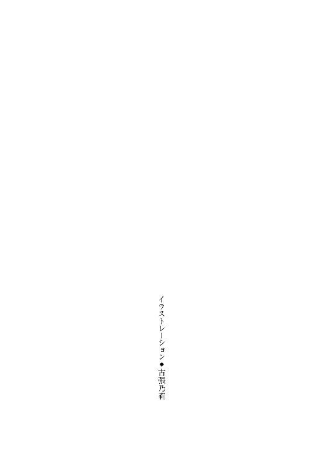
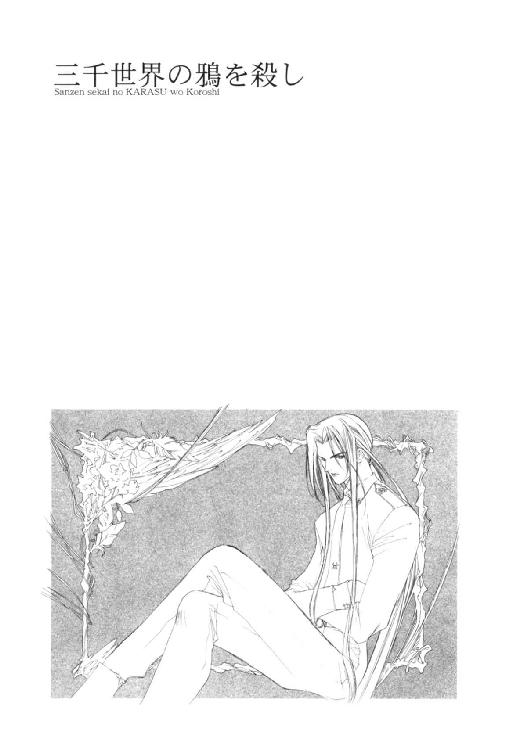

| 三千世界の鴉を殺し(4) (ウィングス・ノヴェル) | |
| 津守時生 | |



１
ルシファード・オスカーシュタインは、特別任務で出動する自分の中隊の選抜部隊を支援するべく、宇宙港第二管制室に入っていった。
第一管制室のメイン・コンピュータが、なんらかのトラブルによってシステム・ダウンした場合、この部屋にあるサブ・コンピュータが管制作業を代行する。
予備のシステムだけに規模は小さいが、情報の処理能力と速さは、個人の携帯用パソコンとは桁がいくつも違う。
相手コンピュータの防御機構を突破して侵入するハッキングは、仕掛ける側の腕が成功の是非を決め、使用する機器の性能の優劣は必ずしも問題ではない。
アレックス・マオ連隊長が、このスーパー・コンピュータの使用を許可したのは、短時間で同時に多くの場所に侵入する必要を見越してのことだった。
事前の打ち合わせ通り、すでに第六連隊に所属する通信中隊の電脳戦エキスパート五人は、各自おのれの持ち場とさだめた操作卓の前に座り、改良を重ねた私物のハッキング・プログラムのディスクを読み込ませている。
通信中隊は宇宙港の管制や監視機器の操作に配属されているため、ルシファードたちのような戦闘服ではなく軍服で勤務していた。
「任務終了後、自分の使い勝手に合わせて操作卓の設定を変更したものは、初期設定に戻すことを忘れないように」
「アイ・アイ・マム」
中隊長のメリッサ・ラングレー大尉の命令に対し、階級の異なる兵士たちは手を休めることなく、同時に応えを返す。
メリッサ自身は、そこで作業を中断して席を立つと、大きなトランクを片手に下げた黒髪の男を出迎えた。
「ようこそ、ルシファ。正直言って、あなたが後方支援に回るとは思わなかったわ。最高勲章三つを持つ英雄なら、絶対現場で指揮をするタイプでしょう？」
「電脳戦以外ならな。どの端末を使えばいいんだ？」
この基地に着任して、まだ一ヵ月半。宇宙港の警備は初めてのルシファードは、どこに行っても勝手がわからない。
どれでも同じだろうと思いつつ、念のために赤毛の女性士官にたずねた。
「右側のこの列を使って。どれでも同じよ。左側は管制専用仕様だから全部ダメ。──なにを探しているの？」
「机。いろいろ置いて使うものがあるんだが......」
「なんだか大荷物みたいね。たしか備品室に折りたたみ式の簡易机があったはず。すぐに取ってくるわ」
階級は同じ大尉だが、今回ルシファードの補佐という立場のメリッサは、答えながら歩き出している。
上官と同様にルシファードの指揮下に入った通信中隊の女性士官が、代わって立ち上がり、彼に歩み寄る。
「大尉殿。まず一同で手順と分担を決めさせていただきたいので、侵入先の指示をお願いいたします」
「目標のビルの管理コンピュータと、その周辺の道路を統制する都市警察交通局のホスト・コンピュータ──」
「ええっ！」
ルシファードをのぞく全員が、同時に驚愕の声を上げる。
最初に話しかけてきた女性士官が、上官の命令をさえぎってしまった非礼に対し、あわてて謝罪した。
「失礼いたしました、サー」
「なにかあるのか？」
「都市警察のコンピュータは、守護天使と呼ばれる専任の署員たちが、状態を常時監視しているため、侵入するだけでも非常な困難がともないます。ましてや、一定時間こちらがコントロールを奪うとなりますと、この場のメンバーにそれを可能にする技量を持つものは、残念ながらおりません」
「かりにも連邦宇宙軍の電脳戦エキスパートたちが、たかが都市警察ごときの後塵を拝していいのか？」
ルシファードは、自信喪失気味の部下を挑発するつもりで言い放つ。
しばし絶句の後、臨時の部下たちは畏敬の眼差しで彼を見返した。
「うう、カッコいい。俺も本気で言ってみたいよう」と、一番端の席に座っていた伍長がつぶやく。
「我々とて怠慢ゆえに民間に後れを取っているわけではありません。この方面の優劣は、組織や年齢ではなく才能ですから。こちらにも多少は対抗できる人材がおります。ただし、連邦宇宙軍がバーミリオン星首都の治安を守る都市警察に対し、犯罪行為を行なったという明白な証拠をつかまれては、深刻な外交問題に発展しかねません。いかに任務とはいえ、相手が都市警察とあっては、慎重にも慎重を──」
うんざりした指揮官は、諌言に近くなってきた女性士官の長広舌をさえぎった。
「その程度のことは、言われずともわかっている。そして、当然ながら責任はすべて指揮官たる俺にある。まだ不足か？」
「ノー・サー。差し出たことを申しました」
完全に目を隠すスクリーン・グラス越しにすら気配で伝わる鋭い眼差しに、士官は身を固くしてわびる。
雰囲気を戦闘モードともいうべき冷たく硬質なものに変えた男は、首をめぐらし、その場の全員に向かって命じた。
「この基地で、ガーディアンとかいう連中と対等に渡り合えるやつがいるというなら、特別任務指揮官の権限で至急招集する。心当たりがあるものは、その人物の姓名と所属を言え」
「アイ・サー」
答えたあと、女性士官はほかのものたちと目だけで話し合う。彼女が三本の指を立てると、無言のまま否定の気配だけが返る。彼女は、その指を一本折って自分でうなずく。
「ひとりは、マコト・ミツガシラ少尉。所属は──」
「輸送だな。シフトが変わって交代しているかもしれんが、とりあえず空港のほうに連絡を入れろ。なんとしてもつかまえるように。残るひとりは？」
「わが通信中隊所属のボビー・ヘインズ軍曹ですが、現在軍病院に入院中です」
「俺が病院送りにしたあいつか。全治十日なら、もう退院しているはずじゃねえのか？」
女性士官は、当然の質問にポーカーフェイスで答えた。
「二日前の夜、非番で街に出たヘインズ軍曹は、酒場で喧嘩に巻き込まれて重傷を負いました。折れた肋骨が内臓を傷つけたそうで、全治十日です」
「つまり逆戻り入院かよ。アホめが。軍曹の手と頭は無傷だったか？」
「申しわけありません、サー。彼の状態について、詳細はわかりかねます」
「だれか、軍病院の外科主任ドクター・アラムートを呼び出せ」
ドクター・サイコと仇名される医師の名を耳にして、臨時の部下たちは動揺した。重要な任務だというのに呼び出し役を身振りで押しつけ合う。
任務中の緊張感がない。
業をにやした彼が、性根を入れ換えさせようと一喝する寸前、簡易机をかかえたメリッサが戻ってくる。
「お待たせ。──どうしたの？」
「都市警察のコンピュータに侵入するつもりなんだが、戦力不足だというので、追加で至急二名を呼び寄せることにした」
「それは大変。都市警察の電脳犯罪を担当する五課は手強いわよ。特にガーディアンの中でも最強のレッドが勤務中だと、限りなく不可能に近いと言ってもいいくらい。あなたにレッド並みの実力があるなら別だけど？」
「そのレッドの実力を知らん以上、答えようがねえな」
冗談めかせた彼女の忠告をルシファードはクールに一蹴し、
「とりあえず、そいつに対抗できるというふたりの人材に任せて、ダメな時は俺が手を貸す。そこで今、ヘインズ軍曹の容態を聞くためにドクター・アラムートを呼び出せと言ったら、みんなで押しつけ合いやがって──」
「ほほほ、麗しのドクターの呼び出しなら、私に任せてちょうだ～い。役得だわぁ」
語尾にオペラじみた抑揚をつけたメリッサは、あからさまにこわがっている部下たちと対照的な上機嫌で、自分の持ち場に向かう。
過去の彼女を思い返してみると、大多数の人間と違って、サラディンを恐れているそぶりを見せたことがない。
油圧で高さを調節できる机を組み立てながら、ルシファードはその理由を考えた。
──言動から推察するに、やっぱり顔かな......。
だとすれば彼女は、蓬萊人を恐れる地球人の本能すら凌駕する恐るべき面食いだった。実害はないように思えるが、本能もかなわない面食いというのも、ちょっとこわい気がする。
こんな問題にかかずらっている状況ではないので、それ以上の追及はやめた。
床に置いたトランクを開き、今回必要とするものをテーブルの上に乗せていく。
ミツガシラ少尉の所在を調査中の兵士とメリッサをのぞく全員が、彼のトランクから出てきたものを興味津々でながめている。
四台のノート・ブック型コンピュータに接続ケーブル、二十枚以上ディスクが収納できるキャリング・ケースが三つ。
パソコンの数は違うにせよ、だれもが同様のものを持ち込んでいた。
その中でたったひとつ、注目を集めたものがある。いかにも重量のありそうなそれは、つや消しの黒いヘルメットだった。
戦闘機のパイロットが装着するものに似ていたが、下部にケーブルと接続するジャックがいくつもある。
──まさかね......。
それの正体について心当たりがなきにしもあらずの一同は、思い切って問いかける勇気もなく、半信半疑の眼差しで大尉の準備するようすをながめていた。
さらに信じがたいことにルシファードは、四台のパソコンのケーブルをハブと呼ばれる小さな集線装置に接続して一本にまとめ、それを視線の集中した黒いヘルメットと接続する。
続いて、起動させた第二管制室のコンピュータ端末の拡張機能を操作し、ヘルメットと操作卓もケーブルでつなぐ。
見守る兵士たちのあいだから、驚きの声が上がった。
──あれを使えば、五台も同時に操作できるのか。
好奇心に負けた女性士官が、彼に質問しようと口を開きかけた時、メリッサが振り返らずに言う。
「ルシファ、ドクターがつかまったわよ。そっちの操作卓に回すから受けて」
「了解。ありがとう」
管制室のモニターを画像電話代わりに使い、ルシファードは軍病院外科主任医師にあいさつした。
「こんばんわ、ドクター。忙しいところを呼び出して申し訳ない。そちらに三日前から入院している通信隊のボビー・ヘインズ軍曹について相談がある」
『これから、亡くなるのを心待ちにしていた患者の病理解剖がありますので、手短にお願いします』
青緑色の髪が幻想的な雰囲気を醸す蓬萊人の外科医は、こちらの事務的な口調に対し、同様にそっけなく答える。
度のないツーポイントの眼鏡をしていないのは、紫外線を気にしないですむ夜になったせいだろう。
「任務で軍曹の能力を必要としている。普通に思考能力があって、キーボードを操作する両腕が無事なら使えると思う。今から二時間ほど、軍曹の一時退院を許可してもらえないだろうか」
『無理ですね。ヘインズ軍曹の術後の経過は順調ですが、先日骨折したのと同じ場所を何ヵ所か骨折しているため、コルセットで固定しています。現時点で彼がコルセットをしたまま活動すると、多大な苦痛をともなうでしょう。強力な鎮痛剤投与が必要です』
「鎮痛剤は困る」
医師が〝強力な〟と口にする以上、眠気をもよおすほどの効き目だろう。そうなると、目覚めていてもキーボード操作は遅くなり、瞬時の判断力も低下する。
『ですから、無理だと申し上げました』
「......わかった。苦痛のほうは、こちらで善処する。迎えをやるので、とりあえず退院許可だけ欲しい」
『許可できません。あなた方指揮官の得意な根性だの使命感だのという精神論で、兵士に苦痛を我慢させる気ですか』
「違う。それをここで説明している余裕はねえ。ともかくこの任務は、俺の部下たちの命がかかっているんだ。頼む、ドクター」
彼に真剣に頼まれ、軽く眉を寄せて押し黙ったサラディンは、すぐに意を決したようすで画面の外にいるナースを顧みた。
『ミズ・バーレイ。このあとの病理解剖を助手のドクター・カトウに任せます』
『えええぇーっ！ うそぉ、ドクターが病理解剖をパスなさるだなんて信じられなーい。ひょっとしてお腹痛いんですか？ お昼の売店のサンドイッチが当たっちゃったとかぁ？ あそこ、適温保存を守らないから、あれほど危ないって──』
仰天している若いナースの声をマイクがひろう。
医師は、まだまだ続きそうな彼女のおしゃべりをさえぎった。
『ミズ・バーレイ。私は急用ができました。代わりの助手は......ドクター・イネスがいいでしょう。さきほど手術室から出てくるのを見ましたから、まだ生きていますよね？』
『それって、あんまりですぅ。イネス先生、夜勤明けて働きづめだそうじゃないですか。この上、病理解剖の助手だなんて仕事押しつけたら、瞳孔開いちゃいますよ』
『私も昨夜八時に緊急呼び出しを受けて以来、働きづめですよ。ドクター・イネスには、もうひと働きしたらベッドが待っていると言えばいいでしょう。彼は私より百九十八歳も年下なのですから、まだまだ体力も残っているはず』
『イネス先生は普通の人間なんですってば。よりにもよってアラムート先生と比べるのは、かわいそうですよぉ。それにしても先生が病理解剖をあきらめるだなんて、アタシどうしても信じられな～い。明日になると、隕石群がカーマイン市に降りそそいだりして？』
『私は医者ですから、隕石の落下確率予想は専門外です。天文台に電話して聞いてみなさい』
我慢できずにルシファードは吹き出した。
さすがと言うべきか。軍病院ナース軍団のミーハー根性には辟易したが、サラディン相手にこうまでやり合える精神的タフさがあってこそ、日々の激務がこなせるのだろう。
視線を戻した医師に、こらえる笑いで広い肩を震わせながら謝る。
「......失礼。多くの意味でハードな毎日がうかがえる会話だな。同情にたえないよ」
『オスカーシュタイン大尉。医師として、患者であるヘインズ軍曹の苦痛を善処するというあなたの言葉を信じて、退院を許可するわけにはいきません。ですが、この基地で部下の命がかかった任務が遂行されるなど、私が記憶する限り、勤続四十年で初めてのことです』
「はぁ......」
薄々そうではないかと疑っていたが、少しショックを受ける。
「そうかぁ、やっぱり初めてなのかぁ......ははは......」と、ふたりの通信に聞き耳を立てている周囲から、力の抜けたうつろな笑い声がもれる。
彼らにとっても、できれば知りたくなかったカーマイン基地の悲しい現実だった。
自分のひとことが、現場の士気を盛り下げたことも知らず、サラディンは離れた場所にいる大尉へあでやかに笑いかけた。
『となれば、協力しないわけにはいきませんね。趣味で学んだ鍼が、苦痛を軽減する役に立つと思います。往復する時間も惜しいでしょうから、私が軍曹をそちらへ連れて行きましょう』
いやあぁぁぁ！ やめて、こわいぃーっ。帰るー、おウチに帰るぅー！ ──という悲鳴が、第二管制室中に満ちあふれる。
安堵し、医師の厚意に感謝しようと口を開きかけたルシファードが、阿鼻叫喚の部下たちを怒鳴りつけた。
「うるせえっ！ ドクターのご厚意に対して、失礼なことを言うんじゃねえっ！ 黙らねえと部屋から叩き出すぞ、コラッ。──アホタレな連中ですまん、ドクター。そうしてもらえると非常に助かる。この借りは必ず返すから」
『借りだなんて大げさですよ。キスひとつですませましょう。それでは』
「ああ。......んっ？」
話の流れに乗って生返事をした黒髪の大尉が、耳を疑って問い直そうとする。
だが、すでに軍病院側の通信は切られていた。
「ん？ え？ あ？ う？」
初期画面を見つめ、ひとりでクエスチョンマークを連発していた彼は、医師の言葉の内容を確認しようと思って顔を上げる。
彼と下手に視線を合わせ、恐ろしい質問をされたくない兵士たちは、あわてて端末の操作を始めた。
こんな時、頼みになるのはひとりしかいない。
「なあ、メリッサ......？」
「ほほほほ、なぁに？ ハンサムさんが情けない声を出して。かのドクター・サイコに解剖をあきらめさせるのだもの、キス一回なんて安いものじゃなくて？」
「そうか......キスって言ったのか......やっぱりそうか......俺の空耳じゃなかったんだ......はずみで、ああって言っちゃったよ、俺......どうしよう......」
ルシファードは下を向いて、ぶつぶつと暗くひとりごちる。
先日、ワルターに平気でキスができたのは、切実に回答がほしい実験のせいだった。
こんななりゆきでサラディンにキスをするのは、いちじるしく抵抗がある。彼のことだから、この場の連中をからかうためにまたタチの悪い冗談を考えついたのだろう。
一同の〝いやあぁぁぁ！ やめて、こわいぃーっ。帰るー、おウチに帰るぅー！〟という恐怖の悲鳴を聞かされて、期待を裏切るようなドクター・サイコではない。
だが、利用されるこちらにも心はある。蓬萊人の媚香で正気を失っていたとはいえ、二度もディープ・キスをしてしまった同性と、無感情にキスをするのはむずかしい。
──こうなったら、機先を制するしかねえな。
一同は、彼の独白を変態外科医師に対する恐怖ゆえのものと解釈し、深く同情したが、後難を恐れて、だれもその感情を表に出さなかった。
メリッサは、ルシファードの葛藤など軽やかに無視してしまう。
「なーにグチグチ言っているのよ、男でしょ。バーンとやっちゃいなさいな」
「励ましてくださるお気持ちは、大変うれしいんですがね。なによりも男だからこそバーンとやりたくないことなんですよ。第一、ここには例の雑誌の関係者がいらっしゃるんじゃないでしょーか？」
「任務には守秘義務が課せられるし、ドクター・サイコがらみのネタは記事にしないって不文律があるのは、あなたも知っているでしょう。──ねえ、ターニャ？」
いきなり上官に名指しされ、端末の前で驚きに小さくはねたのは、さきほどメリッサの代わりに一同を代表して話していた女性士官だった。
ややこわばった愛想笑いを浮かべ、改めて彼に保証する。
「その点ではご心配なく。ラングレー大尉殿は、ケジメについて厳しい方ですから」
生真面目で少し融通が利かない観もあった彼女が、あの『パープル・ヘヴン』誌の編集員だと知ったルシファードは、これから見かけに惑わされず、周囲の女性たちには充分警戒しようと心に誓う。
もうひとりの助っ人と連絡を取っていた士官の報告が、彼の気分を明るくした。
「大尉殿！ 空港の整備場で残業していたミツガシラ少尉と連絡がつきました。大尉殿がドクター・アラムートとお話し中でしたので、私の独断で事情を説明し、任務協力の快諾を得ました。少尉はすでにこちらへ向かっています」
「わかった、ご苦労」
えてして事前の計画と実際のあいだには、なにがしかの齟齬が生じるものだった。
──それにしても、なにか妙な方向にズレた気がするな。
作戦開始時刻は迫っている。副官のライラ・キム中尉が指揮する実行部隊は、すでに空港で対探知機器迷彩をほどこした輸送機に乗り込み、作戦開始時刻と同時の出発を待っているはずだった。
ルシファードは気を取り直し、一同に今回の特別任務における作戦の説明を始める。
救出すべき人物が麻薬犯罪に深くかかわっていることと、問題の薬物〝バーニング〟については一切触れず、権力者たちの人間関係によって連邦軍出動となった経緯を話す。
それは、この基地のブレッチャー司令官が、ヴァンダイク方面軍総指令部から正式に受けた命令だった。
誘拐された男が連れ込まれたビルは、すでに都市警察が包囲し、出入り口すべてを封鎖しているが、治安の悪い地域だけに、今度は警察の周囲を誘拐犯グループと同派閥のイエロー・タウン・マフィアたちが取り囲み、双方がにらみ合っている。
犯人たちとの交渉が決裂したあげく強行突入になれば、警察対マフィアの市街戦に発展しかねない。
篭城態勢に入った誘拐犯のビルを管理するシステム・コンピュータをめぐり、ハッキングをこころみる警察と防御するマフィア側とのあいだで、激しい電脳戦になっていた。
そのめまぐるしい攻防をよそに、ルシファードは前もって侵入を果たし、すでに人質が捕らわれている部屋も割り出してある。
マフィア側は管理コンピュータのパスワードを頻繁に変更しているが、彼はそれを自動的に入手できるソフトを通信隊の兵士にコピーさせた。
これでいつでもパスワードを書き換え、コンピュータを乗っ取る用意ができる。
あとは、夜陰に乗じてビル上空に到達した実行部隊が屋上に降下し、ビル内部を武力制圧、人質を奪還するというシナリオだった。
単純だが、強行突入後は人質の安全のために一刻も早い制圧が望まれる。複雑な作戦は、時間を浪費するだけだった。
メリッサが当然の質問をする。
「でも......いわば、都市警察の獲物を鼻先で横取りするわけでしょう。連中が黙っていないと思うけれど」
「ウチの御偉方を動かした御仁が、カーマイン市との交渉を受け持つそうだ。政治的な問題は、全部そちらが引き受ける。現場でガタガタ抜かす都市警察の連中は、勝手に吠えさせておけばいいし、邪魔するなら排除する」
「排除って......ルシファ、まさか......」
「任務遂行を阻害するものは強制排除する。当然のことだろう」
指揮官の大尉は、事もなげに言う。
今までも決して訓練気分だったわけではないが、第二管制室の空気が一瞬で変わる。
実行部隊は、武装したマフィアばかりでなく、現場を包囲した都市警察とも一戦交える可能性があった。
後方支援といえども、彼らの生死を自分たちが左右するかもしれない。それが当然の場所にいた大尉と自分たちの感覚の差に愕然とする。
いつの間にか、四十年間武力行使ゼロという基地の空気に染まっていた自分を、一同は軍人として恥ずかしく思った。
このままでいいはずがない。自分も、この基地も。その思いが、一同の雰囲気と表情を一変させた。
しかし──。
廊下に通じる扉が開き、片手にキャリング・ケースを下げたミツガシラ少尉が、小走りに駆け込んできた。
昼に旅客ターミナルで出会った時と違い、迷彩柄の作業服は機械油のしみや汚れが目立つ。
「オスカーシュタイン大尉殿っ！」
「よくきてくれた。仕事中すまない」
「とんでも、ない！ よくぞ、呼んで、くださいました。自分が、大尉殿のお役に、立てるなんて、光栄ですっ」
まだ呼吸も整わないまま、満面の笑顔でまくしたてる。全身で喜びを表現している彼の姿は、飼い主をうれしそうに見上げ、舌を出して懸命に尾を振る犬を連想させた。
男の兵士は彼を知らないものもいたが、美形の〝メカ・ケルベロス〟ことマコト・ミツガシラ少尉は、ＰＨ誌上で非常に人気が高いため、直接面識があるなしにかかわらず、女性たちは全員彼を知っていた。
二十三歳の実年齢よりずっと下に見える彼は、無口で気難しいのでも有名だった。小柄でありながらケンカも強く、武勇伝には事欠かない。
その彼が〝このひと、だれ？〟状態で、ルシファードになついている。
「残業をしていたとの話だが、必要なものがあるなら士官宿舎から持ってこさせるぞ」
「大丈夫です。仕事中も必要なデータを求めて、いろいろなところにハッキングするものですから、手元にみんなあります」
違法行為など日常茶飯事だと、さわやかな笑顔でさらりと言ってのけ、
「都市警察のガーディアンなら、相手にとって不足はありません。レッドだと長時間はキツイですが、ピンクやホワイトなら充分抑えられます。端末は──ああああぁーっっっっ！」
「待て、コラ」
絶叫とともに簡易テーブルへ突進していく青年を、ルシファードはすばやく取り押さえた。
「あれは......あれは、もしや......コンピュータを思考で操作する入力装置〝ブレイン・ギア〟ではっ！」
「そうだ。精密機械だから、床なんぞに落とされると即座に壊れる」
それを聞いた一同が、やはりそうだったかと思う。
いくつかの研究機関で、すでに試作品段階まで達しているという思考式入力装置の話は、少しコンピュータに興味のあるものなら、だれでも一度は聞く話だった。
「大尉殿っ！ くださいっ、あれを私にくださいっ。くださるのでしたら、私の身体をいかようにも自由にしていただいて結構ですからっ」
「なんつー人聞きの悪いコト言うんだ。君の身体に興味なんか全然ありませんって。──あれは、俺個人に合わせて調節してあるから、君が装着しても作動しねえよ」
「分解して構造を見たいんですーっ！ くださいったら、ください～っ。一生あなたの犬になります～っ」
長身の大尉にとりすがった少尉の哀願は、次第に子供の駄々じみてくる。
「独身者用士官宿舎はペットの飼育厳禁だ。ダメったらダメ。おもちゃじゃねーの」
「大尉殿のいじわる～ぅ。ひとり占めして、ずるいずるいずるいぃ～」
とうとう子供返りしたのか、額を上官の広い胸にぐりぐりと押しつけながら、半分ベソをかいてなじる相手に、ルシファードは根負けした。
「わかったわかった。ケーブルの接続を変えなければ、好きにさわっていいぞ」
「やたっ！ わーい。カッコイー、スゲー、サイコー」
見た目よりもっと重量のあるブレイン・ギアを手に取り、ひっくり返して中を調べ始めた彼だが、感嘆の言葉が子供から戻らない。
「忘れているようだから一応言っておくが、もう特別任務中なんだぞ、ミツガシラ少尉」
「......マコって呼んでください」
「呼ぶのは一向にかまわんが、今の妙な間はなんだ？」
「だって、お兄さまになって欲しいだなんて、とても恥ずかしくて言えません」
ブレイン・ギアをためしにかぶり、迷彩柄のこけしのような姿になったマコト・ミツガシラ少尉が、恥ずかしげに身をよじる。
おお、と通信隊の一同がどよめく。
続くルシファードの間は、平常心を取り戻すためのものだった。
「......その、とても恥ずかしいことを言っているような気がするのは俺の空耳か？ くどいようだが、今は任務中だ。君の高度に個人的な発言に関しては、あとで話し合うにしても、これ以上任務遂行のさまたげになるようなら、ここから追い出すぞ」
「アイ・アイ・サー。ミツガシラ少尉、ただいまより、作戦準備に入ります」
迷彩こけしが敬礼する。
──見かけは、まともそうだったんだがなぁ......。
見かけすら、まともに見えない自分を棚に上げて、ルシファードは先行きに不安を感じる。
これからサラディン・アラムートがくるというのも、彼の大いなる不安材料だった。
２
ルシファードとの通信を切ってから二十分後──。
白衣を着用したままのサラディン・アラムートが、自動車椅子に乗ったヘインズ軍曹の付き添いとして現われた。
心構えをしていたにもかかわらず、ドアが開き、白い人影が視界に入ったとたん、通信隊の兵士たちは悲鳴を上げた。
「きゃーっ、出たぁーっ！」
「いいかげんにしろ、きさまら！ 来たならまだしも、出たとはなんだ、出たとは。ドクターをなんだと思っている。上官侮辱罪に問われても俺は知らんぞ」
こまかいところにこだわったルシファードは、一同を厳しくしかりつけてから、礼儀正しく大佐である軍医に敬礼する。
「大変お忙しいところに無理なお願いをいたし、誠に申しわけありませんでした。作戦指揮官として、ご協力を深く感謝いたします」
「ご丁寧にどうも。みなさんの熱烈な歓迎を受けて、自ら操縦してきた甲斐があったと実感しております」
「ああ、それでこんなに早く......」
軍病院は基地本部に隣接している。宇宙港とは、リニア・カーの自動走行で通常四十分かかる距離だった。
軍曹を車椅子に乗せ、地下駐車場に移動するだけでも数分はかかる。運転を手動に切り替え、サイレンを鳴らしたとしても、最初から渋滞の存在しない基地内のリニア・ロードを、果たして二十分で到着できるものだろうか。
──一体、どーゆー運転をしてきたんだ？
その場のだれもが抱く疑問だった。
暴走救急車。しかも運転手はドクター・サイコ。そのまま、あの世へ連れていかれそうな気が──。
一同が勝手に恐怖の妄想をかき立てている時、ルシファードは今の相手の答えに一瞬感じた違和感を問いただす。
「操縦って？」
「病院の屋上にあるヘリポートから、ＶＴＯＬを操縦してきました。なにしろ三十五年ぶりでしたので、いろいろ忘れていたり、わからなかったりで、予想以上に時間がかかってしまいましたよ」
「三十五年ぶりって......その時、操縦していた機種は？」
ルシファードは、サラディンの軍服の胸にあるパイロット章から、第一種飛行技能の持ち主であることは知っていたが、三十五年間操縦しなかったという事実は聞き捨てにできない。
「今のＶシリーズ導入前ですから......ハリケーンだか、タイフーンだか......」
医師は目を伏せ、細い頤に人差し指を添えて記憶をたぐる。
「サイクロンだな。よくそれで、Ｖ３エリアルを操縦できたもんだ」
「なんとかなるだろうと思ったのですけど。まあ、操縦のほうは、垂直上昇から水平発進に移る時、ちょっとバランスを崩したものの、うまく姿勢制御機能が働いてくれました。ところが、着陸がもう全然ダメで。コンピュータのガイダンスを聞いても、指示されるメータの位置が、私の知っているものと全然違うのです。困り果てました。シャトルの発着がない宇宙港を臨時に使用させてもらったのですが、こうなったら、空港のほうに回ってだれかに聞いてみようと思っていたところに、ちょうど残業していた管制オペレータの通信が入りましてね。彼の親切な誘導のおかげで、無事に着陸することができました」
話が進むにつれて次第に青ざめていった一同は、無謀のひとことにつきる顚末が語られたあとも無言だった。
今夜はこれから、ヴァンダイク方面軍総指令本部の高官が、小型宇宙船でカーマイン基地にやってくるというので、この第二管制室とともに第一管制室のオペレータも居残っている。普段ならとうに無人になっていた。
軍が民間と共用している空港に回れば、夜勤の待機パイロットやちょうど出発寸前のライラたちがいるので、だれか必ず教えられる人間がいるだろうという判断は、間違っていないのだが──。
重い沈黙を本人の明るい声が破る。
「そうそう、ラングレー大尉。チュン少尉は、あなたの部下ですね？ 着陸できたあと、きちんとお礼は言ったつもりですが、あなたからもほめてあげてください。彼はすぐれた危機管理能力の持ち主です」
「ありがとうございます、サー。よくねぎらっておきますわ」
如才なく答えたメリッサの笑顔は、さすがに心持ち引きつっていた。
ルシファードは医師の両肩を鷲摑みにすると、間近まで顔を寄せて獰猛にうなる。
「涼しい顔で笑ってンじゃねえよ。一歩間違えば大惨事だろーが。今頃、死んでいたかもしれねーんだぞ」
「人間は必ず一度死ぬのです。成功率三パーセントの手術から生還した患者が、退院の翌日、散歩中に犬のフンを踏んで転び、頭を打って死んだ実話もありますよ」
「あんたの自説は前にもうかがったが、生理的欲求にしたがっただけの犬と違って、俺はあんたを死なせたことを一生くやむんだぜ。あんたは、死ねばすべてそこで終わりだと思っているようだが、残されたものの悲しみは、そこから始まるんだ。医者なんだから、家族や周囲の人間たちの愁嘆場は、山ほど見てきただろう」
「私に家族はいませんし、周囲の人間たちは逆に喜んでくれるでしょう。その点については自信があります。あなたはそうやって怒りますが、責任感を抜きにして、私が死んだら本当にあなたは悲しいですか？」
最後のくだりは純粋に疑問として口にしているらしい。強烈な皮肉とも受け取れる言葉の内容ほど口調に毒はない。
肩から離れた男の手が上がり、真珠の光沢を帯びた白い顔を両側から乱暴にはさんだ。
「おい。もう一度同じことを言ったら、ここにはっきり手形がつくほど、あんたをブン殴るからな」
低い声で静かに決然と言い渡す。
ルシファードの内側には、意識的に抑えなければいけないほどの怒りがあった。この医師は、時々こうして彼の平坦な感情を強く揺さぶる。
──いくら第一等勲章三個つきの英雄でも、ドクター・サイコを本気で脅迫するなんて、蛮勇がすぎるんじゃないかなぁ。
仕事に没頭しているフリをしながら、通信兵たちは背中でふたりの会話を聞いていた。このあとなにが起きても、こわいので絶対に振り返らないでおこうと固く心に誓う。
パープル・ヘヴン誌に掲載されるホモ・ポルノ小説執筆者でもあるタチアナ・ビレンスキー少尉は、親密なものに変化した会話を耳にしたとたん、仕事中でありながらＰＨモードの妄想に頭が切り替わってしまった。
──大尉に本気で怒られ、おびえて涙ぐむ（注・逆に他人をおびえさせ、泣かせたことは数え切れないほどあるが、それを読者に想起させてはいけない。事前にロマンチックな描写で甘い雰囲気を盛り上げること）ドクター・アラムートに、表情をやわらげる（注・ここで、あの邪魔っけなスクリーン・グラスは消滅。決して描写ミスではないが、どうせＰＨの読者はそんなこまかいコトは気にしない。読者はあくまで、美顔歓迎、熱愛奨励、同衾待望、超過激現実的淫行情景切望......ああ、だんだんワケが......）オスカーシュタイン大尉。そっと優しく胸に抱きよせて──。
彼女の頭の中で、ふたりはその意向に沿った演技を始める。
『医者のくせに俺の寿命を縮めるなんて、罪は重いぜ、ドクター。今夜一晩かけて、たっぷりお仕置きをしてやるからな』
愛情深く耳元でささやく魅惑の低音──。
「ターニャ。手が止まっているわよ。なにか問題があるの？」
上官の冷たい声が、ドクターの立場になり切って陶然としていたビレンスキー少尉の心地よい妄想を断ち切った。
ラングレー大尉は同性だけあって、男性士官たちのようにＰＨを毛嫌いせず、偏見もない。そのかわり、あくまで公平な立場から職務と趣味の混同には厳しかった。混同をかぎつける嗅覚は鋭く、すぐにこうして注意される。
「申しわけありません、マム。少し集中力散漫になっていたようです」
「あなたの能力は高く評価していてよ」
言外に勤務態度は評価に響くぞと匂わせて、にこやかに励ますメリッサの緑の目は笑っていなかった。
ＰＨ誌記者に限らず、他人のプライバシーを娯楽にするゴシップ好きの連中は、少しでも気を許すと手に負えないほど増長する。彼女は、ワルター・シュミットと離婚する時、それをいやと言うほど思い知っていた。
一方、通信兵たちを注意力散漫にさせている原因のふたりは、周囲の思惑など全然気にも留めない。
サラディンは当然おびえもせず、黒髪の大尉の手に自分の片手を重ね、淡く微笑んだ。
「すみません。私の死を悲しんでくれる人など、もう二度と現れないと思っていたものですから......」
束の間見せたその笑顔は、感情に鈍感なルシファードですらわかったほど、喪った人への哀惜に満ちた寂しげなものだった。
凄艶な美貌の持ち主が無防備に見せた弱々しい表情は、彼の心を再度強く揺さぶる。
どんな女性が、今でもサラディンにこんな顔をさせるのだろうか。
相手の過去に興味を持つ自分に戸惑う。知ってどうなるわけでもないし、どんな場合でも他人の過去に対する詮索は非礼だった。
その思いは口にこそしなかったが、怒りに任せて乱暴なマネをしたことも含め、手を離してわびる。
「すまん。つい手が動いちまった。こんなマネのできる立場じゃねえのにな」
「最初に失礼な発言をしたのは私ですから。心配してくださったお気持ちはわかっています。慣れないことにうれしくて、つい憎まれ口をたたいてしまいました。ありがとう、大尉」
にっこり笑う医師は、もういつものサイコな白衣の大悪魔に戻っていた。
「帰りはＶ３を操縦できる人間に送らせるから、あんたは絶対に操縦桿をにぎるなよ。また操縦する気なら、パイロットの追加技能講習を受けて、Ｖ３の操縦法をマスターしてくれ。この基地には旧型しかなくてよかったぜ。Ｖ５ボレアスだったら墜落していたぞ」
「そうですか。私は運がよかったのですね」
「......そういう問題とは違うと思うが？」
ルシファードは力なく答える。
この医師との会話は、しばしば他人とのズレを指摘される自分ですら常識が侵食されていく。
──ともかく任務だ、任務っ。
妙な方向に向かった意識を切り替え、ずっと放置されていた車椅子のヘインズ軍曹に視線を向ける。
「気分はどうだ？ 軍曹」
「苦痛はありません、サー」
身じろぎもせず座っていた軍曹は、のろのろと顔を上げ、以前に教育的指導を受けた上官の問いに答えた。
こけた頰と目の下のクマ、さだまらぬうつろな視線。二度にわたる骨折と入院生活のせいばかりとも思えない憔悴ぶりだった。
サラディンの操縦するＶＴＯＬの中で、彼がどんな思いをしたのか、そのやつれ方が如実に物語る。
このありさまでは、使いものにならないかもしれない。
やせて面長な軍曹の頭部や肩には、銀色の長い鍼が数本刺さっていた。裁縫などに使う針とは違い、指の腹で押し込みやすいよう、頭の部分をコイル状に巻いてある。
地球人の医学には、鍼を使った治療法があると聞いてはいたものの、実際目にするのは初めてだった。それを蓬萊人の外科医が行なうというのも奇妙な話だが、患者が地球人なら効果に問題はないのだろう。
「骨折部分の痛覚をブロックしてあります。急に動きますと鍼が神経に触れて痛みますから、気をつけてあげてください」
付き添いの医師は患者の状態を説明する。
「うおぉぉぉーっっっ！」
「今度はなんだ......」
いきなり奇声を発した軍曹に、ルシファードはうんざりした調子でたずねる。
だんだん任務を無事に遂行できる自信がなくなってきた。この基地には、呪いがかけられているのかもしれない。
「あああああ、あれはブレイン・ギアッ！」
「待て」
肘かけにある装置を操作し、簡易机の方向へ突進しかけた自動車椅子の背をすんでのところでつかむと、その場に押しとどめた。
介護者用として背もたれにも作られた装置を使い、上官の手で強制的に車椅子を停止させられたヘインズ軍曹は、さきほどまでとは別人のような勢いでわめき始める。
「くださいっ！ あのブレイン・ギアを俺にください、大尉殿っ。あれをくださるなら、一生大尉殿の奴隷になりますからっ！」
「メカ・フェチは、みんな同じセリフを言いやがるな。──独身士官用宿舎は、ペットも奴隷の飼育も厳禁だ。あれは俺個人に合わせて調節してあるからダメ、分解もダメ」
「奴隷の飼育......。淫靡な響きが、なんとも心なごみますねぇ」
そばで医師が、うっとりと半畳を入れる。
ルシファードは渋い顔で反論した。
「マコならまだしも、飼育するのがコレか？ もはやゲテモノのレベルだぜ。冗談じゃねえや」
「マコ？」
「マコト・ミツガシラ少尉。英才の誉れ高き輸送隊のメカニックだ」
ルシファードは、なんとか前に進もうとして足で床をける軍曹を冷たく見下ろしながら、簡易机のすぐ近くに陣取った少尉の方向を立てた親指で示す。
ふたりの話題にのぼった〝メカ・ケルベロス〟は、キーボードを操作する手を止め、少しイスを回して振り返る。
「初めまして、アラムート大佐殿。現在は、オスカーシュタイン大尉殿のお手伝いをさせていただいております」
「よろしく、少尉。確かに人気品種になりそうですね」
にっこりと笑い合ったサラディンとマコトのあいだに見えない火花が散ったことなど、黒髪の大尉は気づきもしなかった。
自力で進むのをあきらめた車椅子の軍曹は、上官を脅迫する暴挙に出る。
「......さわらせてもくれないなら、無言電話をかけてやる。メール爆弾送るとか......悪口言いふらすとか......恥ずかしい写真を盗み取りしてバラまくとか......つけ回して柱の陰からウルウル見つめて......」
「悲しいくらい根暗なやつだな、おまえ～。そんなんじゃ婚約者に逃げられるぞ」
「下着盗むとか......ぎゃああああ、痛い痛い痛いっ！」
突然甦った痛覚に悲鳴を上げる男の背後で、ルシファードが引き抜いた鍼を持って立っていた。
「なあ、ドクター。苦痛を倍にする場所ってある？」
「全部鍼抜いちゃえばいいんです、そんなヤツ」と、マコトが憎々しげに進言する。
医師は、彼の質問に直接答えず、
「心臓への血流を激減させるツボというのがありましてね。結果として心筋梗塞を誘発するのです。心臓発作もなかなか壮絶に痛いみたいですし、いかがでしょう？」
「だけど、殺しちまったらマズイぞ──」
わざと言葉を切ったルシファードは、鍼先を見つめてつけ加える。
「任務が終了するまでは」
「ひぃぃぃ。二度と言いませんっ。ブレイン・ギアはもうあきらめますから、命ばかりは......イタタタタ」
「あたりめーだ、バカ野郎。今度、変態なコト抜かしやがったら、しばり上げて全身に針刺してやるからな」
「その前に、大尉には私がツボの位置をレクチャーしてあげましょう。もちろん、治療用のではなく」
黒髪の大尉から長い鍼を受け取った医師は、苦痛にあえいでいる軍曹の首筋に再びそれを迷いなく打ち込む。
ルシファードはＰＣリングの時計を見遣って舌打ちした。
正面の壁に作られたメイン・スクリーンには、現在イエロー・タウンに向けて飛行中の輸送機の現在地点と、目標地点が表示されている。
「マコ。大至急軍曹と相談して、都市警察のほうは頼む。なにか支障がある時は、即座に報告しろ。作戦開始時刻が過ぎちまった」
「アイ・サー、お任せくださいっ」
ミツガシラ少尉は、願い通り自分の愛称を呼んでくれる上官に明るく応じる。
少し誇らしげに頰を紅潮させた彼は、用済みになった部外者の医師に対し、さりげない一瞥を送って仕事に戻った。
優越感混じりの眼差しを向けられようと、医師は別段鼻白むでもなく、端末の並ぶ第二管制室をひとわたり見回す。
二百年以上生きている蓬萊人にとって、やや気負いの感じられるマコトの態度は、赤ん坊におしゃぶりをぶつけられた程度のものだった。可愛らしくて到底怒る気になれない。──これがカジャなら、生意気なマネをした罰に絶対デコピンしてやるところだったが。
「ドクター。働き通しで疲れているだろう。こっちの部屋に休憩室がある。そこで休んでいてくれ。ヘインズ軍曹になにかあったら呼びにいくから」
「ありがとうございます。ですが、少しここで、あなたの仕事ぶりを見ていてもよろしいでしょうか？ 邪魔はしませんから」
「もちろん、どうぞ」
無神経だと自分で称するわりに軍医への気遣いを忘れない男は、スクリーン・グラスをはずしながら気軽く答える。
何度見ても驚嘆に値する絶世の美貌だが、中に宿った性格のおかげで、宝の持ち腐れの極みだった。ここまで持ち腐れ切っていると、いっそ爽快感さえ覚える。
改めて感心している医師の熱心な視線をなんと解釈したのか、ブレイン・ギアをかぶりかけた男は、目の縁で笑った。
前言撤回、とサラディンは思う。たまに見る素顔でこんな風に優しく微笑みかけられたら、心の揺れない人間はいない。
ルシファードは、メカ・フェチふたりが欲しがって大騒ぎした黒いヘルメット型の入力装置を装着してバイザーをおろし、ワイヤー・マイクに命じる。
「ブレイン・ギア起動」
内蔵ＡＩが彼の声紋に反応し、各種センサーが脳波パターンを始めとした登録者との確認作業を瞬時に行なう。
『登録者本人と確認。ノーマル・モードにてドライブ』
宣言とともに彼の命令を受けたブレイン・ギアが、管制センターのサブ・コンピュータに複数の命令を発した。
第二管制室の壁一面を使ったメイン・スクリーンに次々とウインドウが開き、データや映像が表示されていく。
「本当に？ あの数を全部ひとりで処理しているって言うの？」
見上げたメリッサが呆然とつぶやく。
周囲のどよめきにメカ・フェチの血が騒いだが、マコトはあえて自分の仕事に意識を集中する。都市警察の中枢に侵入するのは、彼でも細心の注意を必要とした。
不正アクセスだと看破され追跡を受ける場合も考えて、日頃いくつか使っている迂回路の中でも、一番複雑なルートを使用する。さらに調べられてもチェック程度ならしのげるよう、頻繁に情報のやり取りが行われている都市警察の分署に侵入して、正規のコードでアクセスした。
彼自身、ここまで自分が慎重にならざるをえない〝ガーディアン〟たちに対し、尊敬と畏怖と敵愾心を抱いている。
過去に一度、腕試しに都市警察へ侵入した部下が、ガーディアンのカウンター・ハックによって所在を突き止められ、逮捕された事件があった。その時は自由時間だったため、一個人の違法行為と判断され、政治問題化はまぬがれた。
今回は絶対逮捕されるわけにはいかない。軍による組織犯罪と判明すれば、処罰は作戦指揮官オスカーシュタイン大尉にとどまらず、ブレッチャー司令官にもおよぶだろう。
──転任なさったばかりの大尉殿が、ガーディアンのことをご存じなかったのは当然だ。やるからには、自分の腕がどこまで通用するか、とことんやってみるチャンスだと考えよう。
端末を操作する童顔の彼の唇が、獰猛な笑いにゆがむ。
彼は曖昧さを嫌い、なにごとも明快な解答と決着を求める性格だった。多くの可能性を考慮しながら、たったひとつの結果を追い続ける姿は、地獄の門の番犬というより猟犬と仇名するほうが正しい。
ヘインズ軍曹は、使い慣れているハッキング用プログラムと同じものを、通信隊の同僚から借りてコピーしている。
入院によってパソコンに触れなかった日々が続いた軍曹は、おそらく日頃の実力を出し切れないだろう。
そう判断したマコトは、都市警察交通局コンピュータのコントロール奪取後、自分が派手に動いて囮役となり、できる限り時間稼ぎをするという役割分担を決めた。
──願わくは〝レッド〟のシフトじゃないことを......！
マコトは祈る気持ちで、侵入先にいくつもの罠を仕掛けていく。
だが、ガーディアン・レッドが相手なら、こんなものはまったく役に立たない。罠のひとつとして仕掛けたウイルスは、侵入を察知して駆けつけたレッドに接触した時、反応すべき敵だと認識したかどうかのうちに消滅させられてしまったという苦い過去がある。
罠の対抗措置としてキラー・ウイルスやワクチンを使った形跡もなく、どんな方法で消滅させていくのか、マコトがどんなに考えてもわからなかった。
呪文を唱える魔法使いの腕のひとふりで、小鬼の群れは一瞬のうちに消え失せる。
はるか昔から、ずば抜けて優れたコンピュータの達人を〝魔法使い〟と呼ぶ習慣があるが、レッドはまさにウィザードの尊称にふさわしい存在だった。
凄腕と目されるハッカーたちが集まって、情報交換する秘密のサイトがある。構成メンバーのひとりと別のサイトで知り合ったマコトは、その紹介で数ヵ月前からアクセスを許されるようになり、真偽のほどは確かではないが、ガーディアンについての情報をいくつか得ていた。
都市警察でメイン・コンピュータを守護する彼らは六人いて、レッドのほかにピンク、ブルー、ブラック、ホワイト、ゴールドと呼ばれている。
レッドのほかは、全員インプラントと呼ばれるコードレスの入力装置も兼ねた補助脳を頭に埋め込んでいた。
インプラントは高度な外科手術を必要とするものの、同じ思考型入力装置のブレイン・ギアと違い、自分の頭の中から直接コンピュータに指令を出せる手軽さが高い評価を受け、一時期銀河系規模で爆発的に流行した。
しかし、その手軽さが災いする。
補助脳への愉快犯的ハッキングによって発狂したり、テロリストに操られて破壊活動を行なうもの、同じく第三者の利益のために犯罪を犯すものなど、真犯人を特定できない深刻な事件が多発した。
そのほか不適合で重い脳障害の発生したケースもあり、現在の銀河連邦法は、脳と機械を人為的に融合させることを原則的に禁じている。
宇宙港や空港など、テロを警戒する公的施設では必ずチェックがあり、非合法手術によるものと判明すれば即座に警察へ通報される。逮捕者には、強制摘出手術と重い処罰が待っていた。
それでも事故で脳に損傷を受けたという架空の診断書を作成し、非合法な手術でインプラントを埋め込む人間はあとを断たない。
おのれの意志の延長として、コンピュータを自在に操りたいという人間の願望は、ほとんどの人間が持っている。その根底には、コンピュータと融合することで、人間以上の存在になれる──という超人幻想があった。
幻想に取り憑かれ、非合法なインプラントに執着する人々の関心を別のものに向けねばならない。それが、多くの機関のブレイン・ギア開発研究に、銀河連邦が莫大な援助をしている理由のひとつにもなっていた。
都市警察のガーディアンたちが装備しているインプラントは、当然ながら合法的なものだった。彼らは、脳が侵されるバーミリオン星の風土病にかかり、切除手術を受けたあとの機能障害を克服するため、補助脳を埋め込んでいる。
百パーセント自前の脳で勝負するしかないハッカーたちは、羨望と軽蔑の入り混じった感情をガーディアンに抱いていた。
反対に最強のガーディアンであるレッドは、インプラントを持たないことで、ますます神秘的な恐ろしい存在になっていく。
そしてマコトは、たった今気づいた可能性に暗然とする。
たとえ現在レッドの勤務でなくとも、守護する都市警察のコンピュータに侵入したハッカーが、ごく一部のシステムにせよコントロールを奪った話を耳にして、彼はその状態を放置しておくだろうか。
自分なら、絶対に許さない。
問題のビルに突入する実行部隊が、人質の奪取に手間取るほど、人質の命ばかりでなく、後方支援のこちらの危険も高くなる。
最悪の事態を想定しながら準備をするのは、気がめいる作業だった。
もっとも明るい材料もある。
ルシファードの使用しているブレイン・ギアの性能は、マコトが論文で読んだいくつかのものより、はるかに高性能らしい。根拠はないが、この方面で外れたことのない技術者としての勘だった。
多くの勲功を上げている彼が、それを装備して後方支援に回ったという事実は、何にもまして心強い。
こんな時でもなければ、どんなことが可能なのか、徹底的に調べつくしたいところだった。
３
都市警察交通局のシステム管理コンピュータが、不正に侵入した何者かによって乗っ取られ、イエロー・タウンにあるリニア・ロードの一部回路が遮断された。
浮力を失った走行中のリニア・カーは、慣性のまま進行方向へ移動しつつ、道路と車体との摩擦で停止する。途中でバランスを崩したり、進路変更中に横転した運の悪い車もあった。
停車中の車は、すべて道路に並ぶ座席つきの箱と化す。営利誘拐犯たちの篭城するビルを包囲した警察車両も、例外ではなかった。
上空管制システムも沈黙する。ビル周辺を旋回警戒中だった警察用ＶＴＯＬの副操縦席レーダー画面から、直前まで提供されていた周辺空域情報が消える。
警察用ＶＴＯＬの異変はそれのみにとどまらず、操縦系のコントロールがパイロットの手から離れ、勝手に飛行方向を変更した。
「おい、なんだ！ 故障かよっ」
「違います！ これは......っ。この機は、外部からハッキングを受けて、コンピュータを乗っ取られたんですよ」
愕然とするパイロットたちのフライト・ヘルメットに、低い男の声で通信が入る。
『都市警察の諸君らに告げる。こちらは銀河連邦軍カーマイン基地所属ルシファード・オスカーシュタイン大尉だ。現在、特別任務遂行中。我々の任務が完了するまで、その場に待機してもらいたい。我々の行動を阻害した場合、実力で排除する。その際のそちらの犠牲について、我々は一切責任を負わない。以上』
「なめやがってっ！ 空港警備会社代行業が、一人前なことを抜かすじゃねーかっ！ ガーディアンはどうしたっ。軍のクソ野郎にどうして好き勝手をやらせておくんだ」
パイロットがどれほど怒り狂おうが、乗っ取られた彼らのＶＴＯＬは本来のコースからはずれ、現場から遠ざかっていく。
都市警察のＶＴＯＬを追い払い、それと入れ替わるように接近した軍の輸送機が、目的地のビル屋上に着陸した。
対レーダー迷彩をほどこしていても、警察のパイロットに肉眼で発見される可能性はある。迅速を要する作戦行動の初動段階で、着陸を邪魔されたあげく空中戦に発展しては、作戦の成功などおぼつかない。
輸送機から飛び降りたバトル・スーツの兵士たちは、内側からバリケードの築かれた屋上出入り口を爆破し、ビル内に突入する。
彼らが使った爆発物にしては、爆発の規模と音がずいぶん大きい。屋上からの突入を阻止しようとした犯罪者たちが、バリケードに仕掛けたものも一緒に爆発したのだろう。最初から警戒して行動したが、想像にたがわず悪質な連中だった。
輸送機から出た指揮官のライラ・キムは屋上にとどまり、Ｂ４サイズの板状になった情報端末のサイバー・ボードに視線を落とす。
ルシファードから受け取った四枚のディスクのうち、一枚は立体透視図を含むこのビルの詳細な情報だった。
各階各部屋にいる人間たちは、画面の立体透視図に赤い光の点で表示され、その光点の位置は、現在ビルの管理システムを掌握している宇宙港第二管制室の部下たちが、最新のデータを送信することで、常時修正されている。
屋上から移動していく黒い点が突入部隊の兵士たち、彼らの目指す青い点がパブロ・エリオンド──即効筋力強化剤〝バーニング〟の売人だった。
エリオンドのいる十階と下の階の境は、突入と同時に防災シャッターが下り、エレベータは九階より上には行かない。残っている非常階段の出入り口には、到着次第部下二名が張りつき、マフィア側の応援を迎え撃つ手はずになっていた。
一階と地下、近隣のビルからの出入りは都市警察が封鎖し、屋上にはライラがいる。
マフィア側の武装とバーニングの使用の有無が不明なため、敵側の戦力は不明だが、警察はこのビルを包囲し、封鎖する直前、事件とは無関係な人間はすみやかに退去するよう、勧告している。
今も自分の意志でビル内にとどまっているものは、誘拐犯の一味だけだった。こちらが射殺した場合、強硬な非難を浴びるような善良な一般市民は残っていない。
したがって部下たちには、相手が武器を向けてきたら即座に射殺しろと命じてある。
移動する黒い点が十階に達した。その前進をはばむように移動する赤い点が三つ。
『中尉！ 出ました、例のノーマル・タイプが三人です。ふたりは自動小銃、ひとりはなんだかでかくて、見たコトのない銃をかかえています』
突入部隊の副隊長に任命したグラディウス・ベル軍曹が報告してくる。
最初に危惧した通り、エリオンドが持っていた即効筋力強化剤を使った敵が、突入部隊撃退に現われた。
敵の行動速度に後方支援組のオペレータの入力が間に合わないのか、ライラが見ているボードの画面上では、赤い点は部屋からまだ移動していない。
若くて実戦経験もないに等しいグラディウスだが、実戦経験の乏しさでは、ほとんどの兵士が大同小異であり、ライラは六芒人の高い戦闘能力とセンスに期待して任命した。
兵士たちは、なにかを考える前から自然に体が動き、武器を操作して戦えるように毎日訓練を積む。経験不足の最大の問題は、判断力が未熟なのと、恐怖からパニックに陥りやすい点だった。
前線で直接指揮をとる下士官は、敵の戦闘力を即座に見極め、効果的な攻撃方法を部下に指示しなければならない。それにはある程度の経験か、戦闘センスを必要とする。
六芒人の血が流れるグラディウスは、剛胆な上にセンスがあった。
そして、今回はルシファードのサポートも大きい。
日頃、すぐになにか口実を作ってデスクワークをサボりたがるズボラな男と、とても同一人物とは思えなかった。──副官としては、実戦の時だけ豹変するのではなく、これだけの熱意と細心さを普段の仕事にも見せてほしいのだが。
彼は基地の備品リストをすべてチェックし、兵器庫の番人をしている補給係の軍曹ですら知らなかった武器をいくつも発掘した。
彼から渡されたリストを見て兵器庫にかけ込み、封印も解かれていない超振動ブレードの箱を発見した時には、それを五体投地で拝みたいほど感激した。たった一本でもこれがあれば、敵側にバトル・スーツ並みの装備があろうと、接近戦を有利に戦える。
危険過ぎて訓練にはとても使えない超振動ブレードが、実戦のない基地で倉庫にしまい込まれていたのはわかるにしても、そもそもなぜ配給されたのかは、大いなる謎だった。
あのブレッチャー司令官が、不要不急のものを申請するはずもなく、諸経費切り詰めにうるさい総務が、こんな予算のむだ遣いを許すはずもない。
ライラの両脇に立つ二名の兵士は、周辺のビル群に油断なく目を走らせ、つねに警戒している。二大マフィアに支配される犯罪多発地帯にあって、どこからロケット砲で攻撃されるかわからない。
輸送機は兵士を降ろしたあと、すぐに高度を上げ飛び去った。指揮官の撤退命令がない限り、戻ってこない。
部下と同じくバトル・スーツを着用しているライラの通信装置に、突入部隊兵士複数の小さな叫び声が入った。
「どうした、軍曹！ 報告しろっ」
『変なデカい銃で撃たれました。こっちに被害ありません。だけど、すごい熱とまぶしい光が出て、壁にデカい穴が開いてます。あんなのの直撃喰らったら、いくらバトル・スーツを着ていたってイチコロですよ！』
未知の銃のただならぬ威力を目の当たりにして、報告するグラディウスの声もうめきに近い。
ライラは、あきれてうめきそうになる。
壁越しでもバトル・スーツを貫通できるからといって、ビル内でビーム兵器を使用する敵がいるとは思わなかった。
火災報知器が作動しなかったのは、一発目なのとねらいが低かったせいだろう。
素人にはかなり重いビーム・ライフルも、バーニングを使用中の人間なら拳銃同然に軽々とあつかえる。ひとつのエネルギー・カートリッジで四回しか撃てないのと、銃身が高熱を帯びるために連射はできない。
「軍曹、対光学発煙筒を使え。それでビームは無力化できる」
通常の銃撃の音と女軍曹の命令が、ほとんど重なって聞こえた。
「超振動ブレードの使用を許可する。持ち主だけを殺して、ビーム・ライフルは頂戴しろ。君の給料の二年分はする」
ライラの両脇を守る兵士たちが、最後のくだりを聞いて口笛を吹く。
どうやって密輸したのか知らないが、裕福な犯罪組織のほうが、カーマイン基地にない高価な武器を持っているという逆転の構図は、猛烈に腹が立つ。
兵器のほうも、社会のウジ虫の手で犯罪に使われるより、戦闘のプロの手でメンテナンスされながら正しい使い方をされたほうが、作られた甲斐のあるというものだ。
──そーよっ、そーだわ！
彼女はとっさに口走った自分の言葉を、さらに別の命令に発展させた。
「軍曹。これから先、軍が持っていてもおかしくない金目の武器があれば強奪しろ。この任務にかかった費用を、連中から強制的に物納で払わせる。──どうせ被害届けなんぞ出すワケはない」
自分以外への通信でも、指揮官の肉声が聞こえる位置にいた両脇の兵士たちと、命令を受けたグラディウスが同時に吹き出した。
女軍曹はすぐに押し込み強盗団の副首領にふさわしい返事を返す。
『合点だ、親分』
上官命令になんか文句あるのか、オラ、という態度で顔を上げたライラに対し、ふたりの兵士はにぎった拳の親指を立てた。
「俺たちゃ、正統なヴァイキングの末裔であります」
「戦いに戦利品ってのは常識じゃん、であります」
暗視タイプに切り替えたバイザー越しに見た彼らは、押し込み強盗団の見張りらしく歯をむき出して、わざと下品に笑う。
わかればよろしいとうなずきつつ、ライラはこの事態を深く考えないことにした。自己嫌悪に浸っている暇はない。
唐突にルシファードの通信が入った。
『ハニーからダーリンへ。火災報知器は眠らせた。各ドアのロックは全部解除してある。グラディに予備のエネルギー・カートリッジも分捕れと言っておけ。どうぞ』
「了解。ご教授ありがとう、ハニー」
細かいところまで、本当によくサポートしてくれる中隊長殿だった。
マコト・ミツガシラ中尉は、ネットワーク上でガーディアン・ブルーと激しい攻防をくり広げていた。
ガーディアンたちは、つねに攻撃と防御を担当するふたりがひと組となって、勤務についている。
ブルーの相棒で防御担当のガーディアン・ホワイトが、交通局ホスト・コンピュータのコントロールを取り戻すべく、書き換えられたパスワードを突き止めようとして、先程からがんばっている。
ヘインズ軍曹も優秀なハッカーだった。ホワイトが突き止めかけるたび、自動的にパスワードを変えるソフトで対処していた。
ガーディアンふたりを向こうに回し、だいぶ時間をかせいでいるが、そろそろ限界かもしれない。
「少尉！ きました、レッドですっ。いきなり──」
「持ち場を放棄して逃げろっ！」
悲鳴に似た報告を皆まで言わせず、マコトは鋭く命じた。
レッドが現われたとあっては、どんな防御プログラムも役に立たない。乗っ取ったコンピュータに未練を残し、へたに逃げるのが遅れると、喰いつかれて逆探知されてしまう。
連邦軍が、組織的なハッキングを行なったという証拠さえ与えなければ、都市警察は手出しできない。
いかに情況証拠が軍の関与を示唆していても、ハッキングによって利益を得るものイコール犯人ではなく、第三者の協力によるハッキングという場合もある。
回線の接続記録だけが、犯人を立証する証拠になるため、都市警察はなんとしても逆探知を成功させたいだろう。最強のレッドを緊急事態で呼び戻すのも当然だった。
こちらは、ともかく警察犬の執拗な追跡を振り切らねばならない。
ミツガシラ少尉の命令を受けたヘインズ軍曹は、めくらましのために自分のダミーをいくつも残し、なりふりかまわず逃げ出した。
マコトも、陣取り合戦の様相を呈していたブルーとの戦いを放棄する。
メイン・コンピュータへの回線を奪還するや否や、ハッカーの追跡に移るはずのガーディアンたちに対し、トラップのウイルスを置き土産にして別回線に飛び込む。
さまざまなシステムを経由して逃げる彼は、自分が通過した瞬間、回線の接続が自動的に切断されて相手が追ってこられないよう、あらかじめプログラムを書き換えておいた。
──もう大丈夫。さすがのレッドも、こうなったら追跡のしようがないはずだ。
そう確信したマコトは、緊張を解く。
突入する実行部隊の邪魔をさせないため、ビル周辺に展開した警察の機動力を奪うのが、目的のハッキングだった。
実行部隊の任務終了まで続けるのが望ましいのは、よくわかっている。それでもこれが精一杯だった。
ガーディアンの存在を知らされたルシファードは、無理のない範囲で可能な限り長くコントロールを奪えと命じた。実行部隊がエリオンドを救出しても、後方支援部隊が逮捕されては、結局作戦失敗になってしまう。
これから先、都市警察の対処は現場に任せるしかなかった。
サラディンは、ルシファードのそばのイスに座り、彼の仕事ぶりやメイン・スクリーンの意味不明な表示群をながめていた。
最新の医療機器を自在にあつかう彼だが、コンピュータ自体の知識と操作技術は、人並み程度だと思っている。
各兵士の操作する端末のモニター画面をのぞいても、現在、なにが起こっているのか皆目わからない。ましてや四台のノート・パソコンを並行して使うルシファードは、人間離れした存在に見えた。
次々に四台のディスクを入れ替えながら、すさまじい早さで光学式キーボードを操作し、その間、手元を見ずに第二管制室のメイン・スクリーンを見上げている。
口元を残して全部を覆うブレイン・ギアをかぶった頭は、各画面を見るために、上下左右といった直線的な動きを一定の速度でくり返す。
手元の動作と顔の向きが一致していない上に、非人間的な頭部の動きが、アンドロイドを連想させた。
彼が迷彩柄の戦闘服ではなく、連邦宇宙軍の制服を着ていたら、全身黒ずくめという漆黒のアンドロイドになったわけで、その美しい姿を見られなかったのは、少し残念な気がする。
だが、彼は軍人だった。
上官の命令ひとつで殺人も行なう以上、ある意味で軍人の精神は、アンドロイドより非人間的な部分がある。
こうして部下を率い、電脳の世界で戦闘中の彼を見るサラディンは、その有能さと決断の早さから、非情な殺人機械と化す彼を想像せずにはいられない。
もし〝狩る者〟が個人ではなく、連邦宇宙軍という組織になれば、所属する軍人たちすべてが敵になる。
あの時、綾香を殺した傭兵たちのように、ルシファードは自分を撃つだろうか──。
ヘインズ軍曹を車椅子に乗せ、急いで移動しようとしたことが、時の彼方に封印していたつらい記憶を呼び覚ました。
それが、三十五年ぶりにＶＴＯＬを操縦するという無謀に走った本当の理由だったのかもしれない。
第二管制室の緊張した空気の中で、ひとり部外者である蓬萊人の心は、どうしても今の自分をとらえて離さない〝あの時〟へと戻っていく──。
結局、恋人の綾香を〝伴侶〟にする決心がつかないまま、ふたりで暮らす穏やかな日々は過ぎ去った。
やがて老いた彼女の身体は、ささいな環境の変化にも変調をきたし、床に伏すことが多くなった。
地球人の平均寿命は百二十年。まだ百歳にもはるかに遠い彼女だったが、老化は遺伝子による個人差が大きい。
まして、幼い時から多くの苦労を重ねてきたという身体には、幼児期の栄養不良が呪いのように悪い影響をおよぼしている。
体質的な問題では、外科手術の天才と呼ばれたサラディンでも助けてやりようがない。
そう遠くない未来に老衰で逝く彼女を看取る覚悟をした頃、彼らの周囲に〝狩る者〟の気配が漂い始めた。
〝早く逃げて。どうせ私は長くないわ。私ひとりなら施設に入ればすむことよ〟
神経質になり、しきりに外を気にするようになったサラディンの態度から、綾香は忘れかけていた恐怖の到来を悟った。
〝あなたを置き去りにして、たったひとりきりで死なせるのですか？ 後ろ髪を引かれるくらいなら、あなたの身体に無理をさせても連れていきますよ〟
〝ダメよ。私は、もう走ることができない。あなたの足手まといになりたくないの。お願い、ひとりで早く逃げて〟
〝あなたも一緒でなければいやです〟
当時、青緑色の髪を短くしていたサラディンは、子供じみた態度で強くかぶりを振った。前髪が乱れて広い額にかかると、さらに印象が若くなる。
老いやつれた彼女は、時を止めて生きる美しい恋人のわがままに弱々しい微笑みを浮かべた。
〝本当に寂しがり屋さんね。どちらにしても、私の時間は残っていないのに〟
サラディンは、自分の依怙地な態度の本当の理由を言えなかった。
彼の逃亡先を知るため、おそらく連中は残された彼女を拷問する。わずかでも手がかりを得られるなら、どんな残酷な真似もしてのけるだろう。
夫が蓬萊人だったというだけで、彼女はむごたらしく殺される。それを知りながら、逃げる際の足手まといだからと、どうして捨てて行けるだろう。
蓬萊人の不老不死の秘密を手に入れようとする連中は、他人の命を虫ケラのように考えているものが多い。自分だけを特別の存在だと思い込み、自分自身が不老不死になることばかりを願っている。
そして、連中は嫉妬深く、虫ケラの他人が不老不死になるのを許さない。その強欲のおかげで蓬萊人の秘密は常に守られ、町中の人間から狩られる事態をまぬがれているのは皮肉だった。
監視されているという疑念が確信に変わった日、ふたりで逃げ出す決心をした。
なによりも素早さが大事だと過去の苦い経験で知っている彼は、その日のうちに手はずを整え、彼女を乗せる車椅子と介護用の車も用意する。
暁闇の中、風邪で微熱のある彼女を車椅子に移し、周囲にひとの気配のないことを確かめた上で玄関から車に向かう。
狙撃されたのは、その途中だった。
続けざまに右肩と左足に強い衝撃を感じ、石を敷き詰めた道へたたきつけられる。
撃たれたことを自覚した時には、右腕はつけ根から、左足は膝から下がちぎれてなくなっていた。
消音器つきのライフルを使い、ずっと離れた場所の上方から正確に撃った腕は、間違いなくプロのものだった。
早くも血の止まりかけているサラディンは、残る片手片腕で綾香のもとにはい寄った。
彼女のそばにひっくり返った車椅子の車輪が、軽快な音を立てて空回りをしている。
横様に倒れた彼女の身体から流れ出した血は、大きな血だまりを作っていた。
〝綾香......！〟
必死で名を呼ぶ声に目を開けた彼女は、暗闇でも普通にものを見る彼に向けて、優しく笑いかけた。
出会った頃の面影が、その晴れやかな笑顔に重なる。
当時ですら、すでに黒髪は半分白いものが混じっていたが、他人を癒し、包み込むような優しさは、若さと引き換えにして得た彼女の魅力だった。
〝足手まといになって、ごめんなさい。幸せだったわ......ありがとう、あなた〟
彼女は、それだけを彼に伝えて力つきた。
微笑みを浮かべて事切れた彼女の死に顔を呆然と見つめたまま、サラディンは駆け寄ってくる人間の足音を数える。
二、三......六人。
ねらった人間の腕と足を撃ち抜く射撃の腕がある以上、綾香は巻き添えではなく、故意に撃たれて殺されたのだ。
自身が〝狩る者〟なのか、雇われただけなのか知らないが、プロのくせにおろかな連中だと思う。
自由に動けない彼女を連れている彼は、どうしても行動が制限される。人質に取られれば降伏するほかない。
綾香は、蓬萊人を捕獲したあと邪魔になるから、早目に始末されたのだ。
ならば、サラディンの片手片足を奪って、捕獲できたと思っている連中に自分の判断の甘さを思い知らせてやろう。
切断された手足と肉体の傷口が呼び合い、互いに長くのばしたわずかな組織が再結合する。次の瞬間には、肉体側が手足をもとの位置に引き戻し、欠損した組織をまたたく間に再生させていた。
操り人形が引き起こされるように立ち上がった彼を見て、暗視ゴーグルを装着した狩人たちは足を止め、よく訓練された動作で即座に銃を構える。
しかし、彼らが銃弾を撃ち込んだ先に獲物の姿はなかった。
闇を薙いだ蓬萊人の白銀の長い爪は、銃身ごと彼らの肉体を寸断する。死の爪が通過するたび、鮮血をまき散らしながら、人間の身体が崩壊した。
あらゆるものを切断できる爪は、人体をパーツとして認識する必要を認めない。
蓬萊人を人間あつかいしないなら、サラディンもまた、相手を人間らしく死なせないだけだった。
地球系人類の反応速度では、蓬萊人の動きを捕捉できないが、フル・オートで放った銃弾のいくつかを命中させることはできた。
サラディンは、左胸の傷口から押し出されてきた銃弾を長い爪の先ではじき飛ばすと、闇に光る真紅の双眸を細めて笑う。
〝すっかりスーツを台無しにされてしまいましたね。何発当たろうと、私自身にこんなものは無意味なのですが〟
〝ば、化け物......っ！〟
〝あなた方の精神には、とてもかないませんよ〟
冷たく吐き捨てた彼の長い爪は、二度宙に閃き、六人目の頭部をサイコロ状の物体に変えてのけた。
声なくうめいたサラディンは、血の気の引いた顔を手のひらに埋める。
かたくなに思い出すまいと努めてきた闇と血の記憶。
今の今まで忘れていたかったのは、愛する女性をむざと殺させてしまった心の痛みゆえだと思っていた。
無意識に自分の罪と向かい合うのを恐れ、封印していたにすぎない。
自分が求めていたのは綾香ではなく、彼女が与えてくれるやすらぎの日々だった。
もちろん愛してはいたが、彼女自身をほしいと思わなかったから伴侶にできなかった。
蓬萊人の本能を抑え込まねばならないほど、心からほしいと思う人間が現われて、サラディンは当時の自分の欺瞞に気づいた。
優しい彼女を手放せなかったのは、自分の孤独を癒すためだった。自分勝手な執着が、彼女を巻き添えにして殺した。
重い罪悪感が襲いかかる。
〝本当に寂しがり屋さんね〟
あの時、苦笑しつつ許した綾香は、彼の心の真実を知っていたのだろうか。
〝足手まといになって、ごめんなさい。幸せだったわ......ありがとう、あなた〟
謝罪し、礼を言わねばならないのは、こちらのほうだった。限りある彼女の人生の後半を奪い、無残な最期を遂げさせた。
それなのに幸せだったと──彼女は笑って死んでいった。
いつも寛大で優しかった彼女はいない。どんなに謝りたくても、彼女はもうどこにもいない。
身内を炎であぶられるような心の苦痛に歯をくいしばる。
卑怯にも今日まで逃げ続けてきたが、この痛みはもっと早くに自分が受けなければいけなかった罰だった。
ひとり苦痛に耐えていた彼は、ふと、間近にだれかの気配を感じて顔を上げる。
表面で照明をはじくブレイン・ギアのバイザーが目に入った。
いつの間にか簡易机の端まで移動してきたルシファードが、片手を机について半身を乗り出し、自分をのぞき込んでいたのを知って、軍医は驚きに目を大きく見開く。
懸命にこらえていた涙が、そのはずみにあふれて頰を伝った。
漆黒のバイザーが邪魔をして、まったく表情の読めない男は、もう一方の手をのばすと、琥珀色の目から流れ落ちる涙を無造作にぬぐい取る。
驚愕のあまり、押し寄せていた悲しみがどこかに消し飛んでしまったサラディンの涙は、そこで止まった。
ルシファードは、わずかにのぞいている口元すらほころばせずに無言で身を起こし、コンピュータの群れの中に戻っていく。
親指のつけ根でぬぐった涙をペロリとなめたきり、何事もなかったようにキーボードの操作を始めた。
終始無言のまま、物音もたてなかった男の奇異な行動は、だれの注意も引かなかったらしい。
──今のは一体......？
今度は、サラディンが疑問符を連発する番だった。
あのありさまで、見物人の気分の落ち込みを察知する余裕があるとは思えない。
そして、気遣ってくれたのはわかるが、あまりにも直截的な行動は、ルシファードらしくないどころか、人間らしくさえなかった。
──あのブレイン・ギアのせい......？
ルシファード個人に合わせて調整したもの、というくだりが、どうもひっかかる。
先祖返りで生まれた〝先ラフェール人〟の彼が、いつも地球系人類と間違えられているように、どうやらあの機械もミツガシラ少尉やヘインズ軍曹のほしがっている〝ブレイン・ギア〟とは似て非なるものではないかと、サラディンはにらむ。
非凡を通り越して異能と呼ぶほうが正しい男と、その彼にしか使えない特殊な精密機械の組み合わせなど、思い切り怪しくて、このままではすまない気がする。
四十年ぶりの特別任務といい、自分が情緒不安定になったことといい、トラブルを招き寄せる男という触れ込みにウソはない。
謎の多い男だった。
４
重責を果たし、安堵したミツガシラ少尉は、いったん基地に戻って実行部隊の支援組に加わろうと思っていた。
だが、別の回線に入ろうとして果たせず、次に接続しようとした回線も遮断されていることを知った時、やっと異変に気づく。
顔色を変え、自分が現在侵入しているシステム全部の回線を即座に調べた彼は、出入り口になる回線が、すべて遮断されていたことを知った。
──閉じ込められた......！
一本の回線の中にいる時、ロックされたならわかるが、何本もの通信回線を走らせた巨大なシステムを乗っ取り、全回線をロックするなど、信じられない荒技だった。
おそらく一度見失ったせいで、マコトのいる回線が特定できなかったのだろう。
カーマイン市のネットワークの中でも中心的存在であるシステムのホスト・コンピュータは、惑星首都の防衛をになう宇宙軍基地のそれに匹敵する性能を備えていた。当然、高度な侵入防御機能によって中枢は厳重に守られている──はずだったが、現在の異常な状況は、完全にシステムの支配権が何者かの手に渡ったことを示していた。
ここのホスト・コンピュータにハッキングを仕掛け、短時間で支配下に置けるハッカーは、マコトの知る限りガーディアン・レッドしかいない。
もちろん、経済活動が一番活発な就業時間ではないにしても、まだ真夜中には遠いこの時間では、公私にかかわらずこのシステムを利用しているものは多いだろう。苦情が殺到しているに違いない。
都市警察の強制捜査の名目で行なうにせよ、よくて始末書、悪くすれば署内の処分が待っている。
レッドの本気を感じ取り、マコトの背筋に悪寒が走った。
脱出路をすべてふさがれた部屋で、端からしらみつぶしに調べながら迫ってくる猫を、なすすべもなく待つネズミの心境だった。
こわい。使用している端末のスイッチを切る誘惑にかられたほど、恐ろしかった。
しかし、物理的に接続を切ってみたところで、システム内に彼の通信の痕跡は残り、それをたどれば簡単に所在を突き止められてしまう。
小きざみに震える手で拳をにぎり、意識して呼吸を深くする。パニックに陥っている場合ではない。
──落ち着け。なにか......なにか、レッドのコンピュータにダメージを与えられる方法はないだろうか。
ホスト・コンピュータのハッキングを解除させられない限り、自分の退路は断たれたままだった。
自分の作ったウイルスや攻撃防壁など、あらゆるものを使ったトラップを考える。
──......ダメだ......！
冷静になって考えても、決定的なものはない。
個々がダメなら、有効と思われるものをいくつもまとめて同時に送り込む作戦はどうだろう。
考えているあいだにも震えがひどくなってくる自分を叱咤するべく、太ももに何度も拳を打ちつける。
マコトが引きつけたおかげで、ガーディアンたちから無事に逃げおおせたヘインズ軍曹は、隣の席に座る少尉のようすを不審に思い、端末のディスプレイをのぞき込んだ。
八方ふさがりの状況を知って息をのむ。
「大尉殿！ ミツガシラ少尉殿が......っ！」
以前、軍曹はルシファードが使用中のコンピュータに侵入し、それがバレて追跡されたあげく、物理的にも教育的指導という名の鉄拳制裁を受けた。
その経験から、ルシファードの電脳戦の腕を高く評価している。マコトと異なり、一度敗れてプライドを持たないことも手伝って、彼は危機の報告をためらわなかった。
それでも内容を明確にせず、小声で名を呼ぶだけにとどめたのだが、いかに彼が明言を避けようと、この場のものたちがその意味するところをわからないはずはない。
第二管制室の空気が一気に緊迫し、端末に向かっていた兵士たちが浮き足立つ。
「了解した。少尉、そのまま接続を切らずに待機しろ。──メリッサ。現場のサポート指揮を任せる」
「アイ・サー。現場のサポート指揮を引き継ぎます」
ふたりの大尉の冷静なやり取りが、兵士たちの興奮を静めた。
ルシファードの低い声は、マイクを通じて副官のライラ・キム中尉にも届けられる。
「ハニーからダーリンへ。緊急事態発生。メリッサに引き継いで、俺はサポートをはずれる。以上」
その通話の終了とともに、第二管制室のメイン・スクリーン上に開いていたウインドウが、次々に閉じていく。
そして、今度はまったく別のウインドウが、すさまじい早さで開き始めた。
簡易机に並ぶ四台のパソコンも一度初期画面に戻ってから、別の指令を受けて再稼働する。
「......すげえ」
メイン・スクリーンを見上げたヘインズ軍曹は、明滅するがごとく、めまぐるしく変化を続ける表示群に、思わず感嘆のつぶやきをもらす。
「マコ。俺が行くまで、なんとしても持ちこたえろ。必ず助けてやる」
「ア、アイ・サー。全力をつくします」
頼もしい言葉をかけられて、顔に血の気の戻った少尉は深くうなずく。
宇宙港の管制コンピュータに組み込まれた接続器の通信速度は、現時点で最高のものだった。これ以上の通信速度は望めない。
ルシファードは情報処理速度を極限まで引き上げるため、四台のパソコンに同じ作業を分担して行なわせる。
──ブレイン・ギアをサーバー型ＬＡＮとして使っているのか......？
処理能力を飛躍的に向上させた結果、合法非合法を問わず、彼が通過するネットワーク・システムのすべてが、侵入防御機能などあってなきがごとしのありさまだった。
どれほど精巧なロック装置つきの扉であろうと、彼の手が触れた扉は瞬時にことごとく開いていく。
──こりゃ、大尉も〝魔法使い〟だな。......すげえ、魔法使いＶＳ魔法使いか。興奮するぜ。
自分の身代わりになったも同然のミツガシラ少尉には申しわけなかったが、ヘインズ軍曹は自分が今、ここにこうして傍観者の立場で、魔法使い同士の対決を見られることを神に感謝したい気持ちだった。
輸送科から応援にきている少尉が、ヘインズ軍曹のお気楽な述懐を肉声で聞いていたら、後日恐ろしい報復をしただろう。
マコトは次々と退路を断たれ、十秒で一年寿命が縮むような思いをしながら、レッドから逃げ回っていた。
学都を優秀な成績で卒業し、能力についてはそれなりの自負を持っていた自分が、ここまで無力である事実に屈辱と怒りを感じる。
その怒りが彼の気力をふるい立たせ、徒労とも思える逃亡と抵抗を続けさせていた。
「やった......！」と、メイン・スクリーンを見上げていた軍曹が、小さく快哉を叫ぶ。
ブレイン・ギアを装着した大尉は、相変わらず関係のない方向を見ながら、孤軍奮闘を続けてきた部下に言う。
「少尉。画面右上の赤い印がわかるか？ そこへ別回線からバイパスを引いた。もう逃げられるぞ。よくがんばったな」
「ありがとうございます、サー」
ゆるみかけた涙腺を引きしめ、印を目指してシステム内部の回線を移動したマコトは、突然出現した攻撃防壁に行く手をはばまれた。彼でなければ、回避できずに突っ込んだタイミングだった。
ガーディアンの包囲網に穴を開けたルシファードは、邪魔な攻撃防壁に無力化するためのウイルスを送り込む。
「乗っ取ったホスト・コンピュータ側から、ガーディアンのだれかが援護してやがるな。この程度でシステム・ダウンさせるほど、チョロくはねえだろう」
彼の言葉が終わらないうちに、ウイルスに侵された防壁はコントロールを切り離され、表示から消滅する。
そのあいだにレッドが追いついてきた。
「マコ。レッドは俺がここで食い止める。援護のやつにバイパスをふさがれないうちに逃げろ」
「しかし──」
「命令だ」
「アイ・サー」
際どいタイミングだった。
厳しく命じられたマコトが、バイパスに飛び込んだ次の瞬間には、そこを維持していた回線が切断される。
自分と立場を入れ替えた上官に心を残しながら、逃亡用に用意された回線を通過し、なにかを知って驚いた。
──家電製品用多機能リモコン......っ！
どの家庭にも一台は必ずある全製品向けリモコンのスイッチが、オンになったままだった。
リモコンと同じく指向性の波長を出す画像電話からリモコンへ、リモコンからＴＶへと接続され、その通信回線を利用して通信衛星に達する。
そこまで到達できれば自由の身だった。どこにでも好きなところへ行ける。
画像電話とリモコンの人工頭脳のプログラムを書き換え、指向波を出し続けさせることで臨時の回線にするという奇抜な発想に、めまいがしそうだった。
容量からしてデータの送信はできない。通過するだけでも、止まっているのかと錯覚したほど相当な時間がかかってしまう。一方向に固定され、極めて容量の少ない──まるでクモの糸のように細く頼りないものだが、それでも回線は回線だった。
現にマコトは、それでガーディアンたちの封鎖した地獄から脱出できた。
おそらくルシファードが最初に封鎖されたシステムへ到達した方法では、ガーディアンたちに気づかれ、即座に接続を切られる恐れがあったのだろう。
回線は双方向であるべきという固定概念を捨て、とっさに彼が作り上げた奇抜なバイパスは、一方向にしか通用しない欠点のおかげで、ガーディアンたちのチェックをまぬがれた。
彼は面倒な迂回を強いられたはずだが、もう一度システムに侵入し、予定通りマコトを脱出させた。
──このひとはすごい......！
通信衛星から一気に基地へ帰還し、人心地のついたマコトは改めて思う。
アイデアは思いついただけではできない。かりにほかの状況下で実行した実績があったとしても、この緊急時にごく短時間でやってのけた手腕と度胸には脱帽する。
だが、マコトを逃がすために残り、レッドと対決するルシファードの危機は、これからが本番だった。
気を散らしてはいけないと思いながら、イスから上体を乗り出し、指揮官の端末画面をのぞき見る。
使っていない一台をあいだに置いているため、角度がついてよく見えない。
左隣にいる車椅子のヘインズ軍曹も気にしているのを知り、思い切って立ち上がると、軍曹の車椅子を押しながら、そっと近くまで寄っていく。
全回線をロックされたシステム内という限られた電脳空間で、めまぐるしい追跡劇がくり広げられていた。
罠をしかけ、待ち伏せし、攻撃しながら逃げ、防御しながら追い、銃弾の代わりにウイルスが飛び交う。
迷路のようなシステム内を縦横無尽に駆け抜けながら、頻繁に攻守を入れ替え、ルシファードとレッドは互角に戦った。
コンピュータを処理能力の限界まで酷使した戦いは、そこでなにが起こっているのか、常人には把握できない。
まばたきする速度で変化する表示群をしばらくながめているうちに、何度か覚えのあるものが残像のように目に入る。その残像のおかげで、そこで行われている戦いのおおよその見当がついた。
レッドは、どんなウイルスも攻撃防壁も即座に消し去るがゆえに、ハッカーたちから魔法使いと恐れられている。そのレッドが、侵入者の使うウイルスを無力化できず、アンチ・ウイルスを放って相殺していた。
それだけでも、ふたりの見物人は目を丸くする。
「くそっ！」
不意に短くののしったルシファードは、一台のパソコンの排出ボタンを押し、二枚のディスクを急いで取り出す。次に四台のケーブルをつないであるハブから、そのパソコンのケーブルだけを引き抜いた。
それを果たした彼は、なにごともなかったように三台になったパソコンを操作し、過酷な電脳戦に戻る。
切り離され、持ち主に無視された一台のディスプレイに変化が生じた。
画面が暗転し、意味不明の数字と文字の羅列が現われる。それが下から上に猛烈な早さでスクロールしていったかと思うと、その流れからはじき出された数字や文字が、画面の中を無秩序に飛び回り始める。
ブラウン運動のような画面がわずらわしくなったマコトは、レッドのウイルスに侵され、システムを破壊されたパソコンの電源を切った。
ルシファードは排除できなかったウイルスをすばやく誘導し、犠牲にすると決めた一台のパソコンの中で発動させて難をのがれた。
今のウイルスが、宇宙港管制用のサブ・コンピュータ内で発動した場合を想像し、ふたりの見物人は無言で身を震わせる。
戦力が低下したにもかかわらず、戦いは互角に続く。レッドの側も、侵入者の攻撃で同様のダメージを受けたのかもしれない。
手と視線を動かしながら、ルシファードが低くつぶやいた。
「キリがねえ。攻撃相手を変えるか」
自殺プログラムを仕込んだ自分の偽物をばらまき、時間稼ぎをしながら、十把一からげで一緒に閉じ込められたほかの通信パケットをつかまえて、中身を片端から調べ始める。
「当たり」と、笑いを含んだ声。
いくつかの通信データを手持ちの別のプログラムと取り替えて送り出す。
ホスト・コンピュータが、システム管理者に対し、点検のため自動的に送り出した通信は、閉ざされたホスト・コンピュータへの回線に向かった。
表層のデータ改竄によって、管理者からの返信と誤認し、自動的に内部へ迎え入れる。
現在ハッキング中のガーディアンも、重要度の低い末端の自動機能までは、注意を払っている余裕がないだろうという、ルシファードの読みが当たった。
バラまいたダミーたちは、うまくレッドをだまして追跡させていた。その上、つかまえた相手がデータを読み始めたとたん、論理崩壊に巻き込む自殺プログラムが作動する。
普通は相手の解析プログラムにもダメージを与えるが、レッドにそれが通用するとは思っていない。大変不愉快にさせる程度のものだろう。
レッドの追跡をまぬがれている今は、多少余裕がありそうだと判断し、好奇心に負けたマコトは、何事かを待っている上官にそっと脇からたずねてみた。
「......あの、なにをなさったんですか？」
「悪逆非道な壊し屋ウイルスを突っ込んだ。受信して内容を読み込むと同時に感染する」
「システムの破壊行為ですか！」
この巨大なシステムをダウンさせるのは、いくらなんでも被害が大きすぎるのでは、と青ざめかけた部下に、ルシファードはケケッと笑う。
「守護天使さまが、いらっしゃるじゃねえか。必死になってウイルスからシステムを守るだろうよ。これでダウンさせたら都市警察の責任だからな。きっと、いろんな色の天使の首が飛ぶぜ。どっちに転んでもかまわねーよ、俺は」
──......マジに悪魔王かも。
口にこそ出さなかったが、マコトとヘインズ軍曹は同じことを思った。
門外漢なりに状況の流れ自体はつかめているサラディンは、アンドロイドから人間に戻り、熾烈な電脳戦を楽しそうに行なう男の姿を見て、いくどとなく思ってきた同じ感想を再度抱く。
──こんな基地に置くには惜しい人材だ。
軍人としては規格はずれで、組織の歯車のひとつには到底なり切れない。
その結果、はじき出され、こんな辺境惑星で飼い殺しの憂き目にあっているわけだが、個人の戦闘能力は異常に高く、緊張が極限に達するはずの激戦時ですら精神的に安定し、敵にいやがらせをして楽しむ余裕がある。
この男の能力がもっとも生きるのは、物量や兵器の性能の優劣が勝利を左右する軍隊同士の集団戦闘ではなく、今回のような電脳戦やゲリラ戦といった個人もしくは小人数をひきいた戦いだろう。
連邦宇宙軍では、士官学校の卒業生が正式入隊する時、一般公募の兵士より詳細に本人の適性検査を行ない、進路を振り分ける。
第一等勲章を与えられるほどの活躍ができた以上、今までの環境に適性がなかったわけではないが、こんな辺境惑星の基地に左遷する前にもう一度、彼の個人的な戦闘能力を生かす部署に配置転換する柔軟性があってもよかったと思う。
──医者の私でさえ、もったいないと思ってしまうのに。
ヘインズ軍曹が声を上げた。
「......あ！ 回線が──ちっ、また閉じた」
「ウイルス退治が大変で、システムのコントロールを手放しかけているんだ。もう少ししたら、回線が開くかも......！」
軍曹の車椅子の背を強くつかんだマコトは、見えてきた勝機に頰を紅潮させる。
だが、ルシファードは、ふたりの興奮に水をさす。
「敵を甘く見るな。都市警察の留守番も必要だろうが、ガーディアンは何人もいるんだろう？レッドのように非常招集を受けている可能性は高い」
「それじゃ、ホスト・コンピュータだけではなく、レッドの応援にシステム内へ出てくるでしょうか？」
「それはねえな。ほかの連中は、頭にインプラントを埋め込んでいる。レッドと対等にやり合う俺のウイルスを喰らうのは、キツかろうよ」
脳に埋め込んであるインプラントをウイルスに汚染されたら、下手をすると発狂しかねない。
相手の返事が戻るのを幸いにして、マコトは質問を重ねた。
「ですが、大尉殿。このまま、レッドの相手を続けるおつもりはないのでしょう？」
「んー。いくつか手は考えている。ホスト・コンピュータに送り込んだウイルスは、発動して一定時間経過すると、中に組み込んだ別のプログラムが発動するから、下っ端の連中は当分大忙しだ。レッドになにが起こっても、かまっちゃいられねえだろう」
「レッドになにかって......なにかするんですか！」
「そりゃしますよ。ただ鬼ごっこを続けていても、逃げられないでしょーが。あちらさんも、それはわかっていると思うぜ。だから、そろそろ俺になにかしてくるぞ」
立ったまま端末の画面をながめる男は、普段と変わらない声音で淡々と答える。彼には、最初から悲壮感も緊張もない。
部下たちが、冷静沈着かつ優秀な指揮官の背中をうっとりと見つめる中、ルシファードの手元が再び忙しくなった。
再びダミーをバラまいて移動する彼の行く手に、レッドと思われる光が数個出現する。
──ふうん。一個ずつチェックするのが面倒になって、ダミー同士で相殺させる気か。ついでに、生き残るはずの本物を見極めようっつーワケかね。
何度ばれようとも、またこちらもダミーを出せば区別がつかなくなるので、単に手間をはぶくだけのことだろう。
分岐したシステム内部の回線に逃げ込むルシファードのダミーを、追跡するようプログラムされたレッドのダミーが追っていく。
ダミーの真似をして逃げる本物の前後にレッドが現われる。どちらかが本物か、両方ダミーかだった。
──どうせ逆探知用のニセ情報をつかませるつもりだったから、本物でもいいがな。
そう思った彼は、前方から接近したレッドが接触するに任せた。
突然、ブレイン・ギアのバイザー越しに見えていたメイン・スクリーンが消滅し、視界が一変する。
明るくエメラルド・グリーンに輝く遠浅の海。波はしぶきも上げず、ゆるやかにうねり、天空から降りそそぐ日差しが、透明度の高い海底にたえまなく変化する光の文様を描く。
どこのリゾート地だと思うような海の景色の中に、人間の形をした黄昏色の魚がいた。
細かくウエーブのついた紫色の髪は水面に広がり、波がもてあそぶのにまかせている。
水をはじくなめらかな肌は、淡いラベンダー色だった。その首筋から肩にかけてと四肢の側面を覆う大きな青紫色の鱗が、硬質な輝きを放つ。
単純に鱗といっても、黄色や赤、白など多くの色を内包し、宝石のオパールを並べて貼りつけた装飾のようだった。
両耳と四肢に生えた半透明なヒレも、鱗と同様に青紫色だったが、美術工芸品さながらに繊細で美しい。特に耳の位置にあり左右に張り出した大小一対ずつの大きなヒレは、その形から宝石細工の蝶に見えた。
細面の顔は、地球人の標準よりずっと線が細く、ラフェール人に近い。
成体の印象があり、腰布一枚の細い裸体の胸は平坦なので、おそらく男なのだろう。性別による体形の差異が小さいところも、ラフェール人に似ている。
ルシファードは、物悲しく神秘的な黄昏の色と雰囲気を身に帯びた〝彼〟の目が、ずっと閉ざされたままなのを残念に思ったが、しかたのないことだった。
水麗人は視力を持たない。
誕生と死を海で迎え、一生の大半を陸で過ごす両棲人類の彼らは、精神感応者だった。
だから、ツインメーア・デ・エラ・レッドは、都市警察のガーディアンとしての職務にその能力を応用し、常人なら不可能な電脳戦を行ない、勝利できる。
──ん......？
ようやくルシファードは、自分の脳にガーディアン・レッドの情報が流れ込んでいることに気づく。
ブレイン・ギアを装着した自分とテレパシストのレッドが、それと知らず心理防壁のない状態で接触した結果、自我の境界を越え、ひとつに溶け合ってしまっていた。
むき出しの精神を溶け合わせ、肉体の感覚を含むすべてを共有するのは、五感が与えるものを超越した不思議な快感がある。
この快感を経験するのは、これが初めてではなかったが──。
ルシファードの両腕のＰＣリングが、いきなり警戒音を発した。
「わっ！」と、背後のふたりが、それに驚いて声を上げる。
おそらくレッドも、反発を始めたルシファードの意識によって予期せぬ事態に気づき、それを利用して、精神的に深くつながっている相手の情報を読み取ろうとしたのだろう。
テレパシストの波動を感知したＰＣリングが、例によって電撃を発する。それは現実の肉体に受けたルシファードを通じ、レッドにも苦痛を与えた。
電脳空間で先鋭化した超感覚に受けた衝撃は、肉体へのそれより大きい。レッドは即座に侵入者から離れ、コンピュータの接続を断って画面から消え失せた。
人間の思考速度は早い。ルシファードの脳が、海とレッドのイメージを受け取って視覚化したのは、一瞬の出来事だった。ふたりの思惟の融合は、時間にして一、二秒だろう。
が。
時間など関係ない。
ルシファードはブレイン・ギアをかぶった頭を両手でかかえ、わめいた。
「うっげ────っっっっっ！ 気色わり────っ！ 野郎と頭ン中でセックスしちまったあぁぁぁ────っ！」
彼をのぞく第二管制室の全員が、活人画と化す。
「××××っ！ レッドがテレパシストだって情報くらい事前につかんでおけよぉっ！ ちくしょーぉぉぉっ！ ものすンげーぇぇぇ気持ちわり──ぃっっっ！」
周囲のものは、半狂乱になって騒ぐ彼を前にして、なだめる方法もわからず呆然と見守る。
人質を救出し、ビルからの退去準備に取りかかる実行部隊を気にかけながら、事態を収拾するために腰を浮かしたメリッサは、偶然サラディンと視線が合った。とっさに彼女は、錯乱している指揮官をなんとかしてほしいと身振りで頼む。
ミツガシラ少尉は、おもむろに立ち上がって歩み寄る軍医に対し、軍曹の車椅子を押して場所をゆずった。
黒髪の男の肩を乱暴につかんで上体を引き起こし、ブレイン・ギアのバイザーも引き上げたサラディンは、自分のほうを向かせる。
ここへ来た時、彼に自分がされたのと立場を逆にして、ヘルメットの両側に手を添え、間近から顔をのぞき込む。
「なんというざまですか、ルシファード・オスカーシュタイン。軍の名誉と部下たちの命を賭けた任務の成否が、あなたにかかっているのでしょう！ 私を失望させないでください」
語調は決して激しくないが、聞くものの胸に鋭く突き刺さるような力を持つ声だった。
耐えがたい生理的嫌悪に身悶えしていた男は、その声で正気に立ち戻る。
うるさく鳴り続けているリングを無意識の動作で止め、まだ衝撃を引きずった力のない声で礼を述べた。
「......ああ。ありがとう、ドクター。ダイレクトに脳にきたもので......ちょっと我慢できなかった」
「レッドが画面の表示から消えているようですが、どうしたのですか？」
「俺を通じてＰＣリングの電撃にやられたんだろう。たまには役に立つこともあるもんだな、このクソ輪っかも。......あー、まだ鳥肌が治まらねえ」
復調にほど遠い彼は、答える口調にもいつもの覇気がない。
ほとんど強い喜怒哀楽の感情がないと言っていた男が、ここまで激しい嫌悪を見せるほど、脳が再現した感覚はリアルだったのだろうか。
医師としての好奇心がうずいたものの、思い出す過程で再度錯乱させてはまずいので、彼に質問をするのは控える。
「精神を安定させるツボに鍼を打ってあげましょうか？」
「ノー・サー。好意だけでいい。薬やそういうものに頼ったら、ない時になにもできなくなるからな」
「それでは、ラングレー大尉とキスをしてきなさい。女性がひとりもいない任務というのは、あまりないでしょう？」
「はあ？ なにをいきなり？」
「同性と不本意な接触をしたイメージの余韻は、異性との好ましい接触で打ち消せばよろしいでしょう」
「......そーゆーのとは、全然違うものなんですケドぉ」
蓬萊人の奇妙な論理にあきれる彼の遠慮がちな反論にもかまわず、赤毛の通信中隊隊長がほがらかに笑う。
「ほほほ......。すばらしい発想ですわ、ドクター。さあ、いらっしゃ～い、ルシファ。私が念入りにイメージを消してあげてよ♡」
「任務が終わって落ち着いたら、お願いしますってコトで。──いや、その時にゃ必要ねえか。ともかくライラたちを頼むよ」
「現在、実行部隊は負傷者も出さず人質を救出して、屋上に再集結する途中よ。呼び戻した輸送機も、もうすぐ到着するわ。都市警察のＶＴＯＬが付近をウロついて邪魔だけど、こっちを攻撃するほどバカじゃないでしょう」
「了解。こっちも、とっとと片づける」
メリッサの機転による現況報告を聞き、平常心に戻ったルシファードの袖を、輸送隊の少尉が引いた。
「あ、あのっ。女性がいない場合には、美少年の口直しなんて、どうでしょうか？」
期待に目を輝かせて見上げるマコトの笑顔を黙って見下ろした男は、両手でその頰をつまみ、横に引っ張った。
「自分で売り込みやがるか、二十三歳の美少年。言っておくがなぁ、ガーディアン・レッドは紫の宝石で作った魚みたいに綺麗だったぞ。同じ野郎なら、あっちのほうが逆に違和感が少ねえよ」
「ひょれって人間じゃにゃいのれは？」
「ちゃんと人類だ。水麗人だとか......知っているのか？」
見開かれたマコトの目の表情から特別なものを読み取って、ルシファードは手を離す。
「それ......地球人が滅ぼしてしまった人魚の末裔ですよ。地球人のあいだでも、ほとんど知られていない話ですが」
「わかった。機会があったら、その話をくわしく聞かせてくれ」
興味はあったが、任務に無関係な話は切り上げ、レッドがリタイヤしたことで膠着状態に陥ったままの電脳戦に戻ろうとする。
腕組みをして立つ白衣の蓬萊人が、彼に微笑みかけた。
「もう、いつものあなたですね。よかった」
ルシファードは、さきほど自分が鮮明に感じ取った、サラディンの深い悲しみと苦痛を思い出す。
だれも想像できないだろう。ドクター・サイコと恐れられている医師が、おのれを責めさいなみ、心を切り刻むような悲しみに耐えている姿など。
好感を持たれるはずもないので口外しないが、ブレイン・ギアを装着して起動させると、彼は周囲の人間の感情が読み取れるようになる。
もともとブレイン・ギアを使用しなくても、人工知能に対し入力装置なしで命令を下すことができるルシファードは、その能力を弱すぎて機械にしか働かない低レベルの精神感応だと考えていた。
現に強大なテレパシストの両親は、どんなコンピュータであろうと手も触れず意のままに操ることができる。
宇宙軍の研究機関にいる友人たちとともに作成したブレイン・ギアは、すでにこの試作品の段階で解明できない問題が山とあった。彼の能力を拡大し、人間の精神状態まで読み取れるレベルに引き上げる性能があるという結論も、単なる結果論でしかない。
転属命令を受けて友人たちと別れる時、詳細な使用報告を送るという条件で、研究施設からの持ち出しが認められた。
ルシファード以外では、だれが装着しても汎用に耐えうるほどの結果が出ない。被験者次第でデータに大きく差が生じ、現在一般的に利用されている音声入力のほうが、入力装置としてはずっと優れている。
実験の最終段階では、被験者ごとに調整する面倒もあり、もはやルシファードの専用機同然だった。
宇宙軍が貸与を許可したのは、その方式でのブレイン・ギア開発を断念したという非公式な宣言にほかならない。
研究命の友人たちのため、彼は今後も実験台になることを快諾したのだが、故障の修理は当然のこと、メンテナンスさえできないため、あつかいには神経を使う。
ブレイン・ギアの長時間使用は、電脳空間で自在に移動する感覚になじんだ脳が、使用後、しばらく現実の肉体の感覚と同調できない欠点があった。
その上、使用中はルシファード自身の感性も、なぜかコンピュータ的になる。
自分のそばにいるサラディンの悲しみを感知した彼は、自身を痛めつけるような意思の感情を〝中断〟させて、すみやかに〝削除〟せねばならないと〝思考〟し、それを〝実行〟した。
感情を読まれたことを知らない蓬萊人は、アンドロイドと化したようなルシファードの奇異な行為にさぞ驚いただろう。
あの行動の真意について、彼はシラを切り通すつもりだった。
感情を読んだことを告白できない以上、気づかないふりをするのが一番だとわかっていても、あんな精神状態のサラディンを放ってはおけない。
初めて見た時、蓬萊人とはなんと美しい種族なのだろうと思った。特にあの焰色の目は、いくらながめても見飽きない。
さきほど幻視した水麗人やラフェール人も美しいが、はかなく優美な彼らより、危険で強靱なものを奥底に秘めた蓬萊人の雰囲気にルシファードは魅かれる。
個人的につき合い人柄を深く知るにつれ、外見や日頃の言動と裏腹なサラディンの弱い部分にも気づいたが、幻滅は感じなかった。
だれの心にも弱くもろい部分はある。おのれの弱さに負けない強さがあればいい。
長い時を生きてきたサラディンの負った傷は、ひとりで耐える彼をより魅力的に見せた。
強く興味を引かれる。その姿をいつまでも見ていたくて、放っておけない。この執着は一体なにから出ているのか──。
実行部隊を支援しているものたちが、突然悲鳴に似た声を上げた。
メリッサが振り返って叫ぶ。
「ルシファードッ！ 都市警察のＶＴＯＬとウチの輸送機が、所属不明のＶＴＯＬに撃墜されたわっ！」
５
水で濡らしたタオルを額に乗せられ、ツインメーア・デ・エラ・レッドは失神から覚めた。
栗毛を後頭部の高い位置でひとつに結んだ少女が、リクライニング・シートに横たわった同輩をのぞき込んでいる。
「......ピンキー。私はどのくらい気絶していた？」
「あ！ 気がついたのね、よかった。ほんの四、五分くらいかしら。ブルースが医務室からストレッチャーを借りてくるって、飛び出して行ったばかりよ」
「持ち場を離れて大丈夫か？ 現在状況は？ 侵入者は？」
ガーディアン・ピンクこと、ピンキー・スコットは立て続けの質問に苦笑した。彼女たちの心配を感じないわけではないだろうに、ガーディアンのチーフは責任感が強い。
「ホスト・コンピュータのウイルスは、ブランカとヘルマンのふたりがかりで、なんとかイケそうよ。時間はかかるケドね。アタシが見張っているから、都市警察は大丈夫だし。侵入者はずっと動かないわ。ツインと接触して、あっちもダメージを受けたんじゃないかしら」
動かずにまだいると聞き、すぐに上体を起こそうとしたツインメーアは、その動作だけで頭の芯に走った痛みにうめく。
ピンキーはすべり落ちかけたタオルを受けとめ、もう一度水麗人の広い額に乗せた。
「無理しちゃダメ！ 第一、ツインのブレイン・ギアは壊れちゃったもの。普通にやって勝てる相手じゃないんでしょ？」
「......そうだな」
まだ続く鈍痛に細い眉をしかめて、渋々と認める。
ルシファードが幻視した彼は、長い髪が海草のように水中へ広がっていたが、今は結ぶこともできないほど短い。そして、長かった当時の髪の色は、現在の色である紫ではなかった。
水麗人の一生は、髪の色で三つの期間に分けられる。誕生から百年続く青春期の青、一年間だけの成熟期の赤、成熟期に子を成せなかったものだけがなる老成期の紫。
成熟期にふたりから四人の子供を作ったカップルは、子供の成長を待たず数年で急速に衰弱して死ぬ。子供を作らなかったものは、死なない代わりに四肢のヒレが落ち、首の両側のエラも閉じて、水中で呼吸ができなくなってしまう。
陸上生活のみになってから何年生きるのか、個体数が限られているために正確な寿命はわからない。最長は五百歳の記録もあるらしいが、ツインは八十年前にヒレを失った。
「ねえ。接触して相手の姿を〝視た〟んでしょ？ ツインと互角にやり合えるなんて、どんなやつだった？」
「連邦宇宙軍の制服を着ていた」
「やっぱり基地のやつなの！ そうなると、ますます証拠を押さえられないなんてくやしいわ。──ったく、ナニ考えてるのかしら。警備会社代行業をやっていればいいじゃないのっ！」
少女の甲高い声は頭に響くが、あえて注意もせず、電脳世界で幻視した侵入者のイメージを、反芻するように思い出していく。
「ただの軍人ではなかった。長い黒髪に黒い目の......星をはらんだ六枚の翼の黒い鳥」
「へっ？ そいつ、翼があるの！」
「たぶん違うだろう。あれは読み取った相手の記憶と、私が感じ取った相手の本質を合わせたイメージだ。あんなに翼を背負って、普通に生活するのはむずかしい」
ピンキーは奇妙なことを冷静に分析する彼の言い方に吹き出す。
「つまり、天使みたいな翼があるイメージの男だったのね。しかも黒い六枚羽っていったら、相当大物の堕天使よ。ルシフェルだったりして」
地球人の中で生きてきたツインメーアだが、死生観が彼の現実と合わない宗教に関心はなく、知識もほとんどない。
彼を養育した周囲も水麗人としての彼の自我を尊重し、地球人固有の文化に染めないよう気をつかった。
地球人の少女が当然のように語る言葉を漫然と聞き流していた彼が、最後に出た名前にだけ反応する。
「無意識下で得られた情報は、ごくわずかだったが、あの男の名前はルシファードといった。今、君の口にした名前と似ているな」
「なーんだぁ。そーゆーオチ？ たぶんそいつの愛称がルシファーなのよ。神様の次に力のあった天使のルシフェルが、神様を裏切って悪魔の王になってからをルシファーって呼ぶの。子供に悪魔王の名前をつけるなんてサイテーな親ね。きっとそいつ、名前で苦労してきたのよ」
「そう単純なものでもないと思う。彼は私より、はるかに強いテレパシストだ。潜在的なものも含めてすごい力を感じた。とても恐ろしく......とても美しい。暗黒の太陽とも言うようなエネルギーだった」
聞いているピンキーは、物静かな彼の声音にある陶酔の響きを意外に感じた。
常の彼は、波紋ひとつない水面のような精神状態を保ち、情熱というものを感じさせない。
レッドがなにかに感動するという当然の感情を持っていたと知って、少女は少し泣きたいような気分になる。
ひとりぼっちの人魚と出会って、孤独を悲しいとも思わない彼に、彼らを滅ぼしてしまった地球人として罪悪感を抱いていた。
たとえ電脳犯罪者対刑事としてでも、初めて出会った好敵手に興味を持ってくれるのは、大歓迎だった。
しかし、ピンキーは自分の思いとは反対の話を上司の彼にしなくてはならない。
「あのね......。実は、ツインが気絶していた時にウンセット部長から連絡があって、今回の捜査はもう打ち切れって命令されたの」
「なぜ？」
「都市警察長官に財界の大物から圧力がかかったんですって。部長もカンカンに怒って、ものすごく抵抗したらしいんだけど、最後は大統領まで出てきて命令だっ！ で、おしまい。もー、信じらンないっ。ハッキングを受けたのは、都市警察のメイン・コンピュータなのに。メンツ丸つぶれじゃないの」
ガーディアンのチーフは、そばで嘆く少女の手に自分のそれを重ねて薄く笑う。
「逆だ。私がこの状態で、だれがあの侵入者を逮捕できる。部長のことだ。我々が民間のサーバーを乗っ取って、回線を強制ロックした行為を不問にさせ、損害賠償も政府にツケを回しただろう」
「あ、そっかー。......やだなー。アタシったらバカで、そんなことも気がつかなかった。部長にガンガン怒っちゃったのに。あとで謝ってこなくちゃ」
「私も首を覚悟していたが、助かった」
喜んでいるのかどうか不明な口調だったが、助かったと言うからには、よかったと思っているのだろう。
「やっぱ、クビだったの？」
「当然」
「そっかー。ならいいや。──でも、ルシファードってやつ、許せないよね。ガーディアンをコケにして、このままですむと思うなよってカンジ」
友人たちと買い物をしている最中に呼び出されたガーディアン・ピンクは、いさましく宣言して中指を立てる。
「同感だ」
「だよねっ！」
淡泊な水麗人の態度が珍しく積極的なのがうれしくて、少女は満面の笑顔になる。
そこへガーディアン・ブルーことブルース・バンディが、レッドを運ぶためのストレッチャーを借りて戻ってきた。
最初にはしゃぐ少女のようすを目にして、チーフが意識を取り戻したことを知る。
「お、気がついたんだ。けっこー元気そうでよかったじゃん。だけど、しばらく医務室で安静にしてたほうがいいぜ。一応検査とかサ、やんないと。立てる？ せっかく持ってきたんだし、乗っかってかない？」
「ここで、もう少し休みたい。歩けるようになればストレッチャーを返しがてら医務室に行ってこよう」
「ストレッチャーなんて別にいーけどサ。それより聞いてくれよ。三課のマックスを病院送りにしやがった宇宙軍の野郎が、イエロー・タウンの誘拐事件を仕切ってんだってよ」
スラム街育ちのブルースは、三年前に電脳犯罪で警察に逮捕され、ハッカーとしての腕を買われてガーディアンに加わった。
彼とピンキー、それにゴールドことヘルマン・ゴルムントの若年組三人は、みな同じ経歴の持ち主だった。
ブルースは今年十八歳になる。電脳刑事という定職についたおかげで、身なりは最初の頃よりだいぶマトモになってきたが、口を開けば相変わらず軽薄でガラの悪いスラム街のチンピラだった。
「もしかして、ルシファードってやつ？」
「なんだ、もう聞いたのか。あれ、ひょっとしてサ、ツインと派手にやり合ってたの──」
「そう。全部つながっちゃったのね。つまり、いきなり現われたそいつって、宇宙軍の分際で都市警察の敵ってワケ。ムカつく～」
「そう！ 宇宙軍の分際で生意気だぜ！」
ブレッチャー司令官が耳にしようものなら憤死しかねない発言が、若いふたりの口から次々に飛び出す。
都市警察の電脳刑事である少年少女は、しばらく宇宙軍の悪口で盛り上がった。
そこへパープル・タウンに出動している四課から、上司あてに緊急通信が入る。
インプラントを脳に埋め込んだピンキーは、端末に手も触れず暗号をチェックし、同じビル内にある四課の課長に回した。
緊急通信の場合、上司への報告の次に迅速な対応を望まれるガーディアンは、事情の説明を省くために通信内容を傍受することが許される。
『緊急事態発生！ 突如出現した所属不明ＶＴＯＬのミサイルにより、都市警察のＶＴＯＬと宇宙軍の輸送機がともに撃墜されました。双方のパイロットは無事脱出。こちらで保護すべく、着地地点に急行させます。──あっ！ ビル屋上の宇宙軍兵士が、光学兵器とロケット砲で応戦し、敵ＶＴＯＬ撃墜。操縦席直撃のため、パイロットは即死したと思われます』
「やるじゃん、宇宙軍の分際で」と、ブルース。
『所属不明ＶＴＯＬがもう一機出現っ！ ビル屋上をバルカン砲で掃射。宇宙軍兵士は屋内に退避した模様。ＶＴＯＬ、屋上に着陸します。爆発音と銃声が聞こえます。おそらくＶＴＯＬが降ろしたと思われる敵と宇宙軍兵士が交戦中──ああっ！ そんなバカなっ！』
報告している刑事の声は、驚愕というより恐怖の悲鳴に近い。
「なんなのよっ。しっかり実況中継してくんなきゃ、イライラするぅ！」と、ピンキー。
『パワード・スーツですっ！ こんな街中に一体どこから、あんなもの──うわぁっ！』
爆発音が通信をさえぎる。
周囲にいる警察関係者の怒号と悲鳴、退避を叫ぶ声が入ったあと、突然、破壊音とともに通信がとだえた。
連絡してきた現場のパトカーが、車体ごと破壊されたらしい。
「ちょっと......パワード・スーツって......マジ？ この星でパワード・スーツを持っているのって、宇宙軍だけのはずだけど......」
「今の感じだと違うよな？」
少女の言葉を引き取って、同僚の少年が言う。ふたりは答えの出ない疑問と承知で、互いにぶつけ合った。
「この事件って、ただの営利誘拐事件じゃなかったの？」
「あの警備会社代行業に過ぎなかった宇宙軍が初めて動いたってコトは、なんかすげえワケありだったのかも。そんな現場にろくな武装もしないでいる警察って、激ヤバ？」
隣室では、侵入者に送り込まれたウイルスとの戦いを続けていたふたりのガーディアンが、驚きの声を上げた。
「チーフ！ 今まで動きのなかった侵入者が、いきなり......！ こんなの、見たことありませんっ」
レッドが移動する手間をはぶくため、少女はすばやく端末を操作し、封鎖したままだった例のシステムと仲間の状況を画面に映し出す。
ウイルスの感染は途中で食い止められていたものの、ホスト・コンピュータの一部システムが深刻なダメージを受けていた。それでもデータのバックアップがあれば、さほど復旧に時間はかからないだろう。
ガーディアンたちを驚愕させ、ゴールドがあわてて報告してきたのは、感染した部分ごと削除するだけになったウイルスではなく、侵入者を示していた光の点についてだった。
本来設定された通常の表示以上に大きくなっていた。それが見る間に巨大化し、画面を光で埋めつくす。
「なにコレ......っ！」
輝度の上限まで光を発する端末を前にして、なかば顔をそむけたピンキーとブルースが、痛みを訴える目を細めてうめく。
もともと視力のない水麗人だけが、目を閉ざしたままの華奢な顔を画面に向けていた。
まばゆい光が不意に消滅する。
ガーディアンたちの支配下にあったシステムのコントロールが何者かに奪還され、封鎖の解除された回線が正常化した。
通常の表示に戻った画面のどこにも侵入者を示す光の点はない。その痕跡は綺麗に消え失せていた。
やがて、ただ呆然としていた若い男女の顔に畏怖の表情が浮かび上がる。
「ねえ、ツイン！ なにが起こったって言うの。こんなの初めて見るっ」
「......たぶん精神感応だと思う。私には、ここまでのことはできない。コンピュータを自在に操るだけでも、人間の感情を読むより大変なのに。何者だろう。本気で調べてみる価値がありそうだ」
ガーディアン・レッドと呼ばれる水麗人の言葉の最後は、小さな独白になっていた。
たとえ都市警察の人間に警備会社代行業と小馬鹿にされようとも、カーマイン基地の兵士たちは有事に備えて毎日軍事訓練を積んでいる軍人だった。ましてや、壮絶な戦場を生き抜いてきた救出部隊の指揮官は、歴戦の勇士と呼ばれる資格を充分に持っている。
メリッサ・ラングレー大尉が、この作戦の総指揮官に報告する少し前──。
イエロー・タウン・マフィアに誘拐されていたパブロ・エリオンドを無傷で救出したライラ・キム中尉の部隊は、撤収のためにビルの屋上へ集結していた。
指揮官の命令があるまで周辺空域で待機していた輸送機が、兵士たちを迎えに戻ってくる。
救出部隊の兵士たちは、今回の緊急出動にかかった経費を負担させるという名目でマフィアの使用した銃器を奪ってきていた。
人質をかかえたもの以外、全員がなんらかの得物を手にしているあたり、彼らも予算の少ない基地の現状に思うところがあるのだろう。
早い話が戦利品とも言うべきそれらは、ライラが本気で腹を立てたほど高性能な最新式の武器ばかりだった。
離着陸時にねらわれる危険が一番高いため、兵士たちは周囲への警戒をおこたらない。
都市警察との電脳戦に忙殺されているルシファードに代わり、後報支援の指揮をとるメリッサから通信が入る。
『ハニーからダーリンへ。そちらに向かっている輸送機に都市警察のＶＴＯＬ（垂直離着陸機）が近づいているわ。どうぞ』
「ダーリンからハニーヘ。了解。都市警察のＶＴＯＬはこちらで善処します」
通信を受けたライラは、数名の部下へ即座に命令を下した。
ロケット砲と奪ったビーム・ライフルを持った兵士たちは、ちょうど高さの近い隣のビルの屋上に飛び移り、熱源探知機で発見されないよう、バトル・スーツのエネルギー・モードを切り替えて身を隠す。
彼らは、都市警察機が最初の警告を無視して離着陸の妨害をした場合、撃墜するよう命令を受けている。
ルシファードが都市警察のガーディアンたちとの電脳戦に忙殺されていなければ、制空権は完全に軍が掌握していたのだが、今はそれを考えてもしようがない。
作戦行動中の部隊に対し、それを承知で任務を妨害するものは実力で排除する。ライラには当然の決断だった。
後始末は上層部の政治力に任せ、現場は任務完遂を目指す。
空中衝突の危険がある距離まで近づき牽制してくる都市警察機を無視し、軍の輸送機が実行部隊収容のために高度を下げ始める。
その機体が兵士たちの暗視バイザーの視界すべてを占めるまでに迫った時、その機影めがけて一筋に夜空を横切って飛ぶものがあった。
爆発。
ほとんど間を置かず、もう一度。
爆風に突き倒された一同の体に、爆破された二機の破片が降り注ぐ。
人質をかかえた兵士とその周辺のものが、とっさに自分の体で生身の男をかばった。そうしなければ生身の人間が無傷ですむはずがない。
「全員退避っ！ ビルの中へ戻れっ」
まだ破片が落ちてくるのもかまわず身を起こしたライラは、周囲の状況を確認しながら鋭く命じた。
緊急脱出した操縦士たちのパラシュートを視界のすみでとらえ、ひとまず安堵する。
都市警察もこちらも、ともに互いの攻撃を警戒していただけあって、第三者からの不意打ちにすばやく対応できたのだろう。
『ライラ。ウチの輸送機と警察のＶＴＯＬを撃墜したのは、所属不明のＶＴＯＬよ。探知装置に反応しないから状況データからの推測だけど、おそらくＶ５ボレアス』
「ボレアスッ！」
メリッサの報告を聞いたライラは、自分の耳を疑う。
連邦宇宙軍のカーマイン基地にすら配備されていない現在の銀河連邦軍主力機が、首都の空を飛行しているとしたら、普通は惑星軍所属の機体としか考えられない。
惑星軍所属のＶＴＯＬが、カーマイン基地の許可なく防衛空域を侵犯し、宇宙軍機を撃墜したという事実から真っ先に思い浮かぶのは、軍事クーデターだった。武力で政権奪取をねらう勢力にとって、最大の障害は首都防衛を任務とする宇宙軍基地になる。
惑星軍は各惑星在住の人間によって構成され、指揮権も惑星政府にあるため、行動が政争に左右される危険をつねにはらんでいた。
しかし、政情不安な惑星ならクーデターも起こりうるが、バーミリオン星転任にあたって渡された資料に政治的不安定要因は記載されていなかった。さらにライラは、情報部の資料も受け取っている。
なによりも惑星軍によるクーデターの可能性が極めて低いのは、それがカーマイン基地同様の低予算で運営されているという現実だった。最新鋭のＶＴＯＬを導入し、クーデターを起こす余裕などあるはずがない。
残るはＶ５ボレアスのデータが流出し、それをもとに製造された機体がイエロー・タウン・マフィアの手に渡ったという可能性くらいか。
チンピラがビーム・ライフルを振り回すような組織なら、軍のＶＴＯＬを買う資金もあるだろう。
──あ、なんか今、惑星軍の分まで腹が立ったわ。
銀河連邦軍の使用する兵器の大半は、軍の各研究所が開発し、委託された民間企業が現物を大量生産していた。
ライラが所属する宇宙軍でなく主に惑星軍が使用するＶＴＯＬは、各惑星を代表する大企業や汎銀河系複合企業体が、製造にたずさわるので機密管理は厳しい。
だが、完成品を受け取る惑星軍の側はどうなのかと言うと、組織の末端にいる構成員の規律はいささか心もとなかった。
整備兵は仕事の必要上、コンピュータから多くの情報を引き出せるし、記録を改竄して新品の装備を民間に横流しする兵站科の兵士もいる。
勿論、発覚すれば犯罪者として惑星軍刑務所行きだった。その時の敵勢力に渡った場合は極刑に処せられる。
人間は誘惑に弱く、兵士もまたただの人間だった。軍が存在する限り、その手の犯罪がなくなる日はこないだろう。
いつも軍が最新鋭機の本格的導入を始めるとほどなく、民間会社もそれに近い性能のＶＴＯＬを作るようになる。
今回のように各種データでボレアスとほぼ断定されるほどの機体なら、横流し品の線が強い。──が、予算のない惑星軍ではないとしたら、どこから横流しされたものなのか。
ライラは部下とともに退避しながら、この不可解な問題を心にとめておく。マフィアが何機も所有しているなら、秘密裡に分捕れるかもしれない。
塗装をボレアスのものに戻せば、それらが基地にあっても不都合はないわけで──。
そこまで考えて我に返り、苦笑した。
貧乏基地に配属されたがために、思考が自動的にさもしくなる。これではまるで宇宙海賊か、反政府ゲリラだった。
──ブレッチャー大佐向きのアイデアじゃなかったわね。
カーマイン基地の司令官が、あのいかにも潔癖そうな大佐ではなくルシファード・オスカーシュタインだったら、彼女の頭を一瞬かすめたよからぬ考えを即刻実行すべく、本気で作戦を立てるだろう。
〝補給がなければ現地にて調達すべし。できないものは死あるのみ〟
今も昔も戦場の鉄則だった。
思い返すと、ルシファードとライラは窮地に陥るたび、その鉄則の応用範囲をずいぶん勝手に広げてきた。
その結果、こうして生きていられるのだから、貧乏基地への左遷などなにほどのこともない。
ビルの中に部隊が退避してほどなく、二機を撃墜した敵ＶＴＯＬは、都市警察機を警戒し伏兵になっていた兵士たちに撃墜された。
だが、喜んだのも束の間、もう一機いた敵が急降下し、伏兵たちのひそむあたり一面にバルカン砲を浴びせる。
ボレアスと同じ性能を有すると思われる敵ＶＴＯＬは、通常の探知装置に反応しない機能を備えているため、後方支援のメリッサも正確な位置をライラたちに知らせることができない。
指揮官の命令を受けて一度退避した兵士たちが再び屋上に飛び出し、ロケット砲を構えるなどして敵機を牽制するあいだに、伏兵はビル内へ逃げ込んだ。
ライラは、とりあえず輸送機のかたきをとってきた部下たちにたずねる。
「負傷者はいる？」
「ノー・マム。早い援護で助かりました。しかし、司令官殿にはすでにヤバイ状態かもしれません」
答えた兵士が、直撃を受けて吹き飛んだ自分の肩当を悲しげに示す。司令官のケチぶりを揶揄する仕草に周囲のものたちは笑った。
「司令官殿がこの状況を知った上でもガタガタ抜かすド腐れ野郎なら、上層部に告発してやるから、そんなコトを気にする必要はないわ。──リー。そっちのビルに逃げたものは無事？ ......わかった、ご苦労。今後の状況次第では、別行動で基地に帰還するように。指揮は君に任せる」
このビルに突入する際、たてこもったマフィアの連中がトラップとして仕掛けていた爆弾で、階段や踊り場は半分瓦礫に埋まっていた。
一同は個々に足場を確保し、しばし無言で屋上のようすをうかがう。
兵士のひとりに抱きかかえられたパブロ・エリオンドが、またビルに戻ったあげく相手の出方を待っている部隊にじれて叫んだ。
「こんなところで、なにをグズグズしているんだっ。下からマフィアの連中が上がってきたらどうする！」
「このビルに残っていた連中は、あらかた排除しましたのでご心配なく」
「それなら屋上にこだわらず、一階から出ればいいじゃないか」
拉致された時に抵抗したのか、精悍な顔が殴られて腫れ上がっている。浅黒い肌の上からも数ヵ所の皮下出血はよくわかった。
一般人としては、たくましい部類に入る体つきだが、おびえた表情とヒテスリックな言動が、男性的な外見とは裏腹な胆力の不足を明らかにしている。
「通りで帰宅の車をひろう前に、ビルを封鎖中の都市警察か、あなたを奪還する機会をうかがっているマフィアの連中と市街戦を展開することになるでしょう。それに第一──」と、ライラはバトル・スーツの肩を器用にすくめてみせた。
「我々の格好では、一般のリニア・カーに乗り込めませんし」
兵士たちが一斉に笑う。
彼らは普通にしても大柄な上に、特殊戦闘服着用のせいで、確実にふた回りは体積が増していた。
「この格好で基地まで行軍するのは、ちょっと目立ちすぎるよなぁ」
「普通のレストランは入れねえから、基地まで飲まず食わずの強行軍になるぜ」
「そんなの、いや～ん。彼に連絡して、すぐに車で迎えにきてもらわなくっちゃ」
「オカマの真似はやめろ、気色悪いなっ」
指揮官の遠回しな拒絶をわからない男は、急に横柄な口調になって言う。
「なんだ。都市警察が下にきているなら、ちょうどいい。彼らに保護してもらうから、そこまで連れて行ってくれ。つまらん縄張り争いをしなくても、ちゃんと大伯父には君たちが助けてくれたことを話して──」
「ヤクの売人ごときが、我々に指図するな」
身勝手で傲慢な男の言葉をライラは冷たくさえぎった。
部下たちにバーニングの詳細を話すわけにはいかないが、御偉方のコネで宇宙軍が動いたと思い込まれるとこの場の士気にかかわる。
「おまえの親戚がどれほど大物だろうと我々の任務には関係ない。連邦宇宙軍は、おまえが薬の情報をどこから得たかに重大な関心を持っている。我々がここにいるのは、営利誘拐の被害者救出のためなどではなく、重大事件の犯罪者を拘束するためだ。わかったなら二度と汚い口を開くな、ウジ虫野郎」
「そ、それはとんでもない濡れ衣だっ！ 私はただの貿易商なんだ。誘拐した連中も薬のことを私から聞き出そうとしたが、何種類の自白剤を使っても全然──」
ライラは無言で手を伸ばすと、バトル・スーツの指先で男の額を軽くはじき、拳で殴りつけられた程度の衝撃を与えて黙らせた。
どんな薬を使われても自白しなかったからといって、無実の証明にはならない。
任意に定めた特殊な条件下でなければ、一切の記憶がよみがえらないように脳を操作する技術がある。身分が明らかになると命が危険にさらされるような組織に潜入し、活動する情報部員たちには、必ずその処置がほどこされていた。
大方、その方法で記憶を封じているのだろう。
バーニングの売人であることは確かなのに、記憶を操作する処置を受けた事実すら記憶にない男を前にして、イエロー・タウン・マフィアたちは相当いらだったに違いない。
必要な情報をすべて聞き出した上で始末するはずが、肝心の情報を得られないまま、都市警察には予想外に早く居場所を突き止められてしまった。
篭城する羽目になったあげく、あろうことか絶対に動くとは思っていなかった連邦宇宙軍まで出動してきた。
見込みのことごとくはずれた連中が、あわてたのは簡単に想像できるが──。
存在をひた隠しにしておきたかったはずのＶＴＯＬボレアスまで出して奪還にこだわるほど、バーニングは価値の高い薬だろうか。
ライラは、さきほどからその点がどうしても気になっていた。
即効性の筋肉増強剤という目的を果たすほかは、好戦的な精神状態になる程度のもので、麻薬と呼ばれる薬物と異なり習慣性はない。
本来の効用を期待して購入するのは、ケンカに明け暮れ、暴力的な犯罪に走るチンピラ連中だろう。それが、おもな顧客になるとしたら、あまり高価では売れない。
麻薬と併用した場合の怪物化は、深刻な副作用だった。人間が正気を失い、まったく外部からのコントロールを受けつけないだけでなく、二度ともとの姿に戻れないことが知られれば、いかに安くても気軽く使おうという人間は減る。
バーニングは危険度が高く、利用価値は低い。にもかかわらず、マフィアの連中がこれだけ成分の情報を得ようと必死になるからには、大きな利益につながる別の使い道があると考えるのが当然の帰結だった。
「中尉殿。敵ＶＴＯＬ、きますっ」
パブロ・エリオンドの身柄がこちらにある限り、極端な攻撃は仕掛けてこないと思うが、一応ミサイルの攻撃を警戒して、さらに下の階への退却を指示する。
新たな輸送機と護衛のＶＴＯＬが基地から到着するまで、持ちこたえればいい。連邦宇宙軍のパイロットが、空中戦で民間機に遅れを取るはずはなかった。
それはマフィア側もよくわかっているだろう。短時間で奪還できる強引な手段に出る可能性は高い。
中隊の精鋭を選抜しただけあって、初めての戦闘でも訓練通りに行動し、パニックになるものがいないのは助かる。
部下たちの初出動は、これからますますハードなものになりそうだった。
四十年間、平安の中で日々を過ごしてきた軍と違い、マフィアとの戦いはベテランぞろいの都市警察だったが、突然、街中に出現したパワード・スーツ二機の攻撃を受けた現場は、大混乱に陥った。
銀河連邦軍がＡＦＳ（陸上戦用人型兵器）と呼んでいるパワード・スーツは、民間企業が開発した土木作業用大型重機を原型とするだけに、操作性や機動性の面で民間機にもすぐれた機体が多い。
ただし、民間機の武装は連邦法で禁止され、機体の強度においても、連邦軍が開発したＡＦＳに比肩するものは、ほとんど存在しなかった。
開発から運用、維持管理。高性能なものほど、すべてに巨額の資金を必要とする。それに見合う見返りを期待できる大規模な事業など、銀河系全体でも数えるほどしかない。
その数少ない例外のひとつが、惑星改造事業だった。
地球系惑星改造開発公社の所有する〝ティターン〟シリーズは、小型のパワード・スーツの中でも白眉とされている。耐久性とパワー、機動性のバランスのよさは、ＡＦＳの最高傑作ヴィクトリー型のモデルにもなった。
軍事施設とはもっとも疎遠なスラム地区に出現したのは、そのティターン・シリーズの一タイプだった。
改造されたあとの惑星へ移住した一般人に、惑星開発の作業用パワード・スーツを見る機会があるはずはない。
ビルを封鎖している都市警察の警官たちは、見たことのない中古のパワード・スーツが現われたとしか認識しなかった。
重心が低く、スマートとはお世辞にも言えない体形のそれは、巨大な銃を連射しながら道路の真ん中をゆっくり歩いてくる。
ガーディアンたちの活躍により、交通局のコントロールは取り戻されていたが、乗って逃げる間もなく、リニア・カーは破壊されて宙を舞う。
銃の形はしていても、その大きさからグレネード・ランチャーに匹敵する威力と破壊力があった。
応戦しようにも対抗できる武器のない警官たちは、やむなく現場を放棄して別の道路へと退避する。下手に近隣のビルへ逃げ込めないのは、ここが都市警察を敵と見なすスラム地区のせいだった。
無許可で建築されたビルの群れにも一定の秩序はあり、リニア・システムを埋め込んだ幹線道路はよく整備されている。
都市警察の交通局は、やむをえない多くの理由から、この地域の交通制御を担当することになったが、正規のシステムに組み込まれても運用にまったく支障はない。システムを熟知した正規の業者が、幹線道路一帯の開発にかかわったのは明らかだった。
スラム地区の住人は、正規のものから勝手に支線を作り、上下水道施設と電力を違法に使用していた。
現在、おもだった利用者や有力者たちが、自主的にカーマイン市へ税金と使用料を納入することで、市当局も既成事実として利用を追認する形になっている。
利用者全員が使用料を払っているわけではないが、その地区の設備費投資はゼロ、維持管理は利用者負担という条件で、違法使用に関係する問題処理の人件費を減らしたい市当局は、不払いを不問にした。
正規のイエロー・タウンに住む人々は不法移民の排除を要求し、現状追認の市の姿勢を厳しく非難しているが、着実にスラム地区の都市環境は整備されつつある。
どこの都市でも同じように、幹線道路周辺は発展のいちじるしい商業地域の一等地だった。
都市計画に従って建設された本物のイエロー・タウンと融合するため、流民の集落が成長過程で擬態をとった、と表現した社会学者がいた。
だが、しょせんは擬態であり、本物と中身が異なる。
血縁や同郷のきずなで結ばれたマフィアの勢力のいずれかにつながるものが、ビルの所有者だった。入居している店舗もまた店員にいたるまで構成員という場合が多い。
彼らは、よそものを信用しなかった。
対立する勢力のものや警察関係者が、うかつに店舗やビル内に足を踏み入れようものなら、入ったきり行方不明という事件も現実に起こっている。
都市警察をけ散らした二機のパワード・スーツは、ライラたちが突入したビルの正面に陣取った。
屋上では、マフィア側のＶＴＯＬに続き、制圧部隊を乗せた輸送機が、すでに着陸態勢に入っていた。
６
「ブレイン・ギア完全駆動」
ルシファード・オスカーシュタインは、トランクの中から取り出したサイバー・グローブをはめ、ワイヤレス機能をオンにしながら静かに命じた。
思考に加え、ワイヤー・マイクを通じて受けた命令により、使用者の意志を確認したブレイン・ギアが宣言する。
『フル・モードにてドライブ。使用限界はカウント開始後より一〇分〇〇秒』
宇宙港第二管制室にいる通信中隊兵士たちのあいだから、驚愕の声が上がった。
正面の壁ほぼ一面を使って設置されたメイン・スクリーンの表示に異変が生じる。
おびただしい数の表示が、点滅に近い早さで入れ代わり、見る間に速度は画面の表示機能を上回ってしまう。
いくつもの表示が重なり合った画面は、限界を越えてホワイト・アウトする。なにも映っていない画面の輝度が上がり、一同は耐え難いまぶしさに目を閉じた。
まぶた越しにも痛みを感じた輝きは、数秒もせず不意に消える。ためらいがちに目を開いた一同は、再度驚きの声をあげることになった。
メイン・スクリーンの表示群が一変している。
ビルの警備システムを利用しているとおぼしき現在の実行部隊の映像や、輸送機の出発準備に追われている空港の映像も含まれていた。その脇には、万一のためにスタンバイし、輸送機が撃墜された時点で発信していた代わりの輸送機とＶＴＯＬの現在位置を示す地図もある。
この部屋にある管制専用仕様のコンピュータ以外は、すべてがブレイン・ギアを通じて出されたルシファードの命令によって稼働していた。
さきほどまで兵士たちが使っていたものは、その手を離れ、だれも操作するものがいなかったものは勝手に起動し、別個の明確な目的を持って動く。
壮観だった。
第二管制室のサブ・コンピュータを独占して使用している以上、ルシファードは都市警察の電脳包囲網を突破し、無事に戻ってきたのだと判断するしかないのだが、目の前の現実と自分の感覚のズレに悩んだヘインズ軍曹は、車椅子のかたわらに立つマコト・ミツガシラを見上げてたずねる。
「少尉殿。ガーディアンたちは、どうなったのでしょうか？」
「大尉殿に跡形もなく逃げられたほかは、別にどうもしないだろう。そんなことより、この状態で長く使用すると、大尉殿に多大な負担がかかるんじゃないだろうか。そっちのほうが私は気になる」
笑うと無類に可愛いミツガシラ少尉は、メイン・スクリーンから視線を移し、列をなすコンピュータ端末の画面に目を走らせながら、〝メカ・ケルベロス〟のあだ名にふさわしい冷ややかな表情で答えた。
もしもの時には微力ながらも補助できるよう、ルシファードの行なっていることを少しでも早く把握しておきたい。
ガーディアンとの電脳戦に敗れ、全面的に指揮官個人の力量に頼るしかなかった自分のふがいなさに、のんびり打ちのめされている場合ではなかった。
理解が進むにつれて、不安もつのる。
ブレイン・ギアの使用になんの問題もなければ、あれほど熾烈な電脳戦を行なうまでもなく、最初からこうしていただろう。
サイバー・グローブを使用した入力は、指の動きひとつが意味を持つため、わずかなまよいも入力ミスにつながる。
だが、そのせいばかりでなく、今のルシファードの姿には張りつめた緊張感が漂っていた。
あの壮絶な電脳戦の最中すら余裕を感じさせた男の真剣なようすにマコトは確信する。
──使用限界までの短期決戦だな。
メイン・スクリーンを見ているだけでは容易にわからないが、ルシファードは極めて厳しいセキュリティを誇る複数の機関に侵入し、同時進行でシステムを乗っ取っている。
バーミリオン星の衛星軌道上に設置された多目的衛星のひとつが、実行部隊の突入したビルに焦点を当て、拡大映像を送り始めた。
マコト同様、メイン・スクリーンの各表示が物語る指揮官の意図を考えていたメリッサ・ラングレーは、ビルの正面に位置する二機のパワード・スーツを見て言う。
「あれは......ティターンだわ。ずいぶん古い。まさか公社が、回収せずに廃棄していったとか......？」
「大尉殿。だいぶ戦闘用に改造されているようです。両肩に銃の予備弾倉が装着されています」
通信科の将校たちは、視点が真上にある映像でも、少ない手がかりを頼りに分析していく。
一方、空港では新たに待機を命じられ、準備の完了していた二機のＶＴＯＬが、操縦者不在のまま動き始め、仰天した整備兵たちが騒ぎ出した。
すでに責任者のところには、第二管制室にいる作戦の指揮官から連絡が入っていた。
ミツガシラ少尉と交代して夜勤を担当する技術将校は、騒音のひどい環境にいる全員の携帯端末に文字情報で緊急連絡を送り、現場に事情を説明する。
「二機同時に遠隔操縦？ 試験飛行もやらず、いきなり実戦に投入かよ。なんてムチャしやがるんだ。頼むから街ン中に墜落しないでくれよぉ」
作業服の胸ポケットに入る端末の小さな画面を読んだ整備兵のひとりが、垂直上昇していく機体を見上げてつぶやいた。
その兵士は、パイロットが訓練に使用するフライト・シミュレーション・システムのコンピュータと現実のＶＴＯＬのそれを連結し、飛ばせるのだと解釈していた。
ベテラン・パイロットと訓練装置、対象の機体がそろえば、理論的にも技術的にも、さほどむずかしいものではない。
戦闘機は、Ｇ装置の応用により衝撃緩衝機能が格段に向上したことで、長年悩まされ続けてきた問題から解放されたと思われた。が、それもＶシリーズが開発されるまでのわずかな期間の話だった。
有人飛行では、機体の飛行性能の上限を完全に引き出せない。音速を超えるスピードの中でも保持される高度な機動性に対し、機体は耐えられても操縦する人間の肉体が生存の限界を超えてしまう。
仮想現実を利用した訓練装置と連動させて遠隔操縦するという、Ｇ装置応用以前から存在した手法が復活し、現実の戦場で活躍するようになった。
敵に撃墜されても機体の替わりはある。大事なのはソフト──つまり経験を積んだ才能のあるパイロットだった。
有限の人材を消耗することなく、かつ機体の性能限界を駆使した戦闘を続けるための非常に有効な手段として、多くの軍が積極的に採用している。
連邦宇宙軍カーマイン基地では、それ以前のレベルに相当する訓練を行なう。──すなわち経験を積んだ才能のあるパイロットの育成だった。
「機械に頼って理屈で飛べたら、わざわざ人間さまが乗った訓練なんかいらねーんだぞ。いいか、覚悟して飛ばせよ。二機もブッ壊したら司令官殿が卒倒するからな」
最古参の整備兵が、水平飛行に移ったＶＴＯＬ（を操縦するものたち）に向かって指を突きつけ、説教をたれる。
二機の操縦者が実はただひとりで、しかも擬似操縦席に座っているわけでもなく、さらにほかの作業をしながら飛ばしているのだと知ったら、司令官より先に彼が卒倒していただろう。
ライラ・キム中尉の指揮する実行部隊は、屋上から突入してきたバトル・スーツの一団と交戦状態にあった。
先に戦ったマフィアのチンピラたちは、自分の肉体をバーニングでバトル・スーツなみの強度とパワーを備えたものに改造し、最新の武器を手にしていたが、専門の訓練を受けた兵士たちの敵には到底なりえない。
ところが、今度の相手はプロだった。
しかも装備は同等、火力は上、戦闘経験は豊富。すなわち、明らかにこちらが劣勢になる敵だった。
接近戦に持ち込まれると不利だとわかっていても、火力が劣るためにどうしても牽制しきれず、少しずつ接近を許してしまう。
階をくだって後退しつつ、白兵戦に向いている兵士を前衛に集める。
グラディウス・ベル軍曹が、強化ライフルの弾倉を交換しながら言った。
「中尉殿、前衛での指揮は危険です。もう少しお下がりください」
「あなたの忠告はありがたいけれど、白兵戦になった時、私が欠けたらこの場は持ちこたえられないわ。あいつら、相当場数を踏んだ傭兵よ」
六芒人の女軍曹は顔をしかめたが、なにも言わず射撃に戻る。
〝そんな連中が、どうしてこんな所に？〟
という当然の質問を発しても、その答えを上官が知っているはずはなく、ムダ口でしかないことを彼女は、よく承知していた。
ライラは、急激に悪化したこの状況をどう打開すべきか考える。
すでにこちらへ向かっているはずの輸送機と護衛のＶＴＯＬだが、自分たちの応援を乗せてくるどころか、ただ空気を運んでくるだけとあっては期待のしようもない。
──自力じゃムリだわね。ルシファが手を打っている頃だから、ともかく生きのびましょ。
こんな時、あの黒髪の男はどんな手段を使ってでも部下を助けてくれる。実に頼りになる上官だった。
その後始末のために後日難渋することは多々あったが、命あっての問題なので、感謝こそすれ恨んだことなどない。
「軍曹。白兵戦になったら銃を捨てて、超振動ブレードを使いなさい。同士討ちにならないように少し距離をおくけれど、絶対見捨てたりはしないから」
「アイ・アイ・マム。ほかのものは、中尉殿以上にアタシからもっと離れるように」
グラディウスの命令に一同が答えるより早く、上の階から手榴弾が投げ落とされた。
かなりの爆発力があり、破片を飛び散らせたが、バトル・スーツを着用している身にケガはない。
ただし、そうとはわかっても爆発に気を取られ、無意識にひるんだスキをねらい、数人の傭兵たちが強行突入してきた。
そのひとりが、体当たりで階段の下に突き落とした宇宙軍の兵士に向け、パルス・レーザーを撃ち込もうとした。
ライラは身を沈め、すばやく敵の足を払うと、よろめいたところをけり落とした。
その傭兵のことは、すでに起き上がりかけていた部下に任せ、腰のうしろのホルスターからナイフを引き抜く。
飛びすさった場所を敵の超振動ブレードが薙いだ。
その大振りを見逃さず、手元に飛び込んだ彼女は、にぎったナイフの柄のスイッチを入れ、相手の右手首にナイフの刃を走らせる。
「ぎゃっ！」
短い悲鳴と同時に、武器ごと手首が床に落ちた。敵が彼女のナイフも超振動の得物だと悟る前に、死の刃は首に押しあてられる。
ほとんどの弾丸をふせぐバトル・スーツごと周辺の組織が砕け、傭兵は半分ちぎれかかった首から鮮血をまき散らしながら倒れた。
まずヘルメットのバイザーを返り血からかばってから、床のブレードのスイッチが切れているのを確認した上、それも階下にけり落とす。
「メレディス、使え！」
「ア、アイ・マムッ」
短い格闘の末に敵の首をへし折った兵士は、はずむ息で答える。
ライラが使うナイフもまた昔の戦いの戦利品だった。彼女の殺した敵が、どういう経緯でそれを入手したのか知らないが、ブレードのライセンスを持つ同じメーカーの試作品だった。
携帯に便利なよう小型軽量化がはかられた結果、柄に納められるエネルギー・カートリッジが、すぐ空になってしまう。実用的ではないとして、商品化は見送られたというメーカー側の話だった。
ライラは消費エネルギーを最小限に抑えるため、相手の肉体に触れる一瞬にスイッチを入れて使う。それだけで使用限界時間がまったく違ってくる。
メーカーも開発データしか残していない超振動ナイフのエネルギー・カートリッジは、当然ながら特別注文品だった。
戦場に持ち込む私物の消耗品としては、非常に高価な代物だが、今までに何度も危ないところをこれで救われているので、自分の命のコストだと割り切っている。
グラディウスは三人の敵を同時に相手にしていた。六芒人のパワーとスピードが、それを可能にする。
彼女のふるうブレードをきわどい差で、かいくぐった敵のひとりが、死角に回って彼女を撃とうとねらう。
その後頭部にライラの鋭い回しげりがヒットした。
傭兵は大きくバランスを崩し、倒れかかりながらも、振り返りざまにライフルを連射する。
流れ弾を受けたビルの壁がくだけ、いく筋にも亀裂の走った大きな円形のくぼみができた。バトル・スーツの装甲は貫通できないまでも、衝撃で内臓や骨に相当なダメージを与えられる破壊力だった。
ライラは銃口の角度を見定めながら、床に身を投げ出し、ナイフで相手のすねを払う。回転して身を起こすと、よこざまに倒れ込んだ相手の銃を足でふみつけ、ほぼ同時にナイフの先を左胸に突き立てた。
バトル・スーツの胸に床まで見える大きな穴があき、たちまち鮮血で満たされる。
立ち上がる前に、ななめ上方から不穏な気配を感じた。──明確な意志を感じさせるそれは殺気だった。
断末魔にけいれんする腕から大口径のライフルをもぎ取り、傭兵の胸にとどめをさした低い姿勢のまま横に跳躍する。
彼女をねらった銃弾は傭兵の死体に当たり、長々と横たわった重い体が、二度、三度と床の上をはずむ。バトル・スーツの着弾部分にへこみが生じ、装甲の表面から細かい破片が散った。
その跳弾が壁に食い込むのを見て、ライラは階段の手すりに向けて引き金を引く。
狙撃者はすばやく身を隠したが、わずかに遅れて小さな叫びが上がった。
とても命中はねらえない無理な姿勢での射撃だったが、牽制もかねて上にいる連中を跳弾で驚かせるのに成功した彼女の唇に、淡い笑みが浮かぶ。
この銃は、結構気に入った。
グラディウスが、てこずっていた最後の男を倒す。
下の階に移動すべきだと判断したライラが、身振りで示し、ふたりが踊り場に跳躍した時、上から小さな筒が投げ落とされた。
彼女たちはためらわず、もう一度跳躍して下の階まで移動する。下にいた兵士たちとぶつかり、勢いあまって床に転がった。
そこで爆発が起こる。
ライラたちより少し遅れた兵士のひとりが吹き飛ばされ、上半身を起こしかけていた女軍曹に激突した。
さらにもうひとりが、瓦礫の下に半分埋まる。
『一同、エレベーターに向かって走れ。バイザーにナビする』
突然、ルシファードの声が通話装置を通じてヘルメットの中に響く。
──そうこなくっちゃ、ハニー。
ライラは心の中で、多くの戦火をともにくぐった親友に呼びかけた。
メリッサから彼に指揮が戻ったのを証明するように、防火シャッターがすさまじい早さで降り始める。
傭兵たちの進路をはばむ意図は明らかだった。
ダメージをまったく感じさせない動きで飛び起きたグラディウスが、瓦礫の下敷きになった兵士の足首をわしづかみにし、急いで上体を引きずり出した。
危ないところで間に合ったと安堵するひまもなく、今度は廊下のシャッターが降りていく。
人質を連れて先行した部下たちの姿はなかったが、ルシファードが別に指示を出しているはずだと確信するライラは、自分たちの安全を最優先する。
ヘルメットのバイザーの左側にエレベーターへの略図と現在位置が表示され、進路の指示が出た。
「退却っ」
ライラに続いて兵士たちも走る。
全力疾走をしないと締め出される恐れを感じるほどのスピードで、次々とシャッターが降りていく。
バトル・スーツで何度か体当たりをするだけでも破れるので、傭兵たちがシャッターを破壊し、進路を確保するのは簡単だった。
ただし、一種の迷路になったビル内で、とっさにエレベーターのある位置を把握するのはむずかしい。
わずかな時間稼ぎにすぎないが、その時間は安全が保証され、退却に専念できる。
フロアの全力疾走からエレベーターが目的階に到着するまでの時間を使い、ルシファードは現場の指揮官であるライラに、先に階段をくだって別行動になった部下たちの状況と、これからの作戦を説明した。
その頃には、彼の声が常より際立ってはっきりと聞こえる事実に彼女も気づいていた。
彼が声帯を使い、マイクを通じてかわしている会話ではない。それがなにを意味するかを彼女は知っている。
「ダーリンからハニーヘ。フル・ドライブのタイム・リミットまで、あと何分なの？」
『七分二十三秒』
「了解」
ライラはバトル・スーツの手首にある装置を操作し、バイザーの右すみにおおよその時間を表示させる。
「ルシファ。たとえ途中になっても、限界前にノーマル・モードに戻すのよ。いいわね」
『善処する』
「絶対するのよ。これ以上、バカになられちゃたまらないわ」
『マズっても、ちびっとＩＱが低下するくらいだって』
その返事を聞いて、ライラは表情をけわしくした。
やはり自分のボンクラ上官は、いつもの通りの出たとこ勝負で、ブレイン・ギアのフル・ドライブ使用にいたった緊急事態を甘くみている。
「だれが、あなたのムダに高い知能指数の話なんかしているのよ。私の言ったことを正確に理解できないくらい、すでにかなりバカなんだから、素直に私の言うことをききなさい！ 返事はっ？」
『......イエ～ス、マムゥ......うぇ～ん』
いやいや同意させられたルシファードは、容赦なくきつい言葉を吐く副官に対し、罪悪感に訴える幼い少年の泣き声をつけ加えた。
最先端の科学を駆使してまでふざける態度にため息が出そうになったライラだが、ぐっとこらえて言い返す。
「可愛い泣き真似をするじゃねえか。お望みなら本当に泣かせてやるぜ、坊や。今夜のベッドん中でよ」
『すみません、お姉さま。私が悪うございました。お言いつけを守って、心してつとめさせていただきますです』
せま苦しいエレベーターの中で、ライラの言葉だけを漏れ聞いていた部下たちは、吹き出さないよう頰の筋肉に力をこめた。
ふたりの会話の内容は容易に想像がつく。
ウワサ好きな兵士は、どの分隊にも必ずひとりはいる。階級を問わない彼らの精力的な情報収集活動により、一同が敬愛する中隊長と副官の力関係は、中隊を構成する兵士全員の知るところとなっていた。
初めて接近戦を行い、生身の敵を殺したショックに興奮状態だった兵士もいたが、今の笑いのおかげで高ぶりが薄れ、束の間にせよ冷静な自分を取り戻す。
〝生まれながらの戦士〟六芒人のグラディウス・ベルも、そのひとりだった。
サイバー・グローブと呼ばれる手袋は、キーボードと同じく、コンピュータに命令を入力する装置だった。
コンピュータを使用する際、ひとは状況と用途、好みなどに応じて各種の入力装置を使い分けているが、サイバー・グローブは戸外の特殊な状況での利用が多く、あまりメジャーなものではない。
手袋に内蔵されたセンサーが、指と手首の動きを認識して命令を出す。使用者が動作の意味をすべて記憶し、正確に再現しなければならないため、複雑なデータ入力には相当な訓練を要する。
自然に近い会話で入力できるコンピュータも開発されているが、まだ個人使用の小型機にまで技術の応用はされていない。
高度な演算処理機能を保持しつつ、人間に近づけるというのは、現在使用されている複数の方式のコンピュータでも限界があった。
単純に人間の脳に近づけたものなら、人造人間──アンドロイドの頭脳を作る研究が、かなり進んでいる。
コンピュータに関する知識は人並みだが、天然のニューロ・コンピュータと言うべき人間の脳については、外科医としてそこそこ自信を持っているサラディンだった。
したがって、ブレイン・ギアを使用中のルシファードの脳に多大な興味がある。
カーマイン宇宙連邦軍病院外科主任は、瞳孔が縦に長い琥珀色の目で、ずっと黒髪の大尉をながめていた。
本当にあきない。次から次に興味深い面を見せてくれる。いまだかつて、これほどサラディンの関心を引いた人間はいなかった。
人間の脳は、ひとつのことに意識を集中していると本人が自覚している時でさえ、並行してさまざまなことを考えている。
ブレイン・ギアは、多くのデータを瞬時に検索し、総合して結論に導く人間の脳の活動を拡大したものかもしれない。
データ・ベースが脳の外にあり、検索を任せている各コンピュータから、ルシファードは結果だけを受け取る。
それを総合し、目的のために必要な命令がなにか彼が結論を出すと、その判断が新たな命令となってフィードバックされる。
今までの人工頭脳は、より小さく、より高性能なものを目指して研究開発されていた。
人間の脳を拡大し、ほかのコンピュータと融合させるブレイン・ギアは、その基本思想の逆をいく。
何台ものパソコンをネットワークで並列につなぎ、スーパー・コンピュータとして使用する方法は大昔からあるが、同時にいくつもの処理をする点でその方式とも違う。
ブレイン・ギアは単純な入力装置などではなく、人間の望むがままに多くのコンピュータの能力を活用できる夢のシステムだった。
ただし、それを操作するルシファードの脳が特殊だった場合、コンピュータ世界の革命は夢で終わる。
解剖は無理でも、彼の脳の活動を走査して詳細なデータを取りたい。
──いけない、心拍数が上がってきた。こんなところで彼の脳に興奮しているなんて、まるで変質者のようですね。
そんな彼を変質者そのものだと断言しないのは、考え方が他人と違う当の大尉くらいだった。
ドクター・サイコの胸を妖しくときめかせる罪な男は、サイバー・グローブをはめた手をすばやく動かし、多くのコンピュータ端末を同時に操作している。
指の屈伸や手首の返しはリズミカルだったが、その順番自体に規則性はなく、左右の手は、めまぐるしい早さで変化しながら別々に動く。
しかも入力ミスをさけるため、おのおのの動作にはかならず一瞬の停止が入り、明確に区切られていた。
動きの意味を無視して、手を動かすことだけに意識を集中しても、普通の人間にはとても彼の真似はできそうにない。
サラディンはそこで、サイバー・グローブによる入力と自分にもなじみの深いものとの共通性に気づいた。
左右の手だけではなく、すべての指も別の動きをすることに意味がある──。
それは、楽器の演奏だった。全部の指が違う動きをするのは鍵盤楽器や管楽器。左右が別種の動きをするのは弦楽器が近い。
もっとも多目的衛星に侵入し機能を乗っ取るような端末を、単純にひとつの音を出す鍵盤や弦に見立てるのは無理がある。
個々の活動は自律的だが、ルシファードの指示があるからこそ、同じ目的を持った作業に参加するコンピュータ群は、さまざまな楽器を持った演奏家たちのようだった。
美貌の若き指揮者が難物ぞろいのオーケストラを指揮して、いまだかつてだれも挑んだことのない野心的な曲を演奏している。
そんな風に考える自分のロマンチストぶりに、外科医は内心で苦笑した。
ドクター・サイコを恐怖の具現者として恐れるものたちは絶対に認めないだろうが、サラディン・アラムートは耽美主義者でまれなるロマンチストだった。
人体のしくみは緻密かつ繊細で、無駄なく連動し有機的でなまめかしい。
自然の生んだ芸術品が死によって無に帰すはかなさ。──これをロマンと呼ばずして、なんとする。
ずっと後の世まで残る絵画より、演奏しているその瞬間から虚空に消えていく音楽を愛するのも、同じ理由だった。
同じ時間を共有したものにしか得られない美しさ。
老いて死ぬものたちは永遠不変の存在にロマンを感じているが、殺されない限り老衰で死ぬことのない蓬萊人は、有限必滅のものにこそ価値があると思う。
永遠不変のものなど退屈でしかない。
──それにしても、いくら特別任務のためとはいえ、軍のセキュリティ・システムまで無力化したことをブレッチャー司令官に知られると、かなりまずい立場になりそうなのですがねぇ。
正面のスクリーンには、基地のメイン・コンピュータから引き出した情報が、いくつも映し出されている。その画面に〝最高機密〟の表示があるのは、まさか自分の目の迷いでもないだろう。
そのひとつに例のパワード・スーツの資料があった。設計図ほど各機関について詳細ではないものの、ひとめで内部構造がわかる。
これの〝最高機密〟は、惑星改造開発公社の最高機密データが流出し、軍のデータ・ベースに納められている事実に対しての表示だった。
極めて有能な銀河連邦軍情報部が、どんな相手でも手抜きをせず、仕事に励む証拠でもある。
加えて、その惑星に存在するはずのないものの資料までデータ・ベースに入れておく軍の愚直さにも感心した。
その結果、四十年間一度も出動のなかった基地での任務に、こうして見事役立っているのだから、仕事はまじめにこなすにしくはない。
軍病院でも患者の病気に関する記録はすべて保存し、検索して引き出せるようになっているが、中でも外科のそれの充実ぶりは、かなりのものだという自負がある。
メスを使った手術から極微機械を駆使したものまで、患部の記録映像作成に力を入れてきたのは外科主任医師たる彼のポリシーだった。
ちょっと自慢したい。
今度、ルシファードが外科病棟を訪問した時、端末のある主任室に連れ込んで、愛するコレクションを見せてあげよう。
ドクター・サイコを恐れるワルター・シュミット流の解釈では、〝医学的いやがらせ〟になるが、サラディンが片思いをしている二百歳年下の彼なら、きっと気に入るはず。
蓬萊人の外科医は、たった今ひらめいた名案にうっとりする。その日が楽しみだった。
すぐかたわらで自分の趣味を無視した不穏な計画が立てられていることも知らず、第一等勲章三個を所有する英雄は、容赦なく減っていく残り時間を気にしていた。
最高速度で飛行させている二機の無人ＶＴＯＬは、先行している有人のそれと輸送機を途中で追い抜き、目的地に向かって飛行を続けている。
パイロットの肉体的負担をまったく考慮せず、機体の性能の限界まで引き出しても、到着してからパワード・スーツを始末するのに充分な時間は残っていなかった。
ブレッチャー司令官が最初から復路のことを考えていない彼の計画を事前に知ったら、なんとしてでも阻止に動いただろう。
だが、司令官の思惑など知ったことではない。ライラと彼女の率いる部下たちの命がかかっている。
ＶＴＯＬ二機を惜しんで、ライラを見殺しにしろと命令するような上官は、その場でなぐり倒すまでのことだった。
それにＶＴＯＬ二機の損失どころではない衝撃が、もうすぐ司令官を見舞う。
あと五分でいい。もう少し時間が欲しい。
機能を全開にしたブレイン・ギアによって、広大な電脳世界に広がった彼の意識は、この惑星に関係する多くの興味深い情報に接していた。
五分間だけでも、その情報を徹底的に追求できたら、司令官の知るそれと大きく異なるバーミリオン星についての報告書が提出できる。
──くっそー。絶対、俺たちの左遷処分のウラにあのクソ親父の思惑が働いているに違いねえ。一応、俺もライラもテメエの部下なんだから、任地の正確な情報を提供しろっての。情報部員を無駄死にさせる気か。
連隊長のアレックス・マオ中佐が現在も情報部に所属していることを簡単に明かした時、気がつくべきだったのだ。
相当に優秀でなければＯ２直属の部下はつとまらない。そんな優秀な人材が、こんな辺境の貧乏基地でくすぶっているのは不自然だった。
だが、今はＯ２の思惑を探っている場合ではない。ライラの部隊と戦っている傭兵を派遣したり、パワード・スーツを持ち込んだ人物もしくは組織を突き止めるのも後回しだった。
バイザーのすみのカウンターが、残り三分を切る。
──こいつはどう考えても時間が足りねえな。
ルシファードは冷静に覚悟を決めた。
彼の命令に応じた電脳世界の部下たちが、次々に成果を上げて帰還する。
スラム街の建築物はすべて当局の許可を得ない違法建築なだけに、舞台となっているビルの施工主を探し出すのは、至難のわざだった。
とはいえ廃物を利用して作った掘建小屋ではない以上、非合法ではあっても、それなりの建設会社がかかわっている。
構造力学を理解した設計、建設重機や資材の調達、複雑な電気系統の配線。どれひとつとっても専門家を抜きにしての建設は不可能だった。
使用した建設資材、施工方法が不明のままでは、推定強度に幅がありすぎ、うかつに攻撃できない。
複数階が崩壊し、ライラたちを巻き添えにしては本末転倒だった。
待ちかねたその情報にもとづき、端末の一列が計算を始める。
パソコンと違ってさすがに早い。
計算の結果が出るのと前後して、ＶＴＯＬが現場に到着した。
「よっしゃー、やっちまえ！」
第二管制室にいる後方支援の兵士たちは、ギャラリーに徹して応援する。
実際、サブ・コンピュータはルシファードの管理下にあり、彼らが使っていた端末はキーボードからの入力を一切拒絶するので、なにもできない。
しかし、メリッサやマコトは、ＶＴＯＬに搭載した武器でティターンを撃破できるとは思っていなかった。
惑星改造開発事業に投入される重機類は、どれも過酷な自然環境に耐えて、精力的に作業をこなせるのを第一義に作られている。
通常装備ミサイル十発程度の直撃に、大破するようなヤワな代物ではない。
大破させ、行動不能にするだけならいい。それにとどまらず、爆発させるような事態にいたると、困るのはこちら側だった。
一人乗りパワード・スーツであるティターンの横幅は、操縦士と砲撃手の乗り込むＡＦＳと比較して、三分の二ほどもある。
安定感と馬力を追求し、重心を低くするために高さを抑えた分、機動性の面では戦闘用のＡＦＳにかなり劣った。
土木作業用重機が祖先なだけあって、お世辞にもカッコイイとは言えないずんぐりしたフォルムだが、装甲が厚く頑丈に造られている。
頑丈な機体以上に攻撃の大きな障害なのは、重くパワーのある機体を動かしている動力炉だった。
ＡＦＳは爆発すると直径二百メートルのクレーターを作り、ティターンの爆発もそれに近い。現在、実行部隊が立ち往生しているビルを、跡形もなく吹き飛ばすには充分すぎる規模だった。
問題なのは爆発の規模だけではない。
メイン・スクリーンに映し出された極秘資料の構造図から判断する限り、ＡＦＳには絶対に採用されない型の動力炉が、あのパワード・スーツには組み込まれている。
ティターンの動力炉が使用する燃料は、安価で高エネルギーを得られる反面、動力炉の処理装置を通さず外に漏れると、広範囲に深刻な環境汚染を引き起こす。
改造途中の惑星は、当然ながらスタッフをのぞくと無人のため、爆発事故が発生しても人的被害を気にせず処理できる。だからこそコストを優先して、そんな動力炉を組み込めた。
ビルの前に陣取っている機体は、何代も続くティターン・シリーズの中でも、かなり初期の古いモデルだった。
現在のバーミリオン星は公社が惑星改造を終了し、植民を開始してから百年。監督管理を委任されていた惑星アリアドネから独立して、来年で五十年が経過する。
いかに違法建築の建ち並ぶ流民の街であれ、多数の人間が生活している場所で、汚染物質をまき散らすティターンを爆破させるわけにはいかない。
そのあたりの事情がわかるものたちは、メイン・スクリーンに表示される色々な映像を緊張の面持ちで見上げている。
ほかの映像とおもむきの異なる表示もあった。本来Ｖ３エリアルの操縦席に座るパイロットが見ているはずの各種計器は、ずっと視点が固定されたまま数値のみが変化する。現実に撮影された映像ではなく、計測しているコンピュータが描いたＣＧだった。
風防越しの風景は、機体に搭載されたカメラの映像だが、パイロット不在の飛行速度が遠景を猛烈な速さで近景に変える。
二機は流民街に到達し、機首を下げた。
急速に接近するビルの群れ、その映像に重なるターゲット・スコープ。なにを目的とする降下か明らかだった。
速度表示を確認したメリッサが、顧みて叫ぶ。
「ちょっと、ルシファ！ あなた、こんな街中で音速超えたまま低空飛行する気なのっ」
ＶＴＯＬの攻撃意図に気づいた二体のパワード・スーツが、命中すれば一撃で撃墜できる巨大なライフルを連射し、接近をはばもうとした。
機動性に劣る民間の古いパワード・スーツに撃ち落とされるほど、のんびりものの戦闘機はいない。
まして、ルシファードがブレイン・ギアを使って操る二機のエリアルは、それ自体が意志あるもののごとく機敏に反応し、急降下していく。
物体が超音速で飛行した場合、圧力変化を受ける大気は、マッハ・コーンと呼ばれる近似的な円錐状のふたつの波面を形成する。その円錐形表面に発生するのが衝撃波だった。
強力な爆弾の爆発によって、空気自身に音速を超える加速を生じた時も、同様に衝撃波は発生する。爆風波と呼ばれるそれは、建物や橋を簡単に吹き飛ばす破壊力を持つ。
マッハ・コーンの範囲に入り、衝撃波を浴びたビルの窓ガラスや広告用屋外ディスプレイが、瞬時にくだけて飛散した。
強化ガラスはくだけても鋭角的な破片にはならないが、室内の惨状は想像すると背筋が凍る。
一機目のエリアルが、次々とティターンに向けてミサイルを発射した。
マコト・ミツガシラが冷や汗をかいて見守る中、ミサイルはセンサー類の集中した頭部と予備弾倉を装着した両肩など、動力炉に影響の少ない部位に炸裂する。
上半身に攻撃が集中し、重心が低く安定した構造のティターンものけぞるようにバランスをくずす。
ライフルをねらった一発が見事に命中し、破壊力のある弾丸の残る弾倉が誘爆した。
その爆発力は、頑丈に作られている右手の強度を上回り、手首から先が銃身とともにくだけ散る。
そこへ、上空を飛び過ぎていくＶ３エリアルの機体が作り出した衝撃波が見舞う。
さすがのティターンも、バランサーの対応限界を一気に超え、あおむけに倒れ込んだ。
しかも背後の路面には、目標をそれたミサイルの作ったクレーターができている。
半球状の底に頭を下にして倒れた二体のパワード・スーツの操縦者たちは、重力が通常の感覚とは逆に働いている上、片手を失ったためにうまく起き上がれない。
今度はその一機の上に投影されるＶＴＯＬとは別のターゲット・スコープ。
はるか上空──衛星軌道上から、ねらい澄ました高エネルギーの一撃が放たれる。
なりゆきを見守るものたちが、同時に驚愕の叫びを発した。
「レーザー砲......っ！ そんな......。だってあれは、民間の多目的衛星でしょう？ まさか軍がカモフラージュして、秘密裡に配備した攻撃衛星だって言うんじゃ......──」
興奮気味に半ばひとりごちていたメリッサの声が、宇宙軍の所有する衛星とは限らないことに気づいて、途中から力を失う。
惑星全体をモニターする偵察衛星は、気象観測衛星として存在した。
その情報は、惑星軍中央本部と政府の気象観測研究所、カーマイン基地の三ヵ所に同時に配信されている。そうして情報を共有し、もしくは相互に監視しあうことで、クーデターの発生を未然に防ぐ。
宇宙軍が秘密裡に設置したものだという当初の考えには相当無理があった。
基地司令官ブレッチャー大佐が使用の最終決定権を持つにせよ、有事に際し正常に作動させるためには、地上から定期的に点検しておく必要がある。その作業に通信科の兵士がまったく関係しないはずはない。
通信科を直接指揮する中隊長のひとりが、攻撃衛星の存在を知らなかったことが、宇宙軍所有物ではないという明白な証拠だった。
惑星軍の予算は政府に掌握されている。
三つの組織のどれかを所有者とするなら、惑星軍単独ではありえない。バーミリオン政府と惑星軍が共謀したか、政府単独の配備になる。
そのどちらであっても、宇宙軍との信頼関係を大きく損ない、深刻な政治問題に発展するだろう。
もし三者のどれでもなく、本当に民間所有の衛星だとしたら──。
惑星改造開発公社のパワード・スーツ、連邦軍研究所の開発したＶ５ボレアス、そろいのバトル・スーツを装着した傭兵部隊。
それらは、いったいどこから派遣されてきたのか。
メリッサは身震いする。
昨日まで自分の立っていた場所は、四十年間一度も軍の出動がないという平和で退屈な辺境惑星だった。そう信じ、疑ったことなどなかったのに。
着任してまもないひとりの男が、その辺境惑星に隠されていた〝パンドラの箱〟を無造作に開けてしまった。
〝パンドラの箱〟から飛び出した大いなる災いの光は、ティターンの下腹部の一部と大腿部を蒸発させ、行動不能に陥らせる。
動力炉に影響を与える一歩手前、際どいところだった。
右手に続いて両足を失ったパワード・スーツは、もはや這って移動することもままならない。
仲間を見舞った苛烈な攻撃に恐怖したのか、もう一体のティターンが、あわてたようすで起き上がろうとする。
そこへ遅れて通過したもう一機のＶＴＯＬが、上空からミサイルを撃ち込んだ。上体を起こそうとした敵のバランスをくずし、その場に釘づけにするのがねらいなのは明らかだった。
第二管制室にいる兵士たちは、目標をはずれた一機目のミサイルが道路に穴を作ったのではなく、わざと作ったクレーターに二体のパワード・スーツをさかさまに突き倒したのだと、ようやく悟る。
別の衛星から発射されたレーザーが反射板を使って経由され、連射に近い攻撃として残る一体に浴びせられた。
だれもが息をのむ。
今回も蒸発は際どい部分で止まり、危険な動力炉の爆発はなかった。
光学兵器のレーザー砲は、宇宙空間での使用と違い、大気の抵抗を受ける惑星内では有効範囲が変わる。狙撃が正確なのは当然のこと、敵に与えるダメージまで計算して出力していた。
「......やった。すげぇ......」
ヘインズ軍曹がかすれ声でつぶやく。
わずか三分たらずの出来事が、異様に長く感じられた。
一同は硬直したまま、動けない。
あまりにも危険で無謀で違法で──電光石火のあざやかな攻撃だった。
いくらブレイン・ギアという最先端の思考伝達型入力装置があったにせよ、これが常人に可能な勝利だろうかと、さすがにミツガシラ少尉は疑念を抱く。
すぐそばで小さな警告音が鳴った。
半分考え事をしながら無意識にそちらを見上げた彼は、ブレイン・ギアの発したものだと気づいて身を固くする。
「ブレイン・ギア、通常モードに切り替え」
ルシファード・オスカーシュタインは、近づいた使用限界時間の警告を発した機械に対し、落ち着いた低い声で宣言した。
輸送科の技術将校は安堵の笑みを浮かべる。なんとか間に合ってよかった。
「大尉殿──」
「マコ。エリアルの一機を自動操縦にして、こっちに戻した。誘導するよう、空港管制室に連絡してくれ」
祝福の言葉をかけようと口を開きかけた彼に対し、黒髪の指揮官はサイバー・グローブをはずしながら命じた。
一同がメイン・スクリーンに気を取られているうちに、大半のコンピュータ端末の電源は落とされている。パワード・スーツを行動不能にした時点で用済みになったのだろう。
「アイ・サー、管制官に連絡を取ります」
復唱して自分の前にある端末を操作し、宇宙港に隣接する空港の管制官を呼び出す。
事情を簡単に説明して用件を伝え、まだ目的地に到達していない有人のＶ３エリアルにも、自動操縦の友軍機とすれ違うことの連絡を頼む。
その途中で、再び短い警告音を聞いた。
車椅子のヘインズ軍曹が、愕然とした表情で上官を見遣る。
使用限界時間は完全駆動モードのそれではなく、ブレイン・ギアそのものだったとは──。
小さな警告音を聞き逃さなかった美貌の医師も、静かにイスから立ち上がった。ようすにわずかでも異変が生じ次第、即座に使用中止を命じようと注目している。
サラディンの緊張が、ディスプレイに顔を向けているマコトにも伝わった。
『ドクター。この作戦の指揮官は俺だ。作戦遂行の邪魔をするなら即刻退出を命じる。ミツガシラ少尉、ヘインズ軍曹両名は命令があるまで待機。──騒いだら承知しねえぞ』
サラディンの前にある端末のスピーカーから、不意にルシファードの声が流れ出す。
飛び上がるほど驚いた三人は、ご丁寧にだめ押しまでされて、のどもとまで出かかった罵倒をこらえる。
漆黒のヘルメットからのぞく大尉の横顔は、口元から下の部分だけだったが、すでに血の気が失せていた。
サイバー・グローブをはずしたあと、彼の両手は簡易机の上に置かれている。無表情な横顔に代わり、なめらかな机の表面へ爪を立てるような形に曲がった指先が、持ち主をさいなむ苦痛の大きさを伝えた。
十秒間隔で鳴る警告音の三回目。
おそらく最初の一回目は、限界目前を知らせるカウント・ダウンだろう。
たった二十秒の経過で顔面蒼白になるほど、ルシファードの脳に多大な負荷がかかっている。
上官命令にそむけないマコトたちと違った立場で、サラディンは葛藤した。
ヘインズ軍曹に付き添う医師として、自分はこの場にいる。実行部隊兵士の生命を危険にさらす責任がとれるのかと言われたら、オブザーバーは引き下がるほかない。
せめてルシファードの身になにが起こっているのか正確に把握できれば、態度の決めようもあるのだが──。
メイン・スクリーンには、邪魔をするティターンをかたづけたＶ３エリアルの視界とともに、ビル内部のようすがさまざまな表示で画面に映し出されている。
ライラたちが集結しているのは、三階のエレベーター・ホール付近。ビル正面とは反対の一番奥になる場所だった。
衝撃波や衝撃波によって生み出される爆発音ソニック・ブームの影響を最小限に抑えられる位置だった。
偶然のはずはない。ルシファードが誘導したのだろう。
現場に残された一機のＶＴＯＬは、急上昇して街から遠ざかり、今度は速度を落として垂直に降下してきた。
問題のビルの正面と向かい合う。
その降下が途中で止まる。そこは、なぜか傭兵たちの大半が集合している無人の階だった。
画面に映し出されるパイロットの視界で、ターゲット・スコープにミサイルの攻撃目標を固定したロック・オンの表示が加わる。
それを見た通信兵たちのあいだから、何度目かの悲鳴ともうめきともつかない声が上がった。
「最初から、このために二機目のミサイルを温存していたの......？」
その答えは、続く攻撃で明らかになる。
連続して撃ち込まれた五発のミサイルが、傭兵たちのいた八階の上下を含む三階分を吹き飛ばした。
十階から上の二階分が崩壊した三階分を落下し、基礎だけは残っていた七階の床に重なる。
だが、壊れ方が均一でないため、ななめに傾いてずり落ち、隣接するビルの側面へもたれかかるような形で止まった。
そんなものを支えるように設計されていない隣のビルの壁には深い亀裂が走り、急激な歪みを吸収できない窓枠から、くだけたガラスが爆発的にはじけ飛ぶ。
ふたつのビルは、おびただしい量の大小の破片を周辺道路にばらまいたが、それでもその位置でどうにか安定したらしい。
いくら衝撃に強いバトル・スーツを装着していようと、八階にいた傭兵たちの生存は絶望的だった。
『メリッサ。タイム・オーバーだ。あとの指揮は全面的にあんたに任せる。ライラと連絡を取り合ってくれ』
「はい。......えっ？」
ビルを半壊させてまで実行部隊と人質を守ったのはいいが、この被害をどう処理するのだろうと、半分放心した頭のすみで考えていたメリッサは、間近から聞こえたルシファードの声にも反射的に答えていた。
すぐ我に返り、周囲を見回す。
指揮官をつとめる黒髪の同輩は、彼女が持ってきた簡易机の前から移動していない。
空耳とは到底思えずに戸惑っていると、自分の高機能携帯端末の呼び出し音が鳴った。イヤホンを耳にかけて受信し、名乗りかけた彼女の言葉を待たずに相手が叫ぶ。
『ラングレー大尉殿！ 全員でルシファをはがいじめにしてでもブレイン・ギアをはずしてくださいっ。フル・ドライブの使用限度時間を超えると、脳の神経細胞が負荷に耐え切れず壊死していくんですっ』
ライラの必死の訴えを聞き、愕然として顧みた先で、ルシファードが黒いヘルメット状の入力装置に両手をかけ、脱ごうとしている光景が目に入った。
「大丈夫。今、はずしているところよ。安心してちょうだい、ライラ。......ライラ？」
先方のヘルメットの集音マイクがひろった銃声と怒号が、通信装置を通じてメリッサの耳にも届く。
『よせっ。そいつは私が相手をする！ 早く人質を中へ──』
部下に命令するライラの声が、そこでいきなり途絶えた。
メリッサに断わりを入れる余裕もなく接続を切ったのか、敵の攻撃で物理的に切れたのか。
どちらにしても実行部隊は、ビルの内部でまだ敵と交戦中だった。
傭兵たちはメイン・スクリーンに光る黄色の点で表示されていたが、八階に全員が集まっていたわけではない。ふたつの点が下の階に移動していくのは、ＶＴＯＬの攻撃前から気づいていた。
現在、残ったふたつの点は、ライラたちのいる三階に到達し、宇宙軍兵士の黒い点と混じり合って、めまぐるしく動いている。
メリッサは自分の携帯端末をポケットに戻しながら、気を引きしめた。
奇跡のようなルシファードの助力は、もう一切ない。これから先は自分たち通信中隊の真価が問われる。
「レイ、ＶＴＯＬと後発の輸送機にこの状況を伝えなさい。ターニャ、部隊を撤収する輸送機の着陸に最適なビルを至急探して。決定したら、状況を見てライラたちのバイザーに投影するように。トッドは、都市警察の動きを──」
「大尉殿っ！」
背後で上がったマコト・ミツガシラの悲鳴は、次々と指示を出す赤毛の女性大尉ではなく、床にくずおれたもうひとりの大尉に向けて発したものだった。
７
ビルの中にいるライラたちには、外のようすがまったくわからない。
こちらが突入した際、武器を持って抵抗してきたイエロー・タウン・マフィアの連中は、すでに全員射殺している。戦意を失った生き残りが、熱源探知装置に何人かひっかかっているようだが、ビルの一室に身を隠して震えているようなものに用はなかった。
突然出現した二機の古いティターンが、ビルを封鎖していた都市警察を強制的に排除し、正面に居座ったことはメリッサからの連絡で知っていた。
メリッサと交代したルシファードは、実行部隊の直面している危機をふたつにわけた。
現実に交戦し、より危機が深刻な傭兵部隊の存在と、陸と空の両面の脱出路を封鎖するパワード・スーツ。
まず傭兵部隊の熱源探知装置に干渉し、ライラたちの居場所を間違えて認識させ、防災シャッターの迷路で時間稼ぎをする。
その間にパワード・スーツを行動不能にし、後続の輸送機が安全に着陸できる状態を確保。続いて傭兵部隊の殲滅に移る。
ライラが彼と一緒にこの基地へ転任してきた副官でなかったら、そんなことが可能なのかと本気でたずねただろう。
彼が口にした以上、すでになんとかするメドをつけていると経験で知っている彼女は、部下のバトル・スーツのエネルギー・モードを切り替えさせて待機する。
気になるのは、バイザーに表示されたタイマーだった。
ルシファードにのみ使用可能なブレイン・ギアに関して、ライラが知っていることはあまりない。
研究者たちはヘルメット型の機械を彼個人に適応するよう調整したと言ったが、彼にしか使用できない理由は別にある気がする。
彼が機械に対してのみ発揮するテレパシー能力を拡大するものだからこそ、その能力のない普通人には、反応しないのではないだろうか。
少ないものを人為的に増強して使うのだから、当然どこかに無理が生じる。
ブレイン・ギアの使用が一定時間を超えると、ＰＣリングの影響とあいまって、彼は必ず眠くなった。
フル・ドライブの場合は使用限界時間が急激に短くなり、限界よりだいぶ早く使用を中止しても、ひどい頭痛に苦しむ。
開発実験当時、日頃はあまり弱音をはかない彼が、しばしば強力な鎮痛剤のお世話になっていたのをライラは覚えている。
あの時の精密検査では、脳に異常は見つからなかった。ただ頭痛だけが激しい。
機械の数値に表れる前の段階にしても、あのひどい苦しみようは、ルシファードの友人だった研究者たちを非常に心配させた。
タイム・リミットを超えて使用したら、どうなるのか。
原因がわからないまま結果について推論するのは無意味だったが、ちょうどその頃、同様に別の理論でブレイン・ギアを試作研究していた機関の論文が発表された。
その論文の中に、被験者の一部に発生した深刻な脳の障害の報告があった。
ルシファードと症状の似ていたことに衝撃を受け、研究者たちはブレイン・ギアの開発を中止してしまった。
過負荷による被験者の脳の神経細胞の壊死など、絶対にあってはならない。そうと知って、なお実験を続ける非人道的な科学者は、あらゆる研究機関や学会から追放される。
ルシファードは何枚もの誓約書にサインをして、文字通り自分の頭痛の種でもあったブレイン・ギアの試作品をもらい受けた。
その中には規定時間を超える使用をしないという項目も含まれていたのだが、禁止条項におとなしく従う男なら、今日までのライラの苦労は存在しないだろう。
それでもさすがに頭痛には心底懲りているらしく、今までは決して無理な使い方をしてこなかった。
この状況を時間内に乗り切れるかどうか。きつい言葉で念を押したライラの一番の気がかりは、その点だった。
ルシファードの命がかかっている場合、自分ひとりの犠牲ですむなら、彼女はどんな無理もいとわない。彼もまた同様だろう。
だが、それは男女のあいだに生まれる甘い感情とは別物だった。互いに戦友を見殺しにするくらいなら、死んだほうがマシだと思っている。
つき合いが長いだけあって、こんな時、彼がどう考え、なにをするかは見当がつく。
どんな影響があるのか実験でも踏み込まなかった未知の領域だった。頭痛を覚悟した以上、どうせならトコトンいってしまえと簡単に考えたに違いない。
バイザーの数字が残り三分を切った。
なにか音がする。
最初はかすかに聞こえたそれは、すぐにあたりを揺るがす轟音となって襲いかかった。
「うわぁ、なんなんだっ！」
部下たちの叫びが轟音にかき消される。自分の声すら耳に届かない。
連続する爆発音。
防災シャッターが全部降りている上に、道路から一番奥まった位置にいる自分たちですら身を縮めるほどの騒音だった。道路側に建ち並ぶビルの住人たちの鼓膜は大丈夫だろうか。
窓に使用されている強化ガラスは、くだけても円形に近い小さな破片になるので、よほどのことがない限りケガをすることはない。危険なのは爆風に飛ばされ、ぶつかってくる周囲の雑多なものだった。
苦労性のライラの頭に一瞬、多くの悲惨な光景がよぎる。
しかし、彼女の上官は自分の行動によってどんな被害が出ても、全部〝運が悪かったんだよ〟ですませてしまう男だった。厚顔無恥ゆえに言い放つなら、まだ救われる。本気でそう思って口にするのだから、被害者はたまらない。
再び超音速で飛行するＶ３エリアルの発生させたソニック・ブームが、周辺一帯を席巻する。
タイマーの数字が気になってきたライラは、上官を呼び出したが、案の定、応答がない。おそらく第二管制室の全通信機能は、ブレイン・ギアを使うルシファードの支配下にあるだろう。
急いでバトル・スーツの左手首にある簡易入力ボタンを押し、カーマイン基地の通信科を呼び出す。
情報操作によって別の階に集合している傭兵部隊に、こちらの位置を知らせる危険はあったが、ルシファードの脳細胞の安全が現在の最優先事項だった。
外部からの通信には保安上のチェックが入り、先方の応答が遅い。いらつきながら待っていると、ようやく応答があった。
ライラが名乗ったとたん、ビル全体を激しく揺るがす爆発が起きる。
天井や壁にいくつもの亀裂が走り、それに沿ってはがれ落ちた大小の破片が、次々と床に散った。
その場の全員が床に倒れ、破片の雨を浴びながら、生き埋めになるかもしれない恐怖に身をすくませる。
三階分を全壊させた爆発と十階から上層部の落下の衝撃は、ほとんど間をおかずにやってきた。落下する破片が大きなものになっていき、バトル・スーツの背中やヘルメットの後頭部に激突する。
ビル全体が激しくきしんだ。
「うわあぁっ、死ぬー。今度こそ殺されるよぉっ！」
ふたりの兵士に体でかばわれているパブロ・エリオンドが半狂乱でわめく。
エリアルのミサイルがビルの三階分を吹き飛ばし、残った上の部分が子供の積み木のようにストンと落ちてきたなどと、その時はだれが想像できただろう。
だれもが覚悟を決めた崩壊の決定的瞬間は、結局訪れなかった。
戻ってきた静寂の中、一同は半信半疑の面持ちで、建材の破片が散乱する床から身を起こす。
ライラはほこりで見えにくくなったバイザーの表面を手のひらでぬぐい、半分埋まった瓦礫の中から、いち早く立ち上がった。
部下たちに異常がないか見回し、ずっとこちらを呼び続けてくれた通信兵に応答する。
無事を伝えて礼を言い、宇宙港の第二管制室にいるメリッサ・ラングレー大尉の呼び出しを頼む。
バイザーのすみにある数字に視線を向けて凍りつく。
すでにゼロになっていた。マイナス表示にはならないので、どれだけ過ぎたのかわからない。
携帯端末に出た通信科の中隊長に対し、無礼を承知の絶叫調で、ルシファードからブレイン・ギアを奪い取るよう頼んだ。
『大丈夫。今、はずしているところよ。安心してちょうだい、ライラ。......ライラ？』
励ますように明るく答えてくれたメリッサに、感謝している余裕はなかった。
ゆがんだ防災シャッターをけり破った傭兵ふたりが、銃を乱射しながら突入してくる。
バトル・スーツの形状によって、ひとりは女だとわかった。
わずかふたりでの無謀な攻撃は、もはや最初の目的であった人質奪取などではなく、今の爆撃でほぼ全滅した仲間の仇討ちか、意趣返しのつもりなのだろう。
だれかが男のほうに拳大の破片を投げつけ、銃口のそれたスキを突いたグラディウスが、強烈な体当たりをかける。床で格闘になりかけたが、周囲のものたちが次々に飛びつき、寄ってたかって敵を抑え込んだ。
もう一方の傭兵もすぐに弾切れになり、数人の兵士たちを相手にした格闘が始まった。
女なのに独特の格闘術を操り、おそろしく強い。
多勢に無勢で交互に仕掛けられるために事なきを得ているものの、これが一対一の戦いだったら、必ずだれかが腕や足の骨を折られていただろう。
図案化された青い龍のエンブレムが、女が着ているバトル・スーツの両肩にペイントされている。
──あれは......！
ライラは見覚えのある紋章に目を見開く。
知らないとはいえ、新米部隊が恐ろしい相手の部隊と戦っていたものだ。ルシファードが全滅させてくれて心底ありがたかったと思う。
負傷者が出ないうちに割って入る。
「よせっ。そいつは私が相手をする！ 早く人質を中へ──」
指示の途中で鋭いけりが飛んできた。
すばやくよけたつもりだったが、相手のかかとがヘルメットの側頭部をかすり、なにかが壊れてはじける。どうやら通信装置の外部部品らしい。
「あら。一対一で私の相手をしようだなんて、生意気ですわね。同じ女同士ということかしら？ 身の程知らずの代価は高くてよ」
笑いを含んだ丁寧な口調の声は甘く、背筋に震えが走るほどセクシーだった。
「毎度大口たたくワリには、私たちに対して一方的に貸しがたまっているんじゃない？ ねえ、ブラッディ・レス」
「おまえ......！ ライラね、ライラ・キム。忘れもしませんわ、悪魔王の片腕。そう......なるほど。フ抜けの宇宙軍基地がなにを血迷って出動してきたのかと思ったら、おまえたちだったの。道理でしてやられたわけね」
「いくらルシファだって、あなたに悪魔呼ばわりされる覚えはないわよ」
「で、その黒髪の坊やはどこ？」
そばでふたりの会話を聞いていた男の兵士たちが、思わずあとずさったほど、激しい憎悪と怨念のひそむ淫らな低い声だった。
宇宙軍のそれより色の濃いバイザーのため、顔立ちまではよくわからないが、こんな悩ましい声の猛女には、死んでも憎まれたくないと思う。
男の敵と相対した時とは別種の、ただならぬ身の危険をひしひしと感じる。
「おあいにくさま。本日の彼は後方支援で基地にいるわ」
「左様ですの。お会いできなくて残念だわ。あれから五年......さぞ、おいしそうな殿方になっていることでしょう。今度ふたりきりで会える機会を楽しみにしておりますわ」
「今度と言わず、すぐに会わせてあげるわよ。この騒ぎの黒幕を知るためにも、あなたを逃がすわけにはいかない」
「あら、見逃してくださらないの？ 困ったわ、どうしましょう。おほほ......」
上品な言葉遣いをくずさない女傭兵は、ほがらかに笑った。その鷹揚な笑い声には、ライラに対する深いあざけりと邪悪な害意がこめられている。
男たちは、ますます逃げ腰になった。
「ひぃぃ。俺、ションベンちびりそう」
「助けて、ママ～」
「おっかねぇよぅ、あうあう」
冗談めかしているものの、半分本気でおびえている弱虫な男たちを押しのけ、グラディウス・ベル軍曹が進み出た。
「中尉殿。助太刀します」
「充分気をつけるのよ。この女は、青鱗人の〝血まみれ〟レスという女傭兵でね。どこの戦場でも、山ほど死体を作るのが好きな快楽殺人者だから」
「はじめまして。よろしくね、大柄なお嬢さん」
優しく言った直後にレスは動く。
グラディウスはしたたかに腹部をけられて吹き飛ばされ、ライラの首を瞬速の手刀が襲う。
ライラの拳がそれをはね上げ、腰をひねって放ったひざげりが、見事に女傭兵の脇腹をとらえた。
ブラッディ・レスの体は後方にはね飛び──何度もトンボ返りをして、軍の兵士たちから遠ざかった。
自分が破ったシャッターを背にして立ち、
「基地でお留守番をしている可愛い坊やに、私は約束を必ず果たすつもりだからと、お伝えくださいましね。──それでは、ご機嫌よう」と言い捨てるなり、身をひるがえす。
まさかあれほど強烈な殺気を振りまきながら、戦わずして逃げるとは思っていなかった宇宙軍側が、完全に虚を突かれた形になる。
「追えっ！」
指揮官の命令に従い、即座に追跡したのは女軍曹だけだった。
だいぶ遅れて男たちが走り出す。
当然追いつくはずもなく、申し訳のように銃を数発撃ってから戻ってきた。
「戦場でなにをふざけている、このバカものっ！」
すっかり戦意喪失している男たちを怒鳴りつけたライラが、さらに罵倒しようと口を開きかけた時、別の兵士が彼女を呼ぶ。
レスと一緒に突入してきた傭兵は、三人の兵士によって床へうつぶせに押さえ込まれていた。
抵抗を封じるためヘルメットをはずされた男の首に、長さが十五センチほどもある太い針の先端が突き刺さっている。
「毒です。気づいた時には死んでいました。ほとんど即死です」
「投げ針で口封じね。あの女ならこのくらい平気でするわ。相変わらず、なんて残忍で薄気味の悪い女」
吐き捨てる彼女の肩越しに死体を見たグラディウスが、嫌悪と感嘆の相半ばしたようなうなり声を発した。
「うーん。あんなもの、いつ投げたんだろ」
「ああ、ご苦労、軍曹。すまなかったわね。まったく男どもときたら意気地がないんだから」
「なんだか、中隊長殿の身がメチャクチャ、ヤバそうだけど。五年前にうらみ買ってます？」
ライラはため息をつき、女軍曹の問いにうなずく。
「部下をずいぶん失ったのはお互いさまなんだけどね。作戦のウラをかかれて捕まったのが、よほどくやしかったんでしょう。あの調子で気持ちの悪いうらみごとをルシファの前で言ったわけ。そうしたら──」
「そうしたら？」
「彼が『黙れ。くそババァ、ドブス』って言ったのよ」
こっそり耳をそばだてていた男たちが、一斉に恐怖の悲鳴を上げた。
「っげー！ ヤバイっすよ、それ。マジで、激ヤバッ」
「ひいぃ。こわい、あまりにもこわすぎ」
「あの恐ろしげなお姉さまのことだから、さぞご立腹なさったのではっ？」
「ええ、怒りましたとも。引きつりながら笑って『いつか絶対、あなたを足腰立たないほど犯したあと、きれいな顔を切り刻んで殺して、内臓を喰ってやる』と宣言なさいましたっけ」
「ぎゃあぁぁぁーっ！ いやーっ！」
おいしそうな殿方という言葉が、本当に味覚としての意味だったことを知った男たちが半泣きで騒ぐ。
「なのにルシファったらね。思い切りビビったくせに強がって『そーゆーコトは、あと十キロ以上ダイエットしてから言えよ、メガトン・デブ』って言い返しちゃって」
「バカ......。救いようのない大バカ」
グラディウスもあきれ果てる。
もはや男たちは悲鳴さえ出せずに硬直していたが、そこまで虚勢を張ってしまったルシファードの〝救いようのない大バカ〟さ加減には共感を覚えた。
バカを承知で突っ張ってしまうのが、悲しい男のサガというものだろう。第一、女の理不尽さに男が唯一対抗できる武器は、バカしかないではないか。
「ええ、ええ。彼がバカなのは毎度のことなんだけどね。〝年齢・容姿・体重〟は、女性の三大逆鱗だと知っていて、確信犯で地雷踏んじゃうんだから、とんでもない悪ガキよ」
「言われたのがアタシだって殺すな、それ。サイテ～」
「そうそう。だから、全然頼りにならない男たちは見捨てて、せめて私たちで彼の貞操を守ってやらないと」
さきほどのレスとの短い戦いで、すでに男たちのだらしなさに見切りをつけてしまったライラが言う。
「命を守るんじゃなくて？」
「殺されても自業自得なのは、彼だって承知の上の暴言でしょ。でも、あんな女に足腰立たないほど犯されるのだけは、死んでもイヤだろうと思うの」
「確かに。あの女が相手じゃ、精気を吸いつくされてミイラにされそうだもん」
〝精気を吸いつくされる〟という言い方は、レスに対して実に的確な表現だった。
しかし、そちらの方面に淡泊なルシファードの場合、女という生きものすべてに抱いている疑惑かもしれない。
「彼が教えてくれたんだけど、青鱗人の女って発情期になるとセックスした男を殺して、内臓を生で食べるそうよ」
「......ウッゲェ～ッ！ 超グロ！ それ本当？ ひょっとして、お腹の子供のために栄養をつけるっていう、虫にもいるアレ？」
「よく知っているわね。栄養を高めるために特殊なことをされるらしいけれど。それを知っていながら怒らせるんだから、ルシファは銀河系一の大バカ野郎よ」
──カッコいい......。
〝救いようのない大バカ〟な男たちは、ひそかに感動した。
──そんなおっかねー女と承知でケンカ売れるなんて、俺たちの中隊長殿ってば命しらずの冒険野郎じゃん。すげえガッツある～。
命がけで突っ張り通す男は、いつの時代も男たちにとって英雄だった。
グラディウスに第二管制室のメリッサから連絡が入る。
「......イエス・マム。ご指示通りにしてみます。──失礼いたします、中尉殿」
女軍曹は、通信装置が壊されて音信不通状態のライラのそばに寄り、上官と自分のヘルメットの一部を密着させた。
『ライラ。これで聞こえると思うんだけど、どうかしら？』
「イエス・マム。音質は悪いですが、お言葉ははっきり聞き取れます」
『あと数分で輸送機がそちらに到着する予定。これから近くのビルへの地図を各自のバイザーに表示します。そのビルの屋上から撤収するように。──あなたとの通信の直後、ルシファが倒れたわ。今、軍病院に運ばれて精密検査を受けています。後始末は私が引き受けるから、彼のところへ行ってあげて』
精密機械であるブレイン・ギアを慎重に机の上にのせる。
そこで気力を使い果たしたのか、ルシファードの長身はよこざまにくずおれた。
ほぼ同時にＰＣリングの警告音が、ユニゾンで鳴り出す。
サイキック・コントロール・リングの存在自体を知らないマコト・ミツガシラは、意味不明な音に戸惑いながらも倒れた上官を抱き起こそうとして、その身に手をかけた。
「うわっ！」
触れた手を押さえて飛びのく。
車椅子の上からでは手助けのしようがないヘインズ軍曹が、頭をかかえ床に倒れている大尉と呆然と立ちつくす少尉を交互にながめ、おろおろとたずねる。
「どうしたんです、サー？」
「ダメです、ドクター。感電します！」
自分でもわかっていないマコトは軍曹の問いに答えず、自分の脇を抜けてルシファードに歩み寄ったサラディンを制止した。
白衣をまとった外科医は、その忠告を無視して手をのばす。
輸送科の技術将校を驚かせた電撃が、例外なく医師にも伝わった。
くせのない髪と同じ青緑色の細い眉が、軽くしかめられる。続けて触れていると波動が実に不快だが、電撃自体はさほど強くない。
最初、食堂で接触テレパシーを仕掛けたカジャを驚愕させたように、知らずに触れた人間をおびやかすには充分だろう。
それでも執拗に流れ続けている以上、ルシファードの精神肉体両面での負担になっているだろうにだれもとめ方がわからなかった。
「大尉。これでは治療のさまたげになります。ＰＣリングを排除しますよ」
長身の背中を丸め、激痛に耐えるため頭をかかえこんだ男はなにも答えない。まだ意識はあるようだが、質問に応答できる状態ではないらしい。
たとえ気休めにしかならなくても、なんとか苦痛をやわらげようとして頭をかかえている。ひたすら息をつめ歯をくいしばる姿は、他人の苦痛を見慣れた外科医の心にも、わずかなさざ波を立てた。
相手の答えを期待していなかったサラディンは、ルシファードの頭から片腕を引きはがす。
常に優雅な立ち居振る舞いから、だれも想像できないだろうが、彼は力自慢の地球人の兵士と腕相撲をしても負けない筋力を持っていた。
地球人の肉体は、あらゆる面で蓬萊人より脆弱過ぎる。
その蓬萊人の力でも、ルシファードの腕を頭からのけるのは、かなりの抵抗を感じた。
右手の人差し指の爪を通常に使用する半分の長さで瞬時にのばす。あらゆるものを切り裂く爪で戦闘服の袖の上からＰＣリングを縦に切断し、同じリングの反対側も同様に切断した。
右のＰＣリングから聞こえ続けていた執拗な警告音が、ようやく途絶える。電撃も音も、ひとつ減るだけでずいぶんわずらわしさが違った。
メイン・スクリーンの前で指揮をとるメリッサ・ラングレーが、指揮官の脇にかがんだままのサラディンに声をかけた。
「ドクター。申しわけありませんが、今、こちらは手が離せませんので、オスカーシュタイン大尉のことはドクターにお任せいたします」
「了解しました」
静かに答えながら、戦闘服の袖口のボタンをはずしてまくり上げると、白い腕輪がふたつに割れて床に転がる。
だが、爪に浅く切り裂かれた手首も血しぶいた。乱れて床に広がった黒髪が血に濡れていく。
慎重に切ったつもりでも目算を誤ったらしい。切れ味がよすぎて、まったく手応えのない爪を使うとこうなる。
心中で舌打ちしたサラディンは、護身用に持ち歩いているナイフならぬメスを白衣の隠しから取り出し、邪魔になる戦闘服の袖口を切り取った。
白衣を裂いて止血用の布を作ろうとした時、背後から心配そうにのぞき込んでいたマコトが、押し殺した悲鳴を上げる。
「......大佐殿。大尉殿の腕の傷が......どんどんふさがって......」
かなり深いと思われた傷口が、早回しの映像を見るような速度でふさがっていく。
サラディンの驚きは、あり得ないものを見る思いのミツガシラ少尉ほど大きくない。治癒のスピードなら自分の肉体のほうが早かった。
なんであれ、自分が誤ってつけてしまった傷口が勝手にふさがってくれたのはありがたい。
早くもう一方のＰＣリングも壊さないと、病院への運搬と治療に支障がある。
「──いいえ。リングを壊すのはやめてください。監視者の問題があります。もうひとつの始末は私が引き受けましょう」
突然、初めて聞く声に引き止められた。
出入り口の方向をあおぎ見た医師とマコトは、そこに立っていた見知らぬ士官に笑いかけられて戸惑う。
長い金髪を後ろでゆるく束ねた華奢な男だった。最初は女性かと思ったほど微笑む面立ちは華やかで優しい。
地球系人類なら二十代半ばの外見だろうが、外科医の冷静な目は、相手と地球人との骨格の違いをいくつも見出していた。
少佐の階級章と情報科の兵科章のついた軍服の色は緑。銀河連邦宇宙軍中央本部直属機関の将校だった。
エリート中のエリート。たとえ階級は下でも、こんな辺境惑星の基地の司令官であるブレッチャー大佐より、よほど権力を持っている。
そんな人物がなぜここにいるのだろうという疑問は、すぐに思い出した第一管制室の士官の言葉によって氷解した。
〝今晩は、これからヴァンダイク方面軍総指令本部の御偉方が、小型の特別機でおいでになるんですよ〟
ルシファードの中隊が特別任務で出動したことと、この人物の来訪とが関係があるのは、火を見るより明らかだった。
穏やかに微笑む来訪者は、サラディンの視線に軽く会釈をして歩み寄ってくる。
「ニコラルーン・マーベリックです。こんな時ですから、私がここにきた経緯はのちほど改めて。まずは、そのうるさい装置を止めましょう」
この言葉が終わらないうちに、あれほど神経をいらだたせていた警告音が止まる。
情報将校は、床に広がったルシファードの髪を踏み付けないよう、丁寧に一方へ寄せてから床に膝をつく。
あまり腕力はないらしく、自分よりずっと大柄な男の上体を苦労して両腕に抱き起こした。
「ルーシー、私だ。わかるかい？ ＰＣリングをはずしてあげるから、こっちに腕を出して」
顔面蒼白で冷や汗をかいている男が、その呼びかけになんとか薄目を開ける。
「......ニコラ......ルーン？」
「そう。久しぶりだねぇ」
にっこりと笑った彼に向けて、ゆっくりとした動きで戦闘服の左腕が差し出された。
サラディンがすばやく脇から手を貸し、袖口のボタンをはずすと、ひじ近くまで袖を引きおろす。
「ありがとうございます。──こんな下種なリングをはめられて、かわいそうに」
ルシファードの知り合いらしい士官は、憐れみと愛情がうかがえる低いつぶやきをもらす。
彼がただ手をにぎっているだけで、超能力者を苦しめるいまわしい腕輪が勝手に動き始めた。
サラディンは見ているうちに混乱した。
もはやこの状況は、マーベリック少佐が超能力を使っているとしか思えないものだが、ＰＣリングは外部からの超能力にも反応するという話だったし、それはカジャによって真っ先に証明されていた。
ならば目の前の光景は、なんなのか。
腕輪はパーツごとにせり出し、上下に、あるいは左右にと、複雑な動きで合金ワイヤーの上を移動する。その動きが停止したところで、少佐は乱暴に腕から抜き取った。
「これが息子に対してすることか。まったくＯ２の気が知れないよ」
本気で憤っている彼の首に、ＰＣリングから解放されたばかりの片腕が回される。
「......ニコル。痛ってぇ......よ」
「うん、わかる。相当ひどいね。治療が終わるまで眠らせるよ。──ゆっくりお休み」
肩口に額を押し当て、甘えたように訴えるルシファードの上体を抱き返したニコラルーンは、耳元で優しくささやいて黒髪に軽くキスをした。
「な......っ！」
ついに我慢の限界がきたマコトが、真っ赤になって怒り出そうとする。
それを外科医の冷静な声が制止した。
「ミツガシラ少尉。第一管制室に至急連絡をとりなさい。私が乗ってきたＶＴＯＬで、オスカーシュタイン大尉の身柄を軍病院に運びます。あなたはエリアルの操縦ができますね？」
「ア、アイ・サー！ お任せくださいっ」
さといマコトは、すぐに相手の思いやりを察して、感謝の敬礼で答える。
ルシファードを助けるために役立ちたいと思う気持ちをサラディンが理解してくれたのは感激だった。
「だれか手のあいているもの、担架の用意をしなさい」
「緊急時用のストレッチャーが備品室にあります。アンディ、持ってきて」
立ち上がって指示を出す医師をさらにメリッサが補助する。
部外者であるエリート将校は、眠りに落ちた男をかかえたままの姿勢でストレッチャーを待つ医師に問いかけた。
「ルーシーの......失礼、オスカーシュタイン大尉の監視者はどこですか？」
「私には、あなたのおっしゃる監視者の意味がわかりません」
「このリングをはずすカギを持つ人物です。本来はつねに行動をともにしているはずですが、近くにいないようですね」
「その条件に合致するのは、副官のライラ・キム中尉しかいませんね。彼女は今、実行部隊を率いて作戦行動中です。オスカーシュタイン大尉は、その後方支援でブレイン・ギアを使用し、限界時間を超えて倒れました。なぜかＰＣリングまで作動し、それをはずそうとしていたところで、あなたがきてくださったのです」
「事情はわかりました。ありがとうございます」
金髪碧眼の少佐は、簡潔な説明に笑顔で礼を述べる。
両性的な美貌が浮かべる清らかな微笑み──。
初対面なのに既視感があった。
彼の漂わせる穏やかな雰囲気と笑顔は、サラディンが無理に抑え込んでいる複雑な感情の高ぶりを静めていく。
マコトを嫉妬で怒らせ、サラディンを不愉快にした態度も、同性愛的な親しさとは別種の優しく慈愛に満ちたものだった。
華奢な肢体に両性的な美貌、気品があり清雅で慈愛にあふれ──。
既視感の正体がわかった。
ニコル・マーベリックと会ったことはない。が、この男が属すると思われる種族の資料映像は見ている。
「ラフェール人......？」
天使の末裔と呼ばれる種族の男は、サラディンのつぶやきを聞いて、あざやかな青い目を見開く。
問いと受けとめたのか、少し困った表情で小さくうなずいた。
８
検査の結果は『異常なし』。
軍病院にある最新鋭の検査機器を投入し、執拗なまでに調べてみたが、脳磁図をのぞいてなんの異常も発見できなかった。
「君も知っているだろう。バーミリオン星の風土病のおかげで、わが病院の脳科学関係の検査機器は極めて充実している。私と君と検査技師長の三人がチェックして、細胞レベルまで異常が見つからなかったんだ。残る答えはただひとつしかない。彼の頭痛は、心因性のものと思われる、だ」
結局、今夜も泊まり込みになりそうな内科主任カジャ・ニザリは、相当に疲れているらしく不機嫌だった。
コンピュータのモニターに次々と映し出される医用画像を真剣に見ていたサラディンも、眼精疲労で軽い頭痛がする。
徒労感が外科病棟までのふたりの足取りをよけいに重くした。
「......原因はなんでしょう？」
「私が知るはずないだろう。もうすぐこちらに到着するそうだから、副官の彼女に話を聞いて──サラ、ひとの話を聞いているのか？ 疲れているのは、お互いさまだぞ」
白氏の医師は、とげとげしい口調で外科主任の上の空をとがめた。
「申しわけありません。なぜあの時、ＰＣリングの警告音が鳴り出したのか、ずっとそれが気になっていて」
「私の記憶では、超心理学は君の専門外だったと思うんだがね。それほど彼のことが気になるのかい」
「ああ、カジャ。ちゃんとあなたのことも考えますから、ご機嫌を直してください」
「やめんか、気色の悪いっ！ こんな時によけい疲れる冗談を言うなっ」
エレベーターは脳外科の患者が入院している階で止まり、降りたふたりは病室の並ぶ廊下を歩き出す。
深夜の病棟は、夜勤のナースが時折患者のようすを見回るだけで、空気が重く感じられるほど静寂に支配された世界だった。
「気にするなというほうが無理ですよ。彼のような男は、ほかに出会ったことがありません」
「......まあな。それにしてもあの脳磁図！ あんな風に脳を使う種族をほかに見たことがないぞ。変わっているはずだ。起きている時、調べさせてもらったらどうだ？ 面白い論文が書けるぞ」
「いいえ。そんなことは絶対にできません」
精神感応力を持つカジャは、茶飲み友達の固い声音を聞き、無意識にテレパシーを使い探っていた。抑えた強い怒りの感情に触れ、少年のままで成長を止めた身をすくませる。
「なにか......私は今なにか、ひどく君の気にさわることを言ったらしいな。すまない」
「いいえ、あなたを怒ったのではありません。以前、オスカーシュタイン大尉の口から、士官学校の時代に誘拐され、どこぞの脳科学研究所で生体実験をされたという話をうかがっていたものですから。いくら彼が医学的に興味深い存在でも、私がそんな連中と同じ行為をするわけにはいきません」
「コウルだろ、それ。十年くらい前、惑星コウルで違法な実験をしていた連邦軍の研究所が、かなり広域に深刻な精神災厄を引き起こしたという話を、人づてに聞いたことがある。......そうか。コウルの一件には、彼がかかわっていたのか。精神災厄となれば父親のＯ２が関係している可能性もある」
今度はサラディンがあわてる番だった。
「待ってください、カジャ。私が彼から聞いた話では──」
「心配しなくていい。中央本部の情報部が事後処理に動いた事件だ。これを口外すると私の命が危ない。彼も君を信頼して言ったのだろう。第一、彼は純然たる被害者だ。私が彼なら断固報復の権利を主張する」
「そう言っていただけると......。すみません、軽率でした」
「彼は......彼は、君になんでも話すんだな」
いけないと思いつつ言ってしまったカジャは、視線を足元に落として唇を嚙む。
その言葉をどう受けとめたかわからなかったが、サラディンは少し疲れた投げやりな口調で答える。
「失うことを恐れていないからでしょう。彼は感情の振幅が少ない。苦痛を知らないものは、いかなる時でも勇敢です。そして、多くを語る彼に対して、私は話せることが少な過ぎる。彼より二百年も長く生きているのに奇妙な話ですよね。隠して、ごまかして、ウソをついて......それで正常な人間関係を築けるほうが不思議だ」
最後のくだりは独白に近い。
カジャは友人の絶望をおのれのものとして感じる。そっくり自分にも当てはまる話だった。
そして、以前に病室に忍び込んだ時、こわい目にあわされたことを思い出す。
ルシファードの心の中をのぞいたカジャが、彼を化け物だと思った瞬間、その中で鮮烈な怒りと悲しみの〝色〟がはじけた。
彼には、軍の科学者たちに実験動物としてあつかわれた過去がある。装着を義務づけられたＰＣリングの電撃で死にかけたその日、おのれも超能力のある白氏に化け物呼ばわりされた。
腹が立ったのも当然だろう。
──......彼に謝らないと......。
気まずい沈黙が、ルシファードの病室に到着してからも続く。
第二管制室から病院に運ばれて検査を受けたあとも、彼はずっと意識を失っていた。
「昏睡状態のまま目覚めないということは、なにかが彼の覚醒をさまたげているのでしょうか......」
ただ深く眠っているだけだとわかっていても不安になる。
手術はおろか、どんな治療も必要のない彼の身柄をどこに運ぶかで、しばしふたりの医師はもめた。
それでなくてもオーバーワーク気味なのに、意識のないこの男を運び込めば、ミーハーなナースや患者たちの行動を常時厳しく監視していなければならない。
押しつけ合ったあげく、ルシファードはサラディンが搬送してきた患者なのだから、担当医と受け持ち患者の関係が成立するという、強引な内科医の主張が通った。
脳外科病棟に運んだのは、深刻な重症患者が多いためにほかの病棟より静かだという理由による。
「それにしても、こうして素顔を見ていると、ペンでイタズラ描きをしたくなってくるほど美しい男だな」
「その悪癖はいい加減に直しなさい、カジャ。憲兵たちがあなたを逮捕する勇気がないからといって、市長選挙の候補者ポスターにヒゲを描いたり、不謹慎な単語を書き込んだりしてはいけません。身長が足りなくて、額に青筋マークを描こうにも手がとどかないのが、せめてもの幸いですね」
「そうなんだ。いつか下まつ毛だけではなく、上まつ毛も描きたいと切に願って──あ、踏み台を持っていけばいいんじゃないか」
百五十歳の少年は、ポンと手を打つ。
二百二十七歳になるその茶飲み友達は、小さくため息をつく。
「憲兵隊が、ポスターを入れる防護ケースの予算を計上する日も近い気がします」
「なんと姑息な！ それが栄光ある銀河連邦宇宙軍の強面・憲兵隊のやることか」
「問題の根本を理解した上で、その暴言を吐いていらっしゃるのですか？」
「しかし、この手にペンがあって、そこに顔がある。これはもうイタズラ描きをするしかないだろう、普通」
「あなたが普通などという単語を口にするのは、僭越な行為以外のなにものでもありません」
軍病院の誇る有能なサイコ・ドクターズは、眠れる美男をあいだにおいて冷ややかな掛け合い漫才を続ける。
「稚気大いに愛すべし！ 説教ばかりで面白みのない年寄りだな、君は。そんなことではピチピチのルシファード・オスカーシュタイン二十七歳にけむたがられるぞ」
「説教ジジィで結構ですよ。ペンを片手に病院内を（イタズラ描きをしたいがためにポスターを求めて）徘徊するボケ老人よりは、はるかにマシというものです」
「だれがボケ老人だっ。都合よく言葉を省略するな。......それにしても大尉は起きないな。こんなに近くで騒いでいるのに」
「それが病室における医者のセリフですか」
「外科主任のみならず内科主任の私までわずらわせておきながら、どこにも異常がないだなどと許せるか。こんな理不尽なことが通用するなら、この世に病院などいらないっ」
理不尽を言い立てる資格があるのかと、突っ込んでもよかったのだが、それを言うなら自分も同罪なので、サラディンは相手の言い分を認めた。
「忙しくて疲れると言いながら、不治の病や原因不明の難病を待ち焦がれるあなたの屈折した心理は、同業者として理解できなくもありませんが、患者の体を欲求不満のハケ口にしてはいけません。──今、袖の中に隠した筆記用具をお出しなさい。私があずかります。さあ」
ルシファード・オスカーシュタインと並び立った時、この基地の中で唯一遜色のない美貌の持ち主は、本気でにらむとかなり迫力があった。
筆記用具の天才メイクアップ・アーティストを自認するカジャ・ニザリは、しぶしぶ特別注文の高級感漂うペンを引き渡す。
それを受け取ったサラディンは、白衣の胸ポケットにそれを落とし込んだ。
「あとで返却を希望する」
「あなたが内科に戻ったら、だれかに返しに行かせましょう。思う存分内科の患者の顔にイタズラ描きをなさい。外科の患者でなければ、あなたがどんなことをしても私は文句を言いませんよ」
外科主任は内科主任に対し、領土の不可侵を誓約する王侯貴族のごとき鷹揚な態度で、対外不干渉を保証する。
「そうか！ しまったな。大尉をウチで引き取るんだった。よければ今からでも引き取るぞ。ここまで私の創作意欲をかき立てる素材はなかなかいないしな」
「顔にイタズラ描きをするためにですか？ おやめなさい。目が覚めたら大尉にまたお仕置きされますよ。また」
「う......。なにもくり返すことはないだろう。前から思っていたが、なんて嫌なやつなんだ、君は」
「ありがとう。あなたにそう言っていただけると、とても励まされます」
気がせくあまり半分かけ足になっている足音が、こちらへ次第に近づいてくる。
極力音がしないように気をつかっているのはわかるが、深夜の病棟は普通に歩いても靴音が響く。
その人物に心当たりのあるサラディンは、寝台の脇にある装置のボタンを押して、先にドアを開けてやった。
下は戦闘服のズボンにブーツ、上は濃紺のタンクトップにフライト・ジャケットという出で立ちのライラ・キム中尉が、戸口に姿を現わす。
厳しく張りつめていた彼女の表情が、付き添っていた外科医の穏やかな笑顔に出会い、やわらいだ。
民間と共用している空港に輸送機で帰還した彼女が、手動操縦に切り替えたリニア・カーを最高速度で飛ばしてきただろうことは想像にかたくない。
サラディンは彼女の携帯端末に検査結果を知らせたが、自分の目で確認するまで心から安心できないのが、ひとの情というものだった。
「お話ししたようにずっと眠っています。倒れてから一度も目が覚めていません」
「ありがとうございました、サー」
彼女は最初にサラディンに礼を述べ、続いてカジャにも深く感謝した。
異常なしが理不尽だと騒いでいた内科主任は、少しバツの悪い思いをしたのか、身を引いて彼女に枕元の場所を譲る。
「このひとは......言うこともきかず本当にムチャばかりして......」
安堵のため息とともに吐き出されたつぶやきは、無謀な上官を持った副官の嘆きというより、母親か姉のような愛情のこもった責め口調だった。
彼女の命がかかっていたからこそルシファードも無理をしたのだと、その優しいつぶやきを聞いただけでわかる。
ふたりきりにしてやろうと思った外科医は、仕事に戻る前にライラに謝らねばならないことを思い出した。
「中尉。なんのことかよくわかりませんが、あなたは〝監視者〟というものだそうですね。大尉が倒れた時、ＰＣリングが作動して、とめ方もはずし方もわからなかったものですから、私がひとつ壊してしまいました。もうひとつは、中央本部から派遣されてきた少佐がはずして、彼が持っています」
「ＰＣリングを両方ともはずした......？」
「はい。ずっと鳴ってうるさい上に電撃も続いていましたので、とりあえずひとつを私が壊しました。もうひとつは、その士官がとめてくれました。たぶんオスカーシュタイン大尉の負担になるから、はずしたのだろうと思います」
彼女の全身が緊張し、猫を連想させる顔から人間らしい表情が消える。
サラディンは黒髪の大尉がブレイン・ギアをあつかっていた慎重な手つきを思い出し、おそまきながらＰＣリングも大変貴重なものだった可能性に気づく。
壊してしまったものは、いまさら元通りにしようがない。
「申しわけありません。ですが──」
「よせっ！」
カジャが鋭く叫び、ライラの右腕に飛びつく。
脇の下につったホルスターから拳銃を抜いた彼女は、眠っている男の頭に銃口を向けようとしていた。
妙にゆっくりした動きのためにふたりの医師の反応も遅れ、危うく引き金を引かせてしまうところだった。
目標を妨害者排除に変えたとたん、動きのすばやくなったライラは、無言のまま白氏を振り払おうとする。
精神操作の暗示によって行動させられているのは、異様な目つきですぐわかった。
サラディンは、どうして〝監視者〟という不愉快な言葉から、この事態を想像できなかったのか、自分のうかつさを呪う。
いくら男でも非戦闘員であるカジャは、あっけなく女将校に突き飛ばされ、病室の床にしりもちをつく。
その方向に銃口が向きかけた。
ためらう余裕はない。
蓬萊人はとっさに爪の一本を長く伸ばし、寝台の反対側から身を乗り出すと、ライラの拳銃をななめに薙いだ。
彼女の手の中にあった武器は、銃身の半ばからふたつに分かれ、先端部分は寝台で一度はねたのちに床へ落ちる。
その程度で攻撃を断念せず、拳銃の残骸を投げ棄てながら寝台を乗り越えたライラは、黒豹のごとくサラディンに襲いかかった。
外科医のほうを先に排除すべき手強い敵だと認識した彼女の手には、すでに超振動ナイフがにぎられている。任務から戻った足で軍病院に直行し、武器を携行したままだったのが仇となった。
サラディンは迷った。
殺す気で相手にするなら、たとえ彼女が戦闘のプロであろうと所詮は地球人、到底蓬萊人の敵にはなりえない。
ルシファードのために最初から殺害の選択肢は捨てていたものの、彼女を完全に戦闘不能の状態にしなければ、いつまでもこちらがねらわれる。自分はともかくカジャの身が危ない。
傷つけるのは避けられないなりゆきにせよ、せめて両手と片足の切断程度にとどめておきたい──。
彼が悩んでいたのは時間にして二、三秒。彼女の動きから目を離さず、即座に身をかわせる自信があってのことだったが、カジャにそれがわかるはずはない。
「サラッ！」
決定的な瞬間を見たくない白氏は、悲鳴を上げて目をつぶった。
ベッドのきしみのほか、多くの音が一度に聞こえる。
そして、低い男の声──。
「あっぶねぇ～。なんと超振動ナイフじゃねえか。こんなモン病室に持ち込むなってよ。なにを考えてるんだ、ライラは」
カジャが震えながら目を開けると、検査のために長髪を三つ編みにされたルシファード・オスカーシュタインが、寝台の上に上体を起こしていた。
彼の膝の上にあおむけの上半身を乗り上げる形で副官が気絶している。
「無事か、サラッ。ケガは？」
「ありがとうございます。ケガはありません。大尉が、起きて助けてくださいました」
青緑の髪の医師は、勢い込んでたずねる同輩に優雅な微笑みを浮かべて答えた。
とんでもない騒ぎの原因になった男は、片手に顔を埋めた姿勢でふたりに謝罪する。
「すまん、ドクターたち。迷惑をかけた」
「迷惑などという可愛いものでは──」
憤然として抗議しかけた白氏は、突然自分を襲った激痛に絶句した。
脳細胞全部が金切り声を上げ、苦痛を訴えているような気がする。頭をかかえてのたうち回りたくなる。
だが、その苦痛にまじって、なじみのある違和感があり、それがこの苦痛を自分自身のものではないと教えてくれた。同時に他人の痛みが、ここまで明確に強く伝わってくる理由にも気づく。
カジャは両手で頭をかかえて怒鳴った。
「ルシファード・オスカーシュタインッ！ いくら痛いからといって、テレパシーで自分の苦痛をまき散らすのはやめろっ」
「テレパシー？ 俺にそっちの能力はないと、検査でも......」
「ここまで直接にむき出しの苦痛を伝えられるのは、テレパシーしかない。私のほうから遮断しようとするのを、許しがたいことに君はこじ開けているんだぞっ」
苦痛に顔をゆがめて必死で訴える彼と、困惑と苦痛のないまぜになった表情のルシファードを交互にながめ、サラディンはなんともない自分を申しわけなく思う。
「あ......。もしかして大尉のＰＣリングが鳴り出したのは、そのせいなのでは？」
「そんなこと今はどうでもいいっ。早くタレ流しをやめろっ！」
ほぼ受信に限った弱い精神感応能力しかないカジャだが、平然としているサラディンを見て、いまいましさにわめいた。
ルシファードのものとしか思えないテレパシーは、同じ能力を持つものに限定した、強い指向性を有している。
こんな器用なマネまでできる強大な能力が、どうしてＥＳＰ検査で検知されなかったのか。
「×××！ まともにものを考えられねぇ......。頼む、ドクター。強力な痛み止めをくれ。どんな副作用があってもいい。一発で効く強いやつ......」
「私が行って、先に打ってくる」
発生源のコントロールに見切りをつけたカジャが、早足でドアへと向かう。
「あ、きったねぇ。それって医者の特権濫用......」
「私は被害者だぞ、ばかものっ。貴様にも持ってきてやるだけ、ありがたく思えっ！」
内科の主任医師は尊大な口調でしかりつけ、憤然と病室を出て行く。
残されたルシファードは寝台を降り、当て身をくわせて失神させた副官の体を自分に代わって横たえる。
サラディンは彼女のブーツを脱がせるのを手伝いながら、相変わらずつらそうなようすの男に話しかけた。
「精密検査の結果では、どこも異常を発見できませんでした。私たちはその頭痛を心因性のものだろうと判断したのですが、突然使えるようになったテレパシーと関係があるのだとしたら、この病院では対処のしようがありません。調べてみないと正確なことは言えませんが、精神科の医師の中に超心理学を専攻したものがいるとは思えませんし」
「......暗い見通しをありがとう、ドクター」
「痛み止めが効かなければ、鍼で神経をブロックしましょう。眠っているあいだは苦痛がなかったようですから、睡眠薬も処方します。私たちもできる限りのことはします。あまり悲観してはいけません。弱音を吐くのは、あなたらしくありませんよ」
外科主任医師は、めずらしくも本気で患者を励ました。
ルシファードは脱がせた副官のブーツをそろえ寝台の下に置くと、入れ替わりに同じ場所にあった自分の靴をはく。
急いで拳銃の残骸をひろったサラディンは、サイドボードの引き出しに納めた。機会を見て持ち出すことにする。
だれかに切断面を見られ、なにを使って切断したのかと疑問に思われる愚は犯したくない。
付き添い人用のイスを病室のすみから移動してきた。
「お座りなさい。歩き回っていたほうが気がまぎれるかもしれませんが、深夜に足音は響きますので、許可はできません」
「......痛ぇ。第二管制室の時より、いくらかはマシだが......いっそライラが、頭を吹っ飛ばしてくれたほうが楽だったかも......」
「ばかなことを言うものではありません。現在この病棟には、バーミリオン星の風土病に認定されているオグニ病の子供が入院しています。脳細胞を短期間で急激に破壊するウイルスに感染して、空路で搬送されてきました。数時間に及ぶ緊急手術に耐えて助かったものの、これから生きていくために必要な機能をだいぶ失っています。一生脳に埋め込んだ小型コンピュータの助けを借りながらしか生きられないその子と比べて、心因性のものは克服できるのです。カジャがすぐに痛み止めを持ってきてくれるでしょう。もう少し我慢しなさい」
やや厳しい口調で不謹慎な泣き言をたしなめる。
ずっと頭に手を当てて泣き言を並べ続ける黒髪の大尉だけでなく、蒼白になって病室から逃げ出したカジャを見ても、通常の忍耐力で対処できない激痛なのはわかった。
しかし、患者の苦痛にいちいち同情していては、医者はつとまらない。
「病室で殺人事件など起こしてもらっては困ります。第一、あなたの副官が正気に戻った時、自分の所業を誇りとするようには思えませんが？」
「うん......」
その指摘にはルシファードも同意する。
「理解できないひとたちですね。普段、あれほど仲がいいのに、たかが腕輪をはずしただけで、殺したり殺されたりする関係に豹変するとは。副官殿もよくそんなおぞましい役目を引き受けたものです」
「......最大の抑止力は腕輪じゃなくて、〝監視者〟がライラだってことさ。ライラと殺し合いたくなけりゃ、腕輪をはずすなってワケ......いててて......」
イスをすすめられたルシファードは、両手に顔を埋めて立ったまま、自分に関係のない世間話をするような軽い調子で言った。
サラディンは嫌悪感に身震いする。
「それは一種の人質ではありませんか。なんという卑劣で下種な思考をするのでしょう」
「それを考えたのは俺の親父でーす。俺の性格をよく把握していると思うぜ」
そう言った男の声は笑いを含んでいたが、医師はますます理解不能に陥った。
関係者全員が納得している以上、こちらが働きかけて、どうこうできるものでもない。
「私には、よくわかりません。承知の上であれ、あなたもキム中尉も不幸ではありませんか」
「うー......そうとも言えるけどー......。同じ殺されるなら、相手はライラがいいし、その逆に、ライラも俺に殺されるなら納得できるって......そーゆー幸せもあるんじゃねーの？ ま、逆説的にだけど。──なにやってンだ、ベンはっ。遅いぞ、ウサギのお使いっ！ もう気が狂いそうだ」
ルシファードがだんだん凶暴な雰囲気になってくるのは、痛みに耐えかねての八つ当たりだろう。
サラディンは沈黙する。
嫉妬していた。
突然わき上がった理不尽な感情の烈しさに慄然とする。
ナイフを向けられた時、ライラを爪で切り裂かなかった自分のためらいを後悔し、自身の命を軽く考えるルシファードを憎んだ。
黙っている医師を不審に思ったのか、黒髪の男は顔を上げ、頼りない足取りで寄ってくる。
精神力で激痛に耐え続け、非常に消耗しているのが、歩き方にも表れていた。
「なんですか？」
いかなる時でも沈着冷静、ポーカー・フェイスの有能な外科医であるサラディンは、他人に悟られたくない内心の葛藤を表情や態度に出すほど甘くない。
だが、なにを考えているのか他人の推測がおよばない点に関しては、非常識の塊である長髪の超絶美形も負けてはいなかった。
「大尉？」
足を止める気配のない相手に対し、必要以上の接近をきらう医師は、無意識のうちにあとずさる。
──まさか......気づかれた？
不穏な感情を知られたのかと内心ひるんだ白衣の両肩を、ルシファードの大きな手がつかむ。
「は？」
視界いっぱいに相手の顔が接近し、唇が重なった。
狼狽が驚愕に、驚愕が怒りに変わる。
「この......なにを考えて──っ！」
相手のＴシャツの胸を突きのけようとしたが、予想以上に後退していた足がベッドの縁にぶつかり、うしろへ倒れそうになる。
結局バランスを崩し、気絶しているライラの足元のほうへあおむけに倒れ込んだ。
ほとんどルシファードに押し倒された格好の医師は、まだ〝監視者〟の暗示が解けていないはずの彼女が気になる。
「中尉の目が覚めたらどうす──」
副官に命をねらわれているはずの本人は、一切関知せずに再度医師にキスをした。
腰の半分から上が、ななめに寝台へ乗っているという中途半端な姿勢の上、肉体を鍛えた男に体重をかけて押さえ込まれては、いくら蓬萊人でも押し戻す力が入らない。
──もしや......私は、また〝媚香〟を使ったのだろうか......？
新たな疑惑に凍りつく。
いつカジャが帰ってくるかわからない。しかも、目覚めたとたんに刺客に早変わりするライラが横たわった寝台でレイプされるなど冗談ではなかった。
ルシファードを正気に戻す手段を必死で考える。
考えるのだが──。
毎度不思議に思うのは、どうしてこの男は、こんなにディープ・キスがうまいのだろうということで──。
──違うっ！ そんなことに感心している場合ではないだろうっ。
心の中で混乱気味の自分をしかりつけた。
不意に狂おしいキスから自由になる。次になにが起こるのかと警戒しつつ目を開く。
ルシファードは医師の肩口に顔をうずめ、うめくように言った。
「......だめだ。こんなコトしても、全然気がまぎれねえ......」
サラディンは怒った。
見当違いな動揺をさせられただけに本気で怒った。
自分の上に乗ったままの男の後頭部へ拳の一撃を送りこむ。体勢が悪くて全力には遠いが、それでも相当な衝撃のはずだった。
しばらく身をこわばらせていたルシファードが、抗議の言葉とともに体の力を抜く。
「信じられねえ......。死にそうに頭が痛いって訴えている患者の頭を、医者がグーでなぐるか、グーで......」
「私も信じられません。頭痛をまぎらわせるために、患者が主治医を慰みものにするだなどと。あなた以外の人間が、私にそんなマネをしたら、生きてこの病室から出られませんよ。──重い。いい加減に私の上からどきなさい」
医師の命令とは反対に、ルシファードはしがみつく。
「主治医なら......この頭痛をなんとかしてくれよ、ドクター。マジで発狂するかも」
「私は外科が専門です。あなたの頭蓋骨から脳を取り出して、消毒薬で洗って中に戻すことはできますが」
「ああ、いいよ、それで。この頭痛がとまるなら」
「確実に言えることは、頭痛がとまるだけではなく、息の根もとまりますね」
ブラックな冗談を言いながら片手を黒髪の中に差し入れ、後頭部から首筋にかけてを指でまさぐる。
「血圧は正常値の範囲内でしたし、血流にも問題箇所はありません。筋肉に異常な緊張がみられるわけでもなし──」
「......あんたの指の感触が気持ちいい。もっとさわってくれ」
「オスカーシュタイン大尉。このような体勢でいる時に、そのように危険な発言は自重してください。病室で色事にふけったハレンチな医者と呼ばれるのは大変心外です。......ああ。心因性の頭痛ですから、色事に没頭するといいかもしれませんね。ここで〝媚香〟を使ってみましょうか」
ルシファードの体の重みが消滅した。
ベッドから一番遠い部屋のすみまで、まるで空間移動でもしたのかと思うすばやさで逃げた彼は、しかられた子供のように頭をかかえてしゃがみこむ。
「......あたたた」
「なんですか。そのあからさまな嫌がりようは。最初に私を慰みものにしたのは、あなたでしょう」
ようやく寝台から解放されたサラディンは、腕組みをして身勝手な男をにらみつけた。
一応いやがらせ半分の冗談だったが、ここまで相手に拒絶の態度が露骨だと、侮辱された気になる蓬萊人のプライドは複雑かつ繊細だった。
かすかに聞こえてきた足音に、ようやくルシファードお待ちかねの〝ウサギのお使い〟ことカジャ・ニザリの帰還かと思い、ドアを開ける。
だが、入ってきたのは、ＰＣリングを手にしたラフェール人の情報将校だった。
当然のことながら、変な場所にしゃがんでいる知り合いの姿を見つけて驚く。
「ルーシー？ どうして、そんなところにいるんだい？」
「......色々と特殊な事情が......」
「くるのが遅くなってすまなかった。面倒な手続きや関係者への説明やらで、予想外に時間を取られてね」
「頼む......このクソいまいましい頭痛をどうにかしてくれ」
ニコラルーン・マーベリックは、サラディンを顧みた。
説明を求められていると理解した医師は、検査結果から心因性の頭痛と思われること、本来あるはずがないと本人が主張するテレパシーによってＰＣリングが作動したこと、テレパシストの内科主任が痛み止めを口実に逃げ出したことを簡潔に話す。
「ありがとうございます。そういうことでしたら、おそらく私の能力を利用するのが一番でしょう。──ルーシー、遮蔽を解いてくれないか」
「ってナニ？」
「んー、そうだね。痛いという強い感情だけで思考を埋め尽くさず、少しほかのことも考えてリラックスしてほしいんだ」
「ムリ」
「即座にきっぱり言わないでほしいな。少しは努力してもいいんじゃないかい？」
優しくたしなめて促す金髪の男に、ルシファードは頭をかかえたまま嚙みつく。
「痛いモンは痛いんだってば。あんただってテレパシストなんだから、俺の痛みの程度がわかるだろ」
「生憎わからないんだ。宇宙港で懲りたから、今度は最初から完全に遮断してきたもんね」
「きったねぇ、自分ばっか。ずるっこしやがってー」
妙に子供じみた口調になっているルシファードと、物柔らかなニコラルーンのやり取りがおかしくて、うしろで聞いているサラディンは笑いをかみ殺す。
「だから、その痛みを消してあげようというのに聞き分けがないんだから。ほら立って。このＰＣリングを持って。違う違う。まだ腕にはめちゃダメだ。──それにしてもあの可愛かったルーシー坊やが、ずいぶんと大きくなったものだねぇ。これは間違いなく君のお父さんより背が高いよ」
「けっ。別にうれしくねーや」
「さっきから、可愛くないことを言うのは、この口かぁ」
「むーっ！」
驚いたルシファードの手からＰＣリングが床に落ち、サラディンの足元まで転がってくる。
痛みをまぎらわせるため、さきほど無理矢理自分にキスをした無礼な男が、今度はされる番になって仰天していた。
思考を苦痛からそらせるための、一種のショック療法なのだとわかっていても、ざまを見ろという爽快な気分にはなれない。それどころか腹立たしく思う自分の嫉妬深さに暗然となる。
幸いなことに超能力者とおぼしきラフェール人の治療はさほど長いものでもなく、ふたりはすぐに離れた。
「おっ。頭痛がおさまった！ ありがとう、ニコル。一生感謝するぜっ！」
ルシファードは歓声を上げ、自分より華奢な男の体を強く抱きしめる。
「いいんだよ。君のお母さんには、命を助けてもらった恩があるんだ。この程度のことでは、とても返し切れないほどの借りだよ」
「フリーダに？」
「君が生まれる前の話だ。潜入任務でドジってね。別ルートで潜入していた彼女のおかげで助かったんだ。私をかばって撃たれた彼女は、左腕をレーザー銃で焼かれて......。ショック死しても不思議ではない重症なのに追撃をかいくぐって脱出し、母艦まで連れ帰ってくれた」
「そりゃ、すげーや。いや、フリーダじゃなくて親父がさ。そーゆードジ踏んだ部下を無事ですますハズねーもんな？」
上官の息子の鋭い指摘を受けたニコラルーンは、しばし沈黙したのち、暗く力のない声で笑った。
「......ははは。もちろん左遷されたとも。思い出すと欝病になりそうな目に、山ほど遭わされたとも」
「かわいそうなニコル。だけど、親父はだれに対しても平等に人でなしなんだから、あきらめてやってくれな」
ルシファードはもう一度ラフェール人の体を抱きしめて、心からなぐさめる。
ほかの人間に対する態度とは明らかに違う彼のやたら頻繁で過剰に思えるスキンシップも、サラディンはかなり気に入らない。
「うん。生まれながらにＯ２の息子だなどという巨大な不幸を背負った君に励まされると、生きて行く希望がわいてくるよ。......それにしてもＯ２は、なにを考えているんだ！ 息子の強大な精神感応力を封印してしまうなんて」
「封印？」
「本人が知らなかったんだから、まだ物心つく前に封印されたんじゃないかな。私も今まで全然気がつかなかった」
それでルシファードは得心がいった。
Ｏ２に匹敵するテレパシストの母親が、息子の将来を危惧し、片方の能力だけを赤ん坊のうちに封印したのだろう。
フリーダム・ゼロと唯一親しいラフェール人はＦＭの秘密を知らない。
「それでは、ブレイン・ギアが封印になんらかの影響を与えていたのですね」
口をはさんだサラディンにも、ニコラルーンは愛想よくうなずく。
「おそらくそうでしょう。心因性の頭痛は、封印を無視して無理にテレパシー能力を使った弊害だと思います」
「ニコルには、その封印ってやつを解けねえのか？ 今回はあんたがいてくれて助かったけど、これから先もこんなことになるなら、ブレイン・ギアの使用を考え直さねえと」
ルシファードの心配はもっともだったが、残念ながら頼みのラフェール人はかぶりを振った。
「力不足ですまないね。ただ私の力でも解けない封印ができるのは、Ｏ２のほかには白氏どもに二、三人いるくらいだろう。白氏どもが君に手を出したら、Ｏ２が放っておくはずないし」
「テレパシー系とサイコキネシス系って、別系統の能力なのに両方持てるのか？」
「めずらしいけれど、いないわけではないよ。私もそうだし」
自然な調子の答えを聞いた黒髪の男のほうが、意外そうに目を見開く。
「そうだったんだ？ 初めて聞いた」
「二十代半ばまで使えなかったせいもあって、今でもとっさに使うのはテレパシーだからね。念動力はそこそこのレベルだけど、まわりの目が気になったり、威力が強すぎるせいで使うのをためらってしまう。結果の責任が取れないようなことになったらどうしようって......。ルーシー、君はこわくない？」
「なに言ってやがる、いまさら。やっちまったあとはバックレるっきゃねーだろ。責任もなにも、まともにコントロールできねえ俺にンなコト要求するほうが間違ってるぜ。お望み通りにＰＣリングはめてやったんだから、あとは知るかっての」
腕組みをしたルシファードは堂々と宣言し、ニコラルーンは声を上げて笑った。
直前に見せた表情は、いかにも気弱ではかなげなラフェール人のそれだったが、笑ったあとの不敵な笑顔は、天使の末裔と呼ばれる印象をくつがえす。
「相変わらずだね、坊や！ 君のそんなところが本当に好きだよ。さすがフリーダとＯ２の息子だ」
「あんただって相当なもんだろーが。色々とガキの俺に悪いコト仕込んだくせによ」
「嫌だなぁ。ドクターの前で外聞の悪いことを言ってほしくないんだけど」
「外聞だぁ？ アレとかコレとか外聞程度ですむのか？ ヘタをすると刑務所行きだったんじゃねえかって気がするぞ」
大きく育ち過ぎた男は、そう言いながら昔なじみの顔を探るようにのぞき込む。彼の記憶にあるこのラフェール人の容姿は、当時からまったく変わっていない。
「本当に困るよ。思い出話はあとで、だれもいないところでしようね。話がそれてしまったけれど──」
情報将校は全然困っているようには見えない、さわやかな笑顔で話題を戻す。
「超能力の二系統両方を使えるといっても、普通は両方が同レベルじゃないんだ。君のように念動力がそこまで強くて、テレパシーもかなりの潜在能力を持つ人間なんて初めて知ったよ。さすがのＯ２もあまりに危険すぎると思ったから、封印したのかもしれない」
「初歩的な質問で申しわけありませんが、両方使えると、どのように危険なのですか？」
超能力の理屈がわからない医師が、ためらいがちに質問する。
「決して初歩的な質問ではありませんよ。私のように両方の力を持って、初めて気づくことです。基本的に念動力とは、おのれの知覚がおよぶ範囲に物理的な影響を与える能力です。同様に精神感応力は、おのれの視界にとらわれずに対象物を知覚する能力です。そのふたつを併せ持つ危険性をおわかりになりますか？」
しばし沈思した医師は、順番を逆にして考えた時に相手の指摘する危険性に思いいたった。
見えない場所にあるものでも把握でき、把握したものなら破壊できる能力。
「それは......！ 確かにおそろしい可能性ですね。遠く離れた場所にいる人間の心臓をつぶして殺害することもできる。殺害の証拠も残らない」
「理論的には可能だという話にすぎません。もともと念動力系の超能力者は少数です。しかもその大半は、人殺しをするなら自分の手で武器を使って殺すほうが楽だし、早くて正確だと答えるでしょう」
「まったくだ。俺に生きている人間の心臓だけをつぶすなんて器用なこと、できるワケねえもん」と、即座に同意する黒髪の軍人。
「いや、今のはそーゆー意味で言ったんじゃなくて」
「どーゆーイミよ？」
「念動力系と認定された超能力者の大半は、君のように飛んでいる戦闘機を空中で捕獲して、地上にたたきつけるなんてできないの。普通は飛んでる虫を捕まえるのがやっと」
「ええ～。それ、いいじゃん。俺、そっちのほうがよかったなぁ。ガキの頃、昆虫採集して標本を作るのが趣味でさ。なぜだか親父ってば虫を生きたまま捕まえるのがヘタクソでよぉ。虫にはテレパシーが通じないからだなんて、アホみたいな言い訳しやがって。だけど標本を作るのは天才的にうまかった気がする。虫でも人間でも殺すのは得意とか？」
笑いをこらえる医師の隣で、虫捕りの下手な上司を持つ情報将校は、疲れたように肩を落として片手を振る。
「思い出話はあとでしようねって言っただろう？ ドクターに説明している途中なんだから、君はしばらく黙っていてくれないか、ルーシー。Ｏ２の父親ぶりには個人的に興味がないわけでもないけど」
「ふーん？ どこにでもいる普通の親父だったぜ」
「Ｏ２が普通であるわけない」
「あ、即座にそんなキッパリ言われちゃって、親父可哀想」
「可哀想だなんて、一番Ｏ２に似合わない言葉だ。想像すると気持ち悪いから禁止」
こらえ切れずにサラディンは吹き出した。
ニコラルーンは軽く咳払いをし、妙な方向へ流れたこの場の雰囲気を真剣なものに引き戻す。
「たまに未登録の超能力者が、なにか事情で殺人を犯すという不幸な事件も起きますが、大半の超能力者は法律に従ってほどこされた暗示で、精神的にかんじがらめにされています。超能力で他人を殺すと心臓に負荷がかかって、結局自分も死ぬはめになるんですよ」
サラディンは顔をしかめた。
彼は心情的に超能力者に近い。見えない鎖につながれている彼らに同情する。
ＰＣリング着用を義務づけられた上、精神的な封印までされていた男がひとりごちた。
「両方あると見えない場所のものでも壊せるのか。......なるほど。親父が言っていたのは、そーゆー意味だったのかな？」
「Ｏ２がなんだって？」
ニコラルーンが聞きとがめる。
人類に対して常に不穏な存在である上官と、極めつけの超能力者かつ有能な軍人でありながら常識が欠落しているその息子。ふたりのあいだに交わされた会話を当たり前の親子のそれと思って聞き流したら、あとで後悔しかねない。
「俺には星ひとつを砕く力があるんだそうな。惑星だか恒星だか知らんが、恒星の上に降り立つことはできねえから惑星なんだろうな。だけど自分の足元砕いたら、どっちにしても死ぬじゃねえか。ンな自爆みたいなマネ、だれがするかい。バカくせえ」
言った本人は、どこまでその話を真剣にとらえているのかわからない。
いたって気楽な口調で聞かされた話に、ラフェール人と蓬萊人は沈黙で応じた。
大げさなホラ話と解釈する余地もあるが、情報将校は上官に限って息子にそんな冗談を言うタイプではないことを、悲しいまでに実によく知っている。
父親とは面識がなくとも、その息子について多少ひととなりを知りつつある医師は、タガがはずれているといおうか、最初からタガなど存在していないらしい目の前の男なら、そんな非常識も可能かもしれないと思ってしまった。
これは、まずい。
この話を本気にできる人間の耳に入ったら、自分たちもルシファードの命も危ない。聞かなかったことにしてしまうに限る。
互いに目で黙秘を誓い合うふたりの気も知らず、ルシファードは結局戻ってこないカジャに文句を言う。
「なんだよー。うさぎのお使いは、どこで昼寝をしているんだ？」
「私は携帯端末を切っていますが、彼の端末に緊急外来の呼び出しが入ったのかもしれません。あなたの頭痛が治ったのは、彼にもわかったでしょう。カジャだって、あなたの心配をしていたのですよ。そんなひどいことを言ってはいけません」
「へーい。そうだ、ニコル。すまないんだが、ライラの暗示も解いてくれないか？ 勝手にＰＣリングをはずしたのがバレて、ドクターたちが殺されるところだった。マジにヤバかったんだぜ」
まだ少しこだわりが残っている外科主任は、危なかったのはキム中尉の身ですけど、と心の中でつけ加える。
「それは大変だったね。目覚める前にコントロールしておこう。それから君は二、三日のあいだ、ＰＣリングをはずしたままにしたほうがいい。今は消耗しているから、たとえ一個だけ装着しても即昏倒だよ」
サラディンからひろった腕輪を受け取りながら、ニコラルーンが忠告した。
「わかった。......あれ？ なんだか、ライラがらみでなにかを忘れているような気が、さっきからしきりとするんだが──」
「大事なことなら、彼女が目覚める前に思い出しなさい」
外科医にもすすめられて努力したルシファードは、ほどなくそれに成功した。
「そーだ、そーだ。俺、今日の......いや、日付的にはもう昨日か。昨日読む分の『パープル・ヘヴン』をライラから、まだもらってねーんじゃん！ あとでちゃんと二冊分請求しなきゃ」
「......カジャはあの時、拳銃の引き金を引こうとしたキム中尉を止めるべきではありませんでしたね」
忘れていた疲労が押し寄せてきて、サラディンは病室の床に座り込みたくなる。
わずかのあいだでも、自分がライラに対して殺意を抱いたことをすまないと思った。
この男につき合って、こんな調子の毎日を十年以上過ごしてきたのだとしたら、彼女のほうがまさしく第一等勲章三個に値する英雄だった。
あ と が き
どもども。三巻目の発行から一年もたってお届けする第四巻です。
季刊誌で毎回ヒーヒー言いながら連載しているため、そんなに長いあいだ出せなかったという実感はないのですが、お待たせしてしまった皆様ごめんなさい。
しかも、第三巻のあとがきでもお断りしておきましたように、今回はもどきにせよ、まるでＳＦ小説のようで（笑）キャラ萌えの方々にとって、かなり読むのがつらい巻かもしれません。自分でも今までの巻と内容を比較して、バランスの悪さにうんざりしました。
ほかのシリーズと異なり意識的に進行速度を遅くしているせいか、このようにアクション一色の巻もできてしまうんですねー。そして次の巻は、今回と本当に同じ話かと疑うようなドンチャン騒ぎ一色。ともあれ、どちらも私の物語を構成する一面には違いありません。
今回がつらかったぁという方々のために頑張って、次の巻は四ヵ月後の発行を目指しますので、お許しくださいませ。
――って、一ページ目でシメてどうする、津守。まだ四ページも残っているのに～。
パソコンをまったく使えなかった当時から、電脳ＳＦは大好きでした。小説やマンガ、アニメに映画と、一時期電脳ＳＦなら片端から追いかけました。仮想空間で体験ゲームに興じるという設定のものだけでなく、ネットワークの海をさすらうものからハッカー物まで全部好き。本になるほど枚数はありませんが、自分でも一作書いておりますし。
インナー・スペースさながらに独自の美意識をもって、自在に構築できる電脳世界は大変クールで魅力的です。――が、もっとも私が電脳ＳＦに惹かれる理由はメカであるパソコンと操作する人間とのあいだに生じる一体感、融合感にある気がします。
まして物理的にも人間がメカと融合することになったら、とてもセクシーだと思うのは......私が変な人（ズバリ言うなら変態だ・笑）だからでしょうか？ そう言えばオタクのお兄さま方が好む一ジャンルに「メカと美少女」というものがありましたっけね。そうかそうか、私だけ特別じゃないんだ。さりとて正常だとも決して言えないケド。
普通に言うところのメカ・フェチともまた違う特殊な趣味ですが、いつかバリバリのやつを書いてみたいものです（いつかボーイズ・ラブを書くと宣言したほうが、まだしも健全かなぁ。でも私の融合に対するときめきは、メカや異生物に限るので......）。
昨年八月、我が家に最新のパソコンが届き、練習台にしていた古いパソコンとは段違いの快適な操作性を得ました。それで、ネット・サーフィン（ホームページ巡り）をしてみたのですが......合計六時間くらいで飽きてしまいました。
解説書もない古いパソコンをいじり回していた時、二ヵ月も原稿を犠牲にして夢中になっていたことを考えると自分でも意外ですが、本を読むか原稿を書いていたほうが私には楽しい時間の過ごし方です。ただ、あのまま症状が悪化していたら、秋葉原の怪しいお店に行ってパーツを買い、パソコンを自作する道に走っていたでしょう。
結局なにをしようと、ひとり遊びが好きな人間のようです。
それにしてもパソコン用語って格好いいですね～。言語フェチでもある作家は、分厚いパソコン用語辞典をめくってはドキドキしています。硬質でムダがなく、ストイックで美しい。つまりがクールなんですね。
などと連続しておのれの変態性の暴露をしたいのではなくて、電脳ＳＦは好きだとほざいたくせに、現実のネットで活動する気にはなれなかったということを言いたいのでした。
第三巻のあとがきでも触れましたように、自分でホームページを作成して管理する時間がない上に、肝心のやりたいという熱意自体もわきません。
一時は、古くからの読者さんが運営するファンサイトにお邪魔して、掲示板に情報を時々書き込ませていただくというカッコウの托卵まがいに卑怯なマネをしていましたが、そちらも五月末で閉鎖になりました（現在は存在していません）。
そのままパソコン利用はメール・オンリーにしようと、かなり本気で不埒なことも考えたのですが、イマドキの職業作家たるもの電脳読者サービスくらいできないで、この深刻な出版不況をサバイバルできるか！ と思い直したところ――捨てる神あれば拾う神あり。ヒマだから何かサイトでも作ろうかなーと、思うつぼなメールを書いてきた友人登場！ すかさずつかまえて「ついでに私の活動情報告知板も作ってくれい」と頼み込みました（笑）。
友人は八月くらいの公開を目指して作ってくれるそうです。偉いぞ、友達。ありがとう拾ってくれた電脳の神様。そして、どこまでも他力本願な自分にうっとり～。
確実になったら、また本のあとがきで触れるつもりですが、怠惰な津守が友人のサイトに提供できるのは、牛の歩みのごときゆっくりな活動情報のみです。ゆめゆめ「三千世界の外伝やＯ２が主人公の短編があるかしら？」とか「ルシファとサラのやおいが裏サイトにあるのかも！」などと煩悩爆発なクサレたことを考えてはなりません。期待は必ず裏切られます（笑）。本当に仕事で手一杯。
サラディンの恋人だった綾香は、引退した芸者さんのイメージです。立ち居振る舞いが毅然として美しく、色香の残る物静かな老女。三味線を含む民族楽器は、一部の人々は血族に伝承されつつも、もはや原型が保たれているかは怪しいところです。彼女はとても肉親の縁の薄い女性で、許されない恋をして一族から追放された両親を早くに亡くし、苦労して生きてきました。サラディンとは最初から年齢差の大きいカップルですが、外見の若い彼のほうが年上。
この物語世界における漢字は、名前に関係した古語としての日系の地球人のあいだに少し残っているという設定です。ちなみにマコちゃんこと三頭誠くん二十三歳は、純血種の日系人ではないものの薩摩隼人の気風を残している家の出（笑）で、それにまつわるエピソードも考えてあるのですが、物語の進行が遅すぎて一日単位で進んでいるため、触れる機会がありません。
そのほかにも、ラジェンドラは妻子持ちで赤ん坊の娘を狂おしく溺愛しているとか、ワルターは子供の時、母親にデパートに置き去りにされて捨てられたとか、ラクロワ中佐の奥さんと年頃の娘たちはパープル・ヘヴンの愛読者だとか（彼女たちは内緒で、パパが出てくる小説を大事に保存しています。例の「来ちゃった......」も・笑）色々ありまして、機会があったら話に組み込んでいきたいと思います。
私の書いてきた話の中で最長になるのは確実ですが、これほど大長篇の風格がゼロの話もありません。笑いながら、いつのまにかこんなに巻数を重ねてしまった――というように、これからも軽く楽しく続けたいものです。......今回は例外でしたけど。
それでは『三千世界の鴉を殺し』第五巻で、またお会いしましょう。
10月１日生まれ。
天秤座・Ｂ型。
小説家。多戸雅之名義で執筆の「緑の標的」（小説ウィングス創刊号掲載）でデビュー。
その後、津守時生名義で本格的にプロ活動開始。
代表作に「ショウ＆クラウド」シリーズ、「夢幻不思議草紙・七宝綺譚」シリーズ（ともに新書館）、「喪神の碑」「カラワンギ・サーガラ」シリーズ、「あぶない竜の選び方」（KADOKAWA）など。
９月29日生まれ。
天秤座・ＡＢ型。
藍川さとるを改名。
１９９４年、月刊ウィングスにてデビュー。
主な作品に「晴天なり。」「飛行×少年」「純情えれきてる」などがある（すべて藍川さとる名義／新書館）。
書名 三千世界の鴉を殺し④
著者名 津守時生［つもり・ときお］
(C)2016, Tokio TSUMORI/SHINSHOKAN
初版発行 ２００１年７月25日
電子版制作 ２０１６年12月１日
発行所 株式会社 新書館
本作品は、二〇〇一年七月二十五日、小社よりウィングス文庫として刊行されたものを電子書籍化したものです。デジタル版は一部紙版と異なる場合がございます。
作品はすべてフィクションです。実在の人物、団体、事件などにはいっさい関係ありません。
本書の無断複製（コピー、スキャン、デジタル化）等並びに複製物の無断譲渡及び配信は、著作権法上での例外を除き禁じられています。また、本書を代行業者等の第三者に依頼して複製する行為は、たとえ個人や家庭内での利用であっても一切認められておりません。